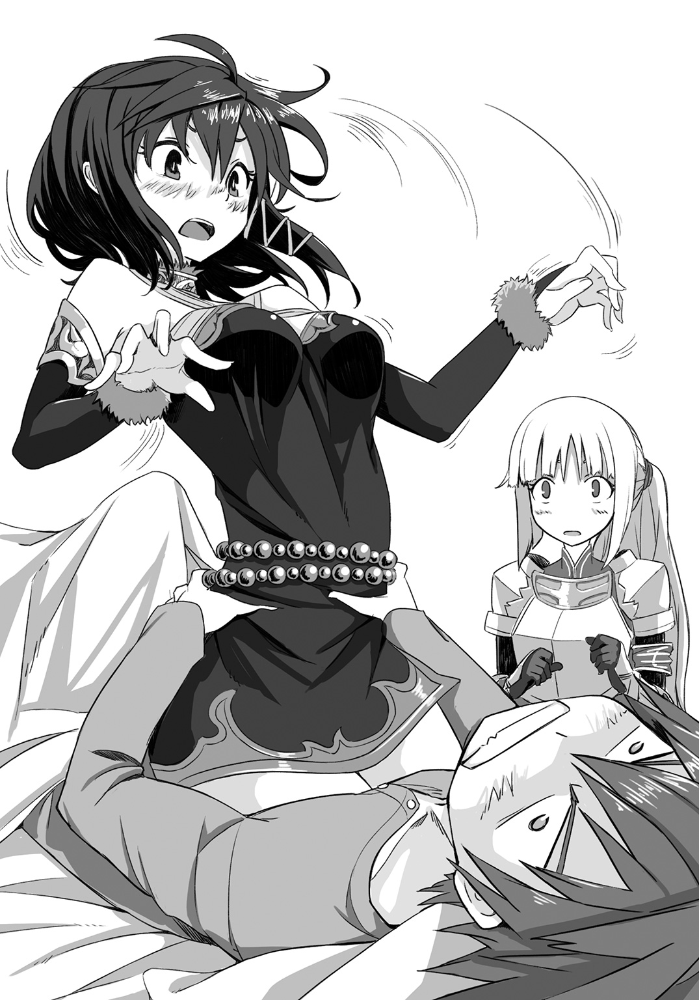
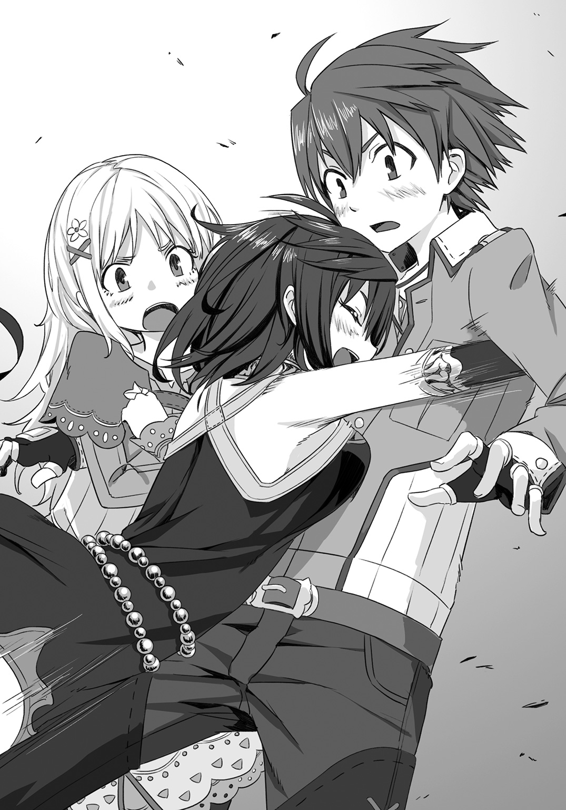

| 孤高の精霊術士 2 ―強運無双な闇王封印物語― | |
| 華散里 | |
この本は縦書きでレイアウトされています。
また、ご覧になる機種により、表示の差が認められることがあります。
 ダッシュエックス文庫DIGITAL
ダッシュエックス文庫DIGITAL
孤高の精霊術士２
―強運無双な闇王封印物語―
華散里
序章 その日常に潜む闇
「お頭っ。こちらへどうぞ!!」
「............へっ？ あ、いや、その......俺は」
「そんなこと仰らずに、どうぞどうぞ!!」
薄暗くて狭い地下牢。
石畳でできたこの場所はじめじめとして、不衛生さを象徴するかのように、すえた臭いが充満していた。
鉄格子と石造りの壁で囲われた空間に薄汚れた男達が詰め込まれている。
ココにぶち込まれるまで、所謂外の世界では荒くれ者だったに違いないガタイのいい男達。
そんなむさ苦しい野郎達に取り囲まれた俺は、中でも際立って柄の悪そうな一人の男に、牢の中央に積み上げられている敷物へ座るようにと勧められていた。
しかも『お頭』なんて妙な呼び方をされながら......。
「な、なぁ。その、さ。お頭っていうの、どうにかならないの、かな？」
「何かご不満で!?」
「あっ、あ、い、いやいやいやいや。ご不満だなんてとんでもないっ。ただ、その......俺だけ敷物を使うっていうのは気が引けるって言うか、さ？」
きっと本人からすれば普通に問いかけているだけなのだろうけれど、いかんせん顔が厳つすぎる。小さな子供が見たならトラウマもののレベルだぞ。
むき出しの太い腕には戦歴を語る傷っていうかが沢山刻まれていて、視線が合っただけで恐怖に心臓が止まってしまいかねない。
「さ......流石はお頭だ!! 花冠祭だってのに恩赦も弾き飛ばすくれぇの大犯罪をやってのけるだけのことはありまさぁ!!」
「いや、だからそれは何かの間違い......」
「明日処刑されるってのに、この落ち着きようったらねぇぜ!!」
「いやいやいやいや。だからそれ洒落になってな......」
「わかってますって!! 殺される前に、神官の奴らをドーンと血祭りに上げるってことくらい!!」
「いやっ、だから!! そもそもそれが誤解なんだって!!」
「ご謙遜を!!」
愉快そうに「ガハハハハハハ!!」と笑い転げる男達を横目に、がくりと肩を落して項垂れるしかない。
このままだとどうやら明日、俺は処刑される運命になっているらしい。
これはかなりヤバい状況というか、洒落にならないというか......。
（レイジェ達、助けに来てくれるよな!? ま、間に合わなかったら......俺の首がっ!!）
奇妙に盛り上がる地下牢の一角で、俺は手首に巻かれた皮の紐をぼんやりと眺める。
黒ずんだ銀のプレートがついているそれには、神官用の古代文字で『極刑』と刻まれていた。
「なんだってこんなことに......」
問うたからといって事態が好転するわけでもないけれど、叫ばずにはいられない。
「どうしてこうなった――――――ッ 」
」
突然の俺の叫び声は狭い地下牢に響き渡り、突然の大声に驚いた周囲の男達は、ただただ目を見開かせていた。
季節は春を迎え、野辺は勿論のこと、首都アイシャフのあちこちでも可憐な花がそこかしこに咲き乱れていた。
とはいえ冬の名残りか、夜はまだまだ肌寒い。
だからこそ、暖かい布団にくるまっている覚醒前のひと時は、至福ともいえるのだけど。
「............さい。起きてください、殿下」
開けられた窓からフワリと漂う風に乗り、庭に咲く花の香りが鼻孔をくすぐる。
そんな中、ふかふかの布団にくるまっていたら誰だって目を覚ましたくないに決まっているわけで。
かけられる穏やかな声に対し、寝ぼけて「あー......」だか「うぅー......」だか返したものの、まだ起きることができないでいた。
それでも声の主は慣れた様子で根気よく俺に声をかけ続けてくる。
「殿下、お願いいたします。そろそろ起きていただかなくては、朝の軍議に間に合いません」
「んー......。無理、休む」
気だるい腕を布団から出し、手をひらひらと振ってみせた。
「殿下のお気持ちはわかりますが、朝の軍議には必ずご出席されるというお約束で城を出られているのです。起きていただかなくては、私が叱られてしまいます」
重たい瞼をどうにかこじあけたその先で、青い瞳と視線がかち合う。
怒るでもなく、どちらかといえば困り果てた表情で俺の顔を覗いていたレイジェは、俺が目を開けたことにほっとした様子で表情を和らげた。
「でもほら。今は花冠祭の時期だから、暗黙の了解で何処の国とも争いごとなんか起きないわけだし。だったら軍議に俺がいなくたって、誰も気にしないって」
花冠祭というのは、この大陸全土で行われる『春の精霊』へ豊穣の祈りを捧げる時期になる。
元々は神国とも言われるランカ国を中心にした春祭りだったらしいが、信仰や文化の広がりと共に大陸全土で行われるようになっていき、そしてこの期間は国家間での戦争をしてはならないということになっている。
正式な協定が結ばれているわけじゃないけれども、豊穣を司る精霊王が争いごとを好まないとか......俺も宗教的なことは詳しくないからよくわからんが、兎に角そういうことになっているらしい。
だから俺が暮らしているアイシャフ王国も例外ではなく、首都は勿論のこと小さな村までどこもかしこもお祭りムードが漂っている。
「確かに今のアイシャフは平穏この上ない状況ではございます。それでも騎士団の長たる我が君がお出ましにならなければ、軍議自体が始まりません」
「いやいや、大丈夫。皆ほら、有能だから」
それに何より、騎士団の長と言えば聞こえはいいけれど、俺の場合は他になり手がなくて祭り上げられているだけというほうが大きいわけだし。
意識が再び眠りの中へ吸い込まれそうになる俺の、その手をガシッと握ってくる感覚にようやく瞬きをひとつ。
「湯浴みでもなされれば、お目も覚めるか、と......えっ？」
「んー............えぇッ!?」
滅多なことでは俺に直接触れたりしないレイジェが、驚きの声と共に俺の手を強く握ったことに驚いて目を見開いたのは、きっかけに過ぎない。
俺の視線は肝心要のレイジェの姿を通り越し、天井へと釘付けだ。
衝撃のあまり口をポカンと開けてしまうという、おまけつきで。
（な、何だこれっ!?）
寝台に横たわる俺が見上げたわけなのだから、その先には当然ながら天井があるはず。
しかし視線の先には、深紫色に淡く発光している魔法陣が浮かんでいるじゃないか。
寝起きの頭を覚ましてくるには、どうにも危険な香りがプンプン漂っている。
（いやいやいやっ。朝から洒落になっていないんだけど!?）
輝きは淡く濃くを繰り返しながら、次第に宙に刻みこむ文字を増やし複雑に進化をとげていく。
明らかに何かヤバそうなその魔法陣を、レイジェもまた驚きの表情で見上げていた。
「レイジェッ、すぐに離れろっ!!」
思考が停止して数秒。
ハッとしてレイジェにそう叫んだ刹那。
ズルズルズルズル――――......と。
魔法陣の中心からナニカが這い出してくる。
（あれは......人間の、足!?）
にゅっと突き出た白く細いその足は......。
「って、おい。まさか―――ぐぇッ!?」
「で、殿下ッ」
ドスッ!!という情け容赦のない、鈍い音と共に真上から見事な垂直落下を披露する。
魔法陣という薄い膜をスルリと抜け、現れ出たのは艶やかな黒髪に紫の瞳が印象的な少女。
一体何に対してだろうか、目が合った瞬間ほんの少しだけ、驚いたような表情を垣間見せていた。
（っていうかこれは）
でも俺にとっての問題はそこじゃない。
落ちてきた少女の白いその足は、いや、膝は
俺の腹の中央めがけて華麗な着地、いや、膝蹴りを決めていたのだ。
（な、内臓飛び出すからっ）
本当は叫び声を上げてのたうちまわりたいくらいの衝撃だったが、生憎と呻き声しか絞り出すことができない。
「おぉ、ハルキ!! 息災にしておったかえ？」
「ユ、ナ............ッ!!」
正直これは完全に生命の危機なんじゃないのかっ!?
なんていう俺の心の中の悲鳴を知ってか知らずか。
いやきっと、伝わっていたとしてもスルーされていただろうけれど。
その少女、ユナは楽しげに弾んだ声で、俺の名を呼んでいた。
（さっきまで元気だったけどっ。たった今、お前の襲来で虫の息にっ!!）
そう叫びたいけど、やっぱり声がでてくれない。
かわりに、「ぐ、ぅぁっ」なんていう潰れた蛙さながらの呻きだけが零れ出る。
「ふふ。久方ぶりに妾の顔を見て、言葉も出ぬほど嬉しいようじゃのぅ」
（馬鹿っ。声にならないくらい、腹が圧迫されているんだよ!! 物理的に!!）
ほんのり頰の赤いユナとは対照的に、俺の顔は真っ青だろう。
新鮮な空気を求めた俺の唇が、パクパクと虚しく開閉するのみ。
下手したらこのまま死者が訪れるとかいう、黄泉の河へと直行だ。
（た、頼むから、取りあえず俺の上から退いてくれッ）
そんな願いを込めて更に口をパクパク動かしてみたものの、腹に正座よろしく座るユナに通じるはずがない。
「何じゃ。妾の美しさに見惚れて言葉を忘れてしもうたのかぇ？」
ユナは何故だか頰を赤らめながら、細くて白い指先で俺の頰を挟み顔を覗き込んでくる始末。
（いやいや。死ぬから、このままホントに死んじゃうから）
未だに握られていたレイジェの手を振りほどくと、そのまま両手でユナの腰をガシリと摑んで持ち上げた。
「きゃぅっ!? な、なななな何をするのじゃ!! 急にっ!!」
「――――くはッ!! し、死ぬかと......思った............」
ほんのりだった頰を真っ赤に変色させたユナが、俺の頰へ当てていた両の指先を宙でわたわた動かしバランスを取る。
そして結局、その掌は両方とも俺の胸の上へ乗せることで、納まったようだ。
何やらユナらしくない妙に可愛い声が聞こえた気もするけれど、胸いっぱい空気を取り込むことで忙しかった俺に、それを突っ込む元気はない。
「それはこっちのセリフだろうがっ。あんな上から突然腹に膝を入れた揚句、そのまま正座されたら流石に内臓潰れるかと思っただろっ!!」
摑んだユナの腰は思った以上に細くて柔らかい。
あんまりにも柔らかいものだから、このまま折れてしまうんじゃないかと逆に焦りがこみ上げる。
ユナはユナで、俺の言葉でほんの少しだけばつの悪そうな表情を浮かべてみたものの、頰をむくれさせて横を向いていた。

「仕方がないではないか。妾とて本当はそなたの褥の中にこっそりと出て、驚かせるつもりであったのじゃ!!」
「いやいやいや。逆切れするところじゃないし、論点ずれてるだろうが」
しかも『移転魔法』なんて、滅多にお目にかかることができない高等魔法じゃないか。
三大国の一角と呼ばれ、俺達人間の暮らす大陸でも特に有力なアイシャフ王国であろうと、使いこなせる魔導師なんて数人いるかどうかというところ。
「そのほうがそなたも驚くかと思うてのぅ」
それを事もなげにホイホイ使ってみせるユナには、もう溜息すら出てこないって言うか......。
流石です、ユナ様。としか言いようがない。
「今のもある意味、目が飛び出るほど驚いたけどな？ ところでいい加減、上から退くなり宙に浮くなりしてくれないか」
「何故じゃ？」
餓鬼の頃から畑仕事で培った腕と腹筋はそんなに柔でもないつもりでいるけれど、流石に人一人支え続けるのは、それなりにきつい。
何よりユナの身体はどこもかしこも柔らかくて、ちゃんと飯を食っているのか疑問に思えてしまうくらいに細いから、このままポキッと折れたらどうしようなんて考えてしまう。
寝そべったままという間抜けな格好で見上げて懇願してみれば、不思議そうに顔を傾けてくるユナに、溜息がまたひとつ零れ出る。
普段気が強いくせに、こういうところは箱入りＭＡＸっていうか何て言うか......。
「ユナが細すぎて腰ごと折れそうで怖いから」
「......むぅっ。し、仕方がないのぅ」
どうやらユナへの直訴は成功したらしい。
もともと赤らんでいた頰を何故か耳まで染め上げながら、小声で答えたユナはその柔らかな肢体をフワと宙に浮かせていた。
「それで、花冠祭で出歩く許可は貰ってこられたってことか？」
それからすぐにユナの下から這いだした俺は、身を起こして寝台下のスリッパに足を差し入れる。
ユナは天井付近で、フワフワと身を漂わせていた。
もしここが水中だったなら、その優美さで人魚にでも間違われているかもしれない。
「当然じゃ。妾にはそなたという、使い魔契約を交わした主が居る故、ランカの神官ごときに文句は言わさぬ」
頰にかかる黒髪をサラリと指先で梳きながら、女王様然として上品な笑みを浮かべるユナに、つい苦笑してしまう。
大体からして、人間の中でも魔法が使える一族なんてほんの一握り。
誰だって『魔力』を持ってはいるけれど、それを『魔法』として直接具現化することができる者が『魔導師』と呼ばれている。
そんな魔法を使うことができるというチカラは、本人の努力よりも血統による遺伝が大半だ。
親が魔導師なら、子供も魔導師の素養を持つ。
チカラの強い一族は当然ながら大国にお抱えとして代々仕えていて、神国であるランカで神官に就けるとなれば、相当上位の魔導師に違いない。
まぁ、つまり。
それを見下してしまうことができるだけのチカラを、ユナはその身に秘めているということだ。
（なにせ皇魔国のお姫様だしなぁ......）
世間知らずで箱入りなのも。
唯我独尊で我がままなのも。
そのくせ妙なところで天然なのも。
全部そこに起因しているわけで。
「それなら午後は街に遊びに出られるな。花冠祭も残り少ないから、間に合うのかどうか心配していたんだぞ」
「妾が居らぬ故、一人寝が寂しかったかえ？ 皇魔国へも顔を出しておった故、少々遅くなってしもうたのじゃ」
皇魔族の暮らす大陸と人間の暮らす大陸は『神の作りし結界』で隔てられていて、普通ならば行き来をすることができないとされている。
それでも物事には例外ってものが必ず存在するわけで。
一部の高位皇魔はランカ国が管理する特殊な魔法陣を使い、『神の作りし結界』を越えることができるらしい。
ユナが言うには、人間の世界を見聞するのも嗜みのひとつだとか。
「いやいやいや。何で話がそこに飛ぶんだよ!?」
「安心するが良い。今宵からは妾が添い寝してしんぜようぞ？」
俺へ話しているはずなのに、ユナは視線をレイジェへ向けると、何故かふふっと得意げな笑みを浮かべていた。
対するレイジェは、むっとした様子で眉根をキュッと寄せている。
「殿下。いつまでもお話しなさっていては間に合いません。僭越ながらお召し替えのお手伝いをさせていただきます」
「............へ？ あ、いやいやいや。着替えくらい、自分で」
それにしても、だ。
今朝はどうもレイジェの様子がいつもと違う。
「お手伝いをさせていただきますね!?」
いつもなら着替えを渡すとすぐに部屋を後にするはずなのに、今日に限って引き下がるつもりはないらしい。
「え、あ......あー............。お、お願いしよう、か......ぐぁっ!?」
逆らえない雰囲気に流されて、お願いしようかと言ってみたものの、再び上空からユナの膝蹴りが俺の背中に垂直落下のクリーンヒット。
全ての衝撃を受け止め限界点を突破した背骨が、ボキリとあっさり折れそうなんだがっ。
「ユ、ユナ......うぉっ!!」
「妾が戻ったからには、そなたの好きにはさせぬ。着替えの手伝いは無用じゃ」
そんなユナは背後からのしかかるようにして、俺の首筋に腕をからめてきた。
見えないから断言はできないけれど、ユナの視線は真っ直ぐにレイジェに向けられているようだ。
「お言葉を返すようですが、ユナ殿。私はハルキ殿下にお仕えする騎士でございます。お身の回りのお世話をさせていただきますのも、当然のことかと」
対するレイジェは普段通りの涼しい顔で、俺の着替えを腕にニコリと笑みを浮かべている。
「まぁ、ほら。何にしろ着替えを......」
白くて細いユナの腕をトントンと指先で軽く叩きながら訴えてみたものの、そんな言葉は華麗にスルーで俺涙目。
「魔道具なしでは魔法も使えぬ人間風情が、妾に対して物申すとはいい度胸ではないかぇ？」
「私が捧げますのは魔法ではなく、この身と我が剣。そして従いますのは殿下ただお一人でございます」
俺のすぐ頭上で、バチバチバチッと見えない火花が弾けた。
うん、見えないけれど。そんな気がして仕方がない。
（相変わらず、あんまり仲が良くないよなぁ......）
そろーり、そろーりと。ユナの腕を外してみたら思っていたよりすんなりと抜け出すことに成功する。
どうやらレイジェと対峙するほうに今は集中しているようだ。
レイジェが腕にしている着替え一式は諦めて、二人の会話に耳を傾けながらも、自分でクローゼットを物色していく。
ここのところしばらくは、ユナが皇魔国へ戻っていたこともあり比較的のんびりとした朝が続いていたのだけれど、どうやらそれも今日で終わりみたいだ。
（まぁ、こういう賑やかなほうが、俺は好きだったりするんだけどな）
開けたクローゼットから適当に着替えを見つくろうと、それらを手早く身につけていく。
「大体ッ、先ほどここへ戻りてより気になっておったのじゃが、そなた何故にハルキの手など握っておったのじゃ!!」
「わ、わわわわ、私はっ。あれはただの不可抗力でございます。ユナ殿が急においでになられます故っ」
ひと通りの身支度を終了し、あとは背中に親父から受け継いだデカい剣を背負うだけ。
形見の剣、というやつだ。
俺は餓鬼の頃、親父とお袋を同時に亡くしている。
それで唯一の身内だったじいちゃんに引き取ってもらって育てられた。
でもまぁ、そんなじいちゃんも寄る年波には勝てず、少し前にぽっくり逝った。
結局最後に俺の手元に残されていたのは、背中の剣と古ぼけたお袋の指輪。それから随分と年季の入った短剣が一振り。
「よもやそなた、妾の居ぬ間にハルキに不埒なことなど致してはおらぬであろうな!?」
「......なっ!! そそそそ、そのようなこと、するはずがございません!!」
着替えを終えてチラリと見れば、宙に浮いてレジェを見下ろすユナと、すっかり言い負けてしまい顔を真っ赤に染めたレイジェが、それでも視線を逸らすことなく対峙している。
（あー。そろそろ止める頃合いかな？）
剣を握れば、王国一流の屈強な騎士達と対等に渡り合うレイジェだけれど、ユナとの言い争いには結局こんな感じでいつも動揺してしまうみたいなんだよな。
「ユナ、レイジェ。準備もできたし、腹も減っているし。朝飯でも食いにいかないか？」
「え？ あ、はいっ。殿下!!」
「......むぅ。これから男女をやり込める、大事なところであるというに。じゃが、ハルキが空腹であると言うならば仕方がないのぅ」
声をかければ、慌てて姿勢を正すレイジェと、不満そうに頰をむくれさせるユナ。
二人の関係があまり良くないというのは、仕方がないことだと半ば諦めている。
「ささっと食って、仕方がないから軍議へ出るか。......面倒だけど」
「面倒でも諦めるしかあるまい。そなたが城での暮らしは堅苦しいと、自らゴウイのもとを選んだのじゃ」
「俺は世間の片隅でのんびり暮らしたいだけなんだけどなぁ......」
「無茶を申すな。そなたは大陸でも有数なる大魔導師ぞ？」
初めて出会った時。ユナは薄汚れた小さな魔獣姿で、レイジェに追いかけられていた。
まだ子供の魔獣だと思って助けてみたら、いろんな偶然が重なり大魔導師とやらに勘違いされた上、何だか妙に懐かれて......。
そしてどういうわけだか、俺の使い魔になるとか言い出し現在に至る。
しかも偶然というものは重なるもので、俺が死んだじいちゃんの遺言で訪ねる予定だった、親父の親友ゴウイがレイジェの父親だった。
色々あって、今はそのゴウイのところで居候させてもらっている。
「あぁ、大変だ！ このままじゃ、朝の軍議に遅刻してしまう！」
「心にもない台詞を大げさに申すでない」
敢えて棒読みで言い放つと、呆れながらも笑みを含んだ声で突っ込みを入れてくるユナと、俺が軍議へ出る意思を示したことで安堵の表情を浮かべるレイジェ。
なんにせよ、大魔導師云々の話になると、ユナとの水かけ論にしかならないわけで。
今は適当に誤魔化しておきたいところだ。
「いやいや。心はこもっていないけれど、半分本当だし。城に連れ戻される方が面倒だし」
こういったやりとりも何だか久しぶりに感じる。
実際はほんの数日なのに、それだけ俺がこの賑やかな毎日に染まりつつあるっていうことなのか。
なんにせよ、ユナがアイシャフに戻ったことで、朝のテンポも通常運転再開というべきなのかもしれない。
なんてことを考えながら、部屋の扉に手をかけようとしたその時。
――――ガンッ!!
と、小気味よい音が室内に響き渡っていた。
「痛っ、つぅぅぅ」
「ハルキッ!!」
「殿下!?」
俺が扉を開けるよりも一瞬早く開け放たれた扉によって、強打した顔面からプシュ～......と、何かが抜けていく錯覚。
いや、実際そんなものは出てないけどね？
出てはいないが、完全に出鼻をくじかれた上に、情けなく座り込んで顔面を両手で押さえ込む俺の立場が虚しすぎてっていうか......。
「おはようございます!! ......って、あら？ ハルキ様？ このような所に座りこまれて、どうなさいましたの？」
しゃがみ込んだまま見上げた先には、蜂蜜色の長い髪をゆらめかせ、大きな緑の瞳を更にいっぱいまで見開いて口元へ手を当てているリチェルが立っていた。
「お前は出会いがしらに俺の顔面を負傷させる専門家なのか？ リチェル......」
頼むから、部屋に入る時はノックをしてくれ、ノックを。
ここに来て初めて会った時、色々あって湯桶をぶつけられたな、なんて懐かしみながら、髪をガシリと搔いて立ち上がる。
俺の動きを目で追っていたからか、リチェルの豊かな金髪がゆらりと揺れていた。
「まぁ！ わたくしはまだ何もしておりませんもの。それは言いがかりというものでしてよ？」
「まだ？ 今、まだって聞こえたんだけど!?」
愛らしく小首を傾けながらも、ちょっと怒った様子で腰に手を当てる仕草が可愛くて、ついつい目を細めてしまうじゃないか。
って、これじゃまるで好々爺だなと自分で思って苦笑する。
（ホントいつ見ても。いや、日に日にお袋に似てくるんだよなぁ......）
お袋とリチェルの親父が兄妹ということで、本来ならば伯父に引き取られることになる恐怖の現実から、どうにかこうにか逃げ切ったのがつい先日のことになる。
俺もアイシャフに来て初めて知らされたのだけど、どうやらお袋は王女様という雲の上の存在だったらしい。
隣国の片田舎で毎日畑を耕して暮らしていた俺にとっては、あんまりにも非現実的すぎて未だに信じ切れていない部分があるようなないような。
自分でも正直よくわからない、というのが正しいかもしれない。
「気のせいですわ。それよりもっ。お伝えしたいことがありまして、参りましたの」
そんなこんなで、王家の親族である皇族の男子として、半ば強制的に押しつけられたのが『騎士元帥』とかいう、無駄に名前が重厚な役職だ。
建て前的には騎士団の長ということになっているらしいけれど、アイシャフ王国にある四色で表わされる騎士団の団長達は切れ者ぞろいで、俺としては特にすることがない。
「ゴウイのおっさんからの催促だったら安心しろ。朝飯食ったら城に向かう予定だから」
強いて言うならば、この朝の軍議というのに出席して、座って必要な書類にサインするだけ。
普段は騎士団の鍛錬に参加とかしなければならないのだけれど、花冠祭の時期は全面的に休みになっている。
「それもありますけれど、お兄様からのお呼び出しですわ。朝の軍議に向かう前に、執務室に寄ってほしいとのことです」
「アレフ兄貴が？」
「はい。ハルキ様に重要なご相談があるそうですわ」
「............すっげぇ、嫌な予感しかしない」
ガクリと項垂れた俺を励ますかのように、三者三様の視線が向けられていた。
ハルキを先頭に、ゆらゆらと金の髪を揺らしてリチェルが隣を陣取っている。
すぐ後ろには当然のようにレイジェが続いていた。
いつもならばリチェルと競うようにしてハルキの隣に密着しているハズのユナが足を止めたままなのを不思議に感じたのか、ハルキが首を傾ける。
「どうした、来ないのか、ユナ？」
「女子の身だしなみじゃ。髪もとかずに参れはせぬ故、先に向かっておるが良い」
「そうか。それじゃ先に行っているな」
早く来いよと言い残し、部屋を後にしたハルキを見送ったユナは、扉がパタリと閉じると同時に踵を返し、寝台へ歩み寄っていた。
「............偶然であろうか」
自問に近い小さな呟きは、静まり返った部屋の空気に溶けていく。
僅かに身をかがめると、ユナはその白く細い指先で、まだ直されていない寝乱れた白いシーツの波をツツツと辿った。
「妾は確かに、褥の中に移転したはず。それが僅かとはいえ、場所を違えるとは......」
ほんの僅かな違和感は、時に大局の要ともいえる綻びとなり得る。
「しかもあのように、真上からハルキに............うぅ。ま、真上から......」
つい先程の事の成り行きは、ユナ自身にも予定外だったのか。
耳まで赤くなりながら、寝台へポスンと倒れこむ。
そうしてそのまま、ハルキの枕をひっつかむと胸元へぎゅぅと抱き寄せた。
「は、はしたないことをしてしまったのじゃ......」
モフモフモフっと、額を枕へ押しつけしばらく悶えるようにしていたユナだが、むくりと身を起こす頃にはいつもと変わらぬ不敵な笑みが滲んでいた。
「なれど午後から妾と花冠祭へ行くと申しておったのぅ」
腕に抱いていた枕をポイと投げ、艶やかな黒髪をさらりとかきあげ思案する。
「ハルキはどのような花冠であれば喜ぶであろうか」
春を喜び、春を称え、春の精霊を模して花冠を被るこの祭り。
娘達は思い思いに花を摘み、想い想いに髪を彩る。
「まずは妾も参らねばのぅ」
そうしてようやく、扉へと足を進めたユナだが、不意に動きを止めて振り返る。
「何事もなければ良いのじゃが......」
小さな小さな違和感は、気のせいという言葉に包んで胸に押し込む。
闇を迷わす綻びは、些細な日常の陰に紛れながらも、既にジワリと広がりを見せていた。
第１章 初めてのお使い先は神国ランカ
そんなわけで現在地、アイシャフ城の廊下。
両隣りにはユナとリチェル。少し後ろにレイジェといった、いつも通りの面子で皇太子の執務室へ向かっているところ。
アレフ兄貴はアイシャフの皇太子で、リチェルの実兄。俺にとっては従兄にあたる。
無駄にでかい扉の前へと辿り着くと、部屋を護る騎士二人が恭しく頭を下げてきた。
そのまま室内へと通されれば、奥にある執務机に頰杖をつきながら書類に目を通す人影と、その背後に控えるようにして立つ男が一人。
（初めて見る顔だな）
チラと視線を向ければ、男は瞳を細めて笑みをたたえ、そうして深く頭を下げてくる。
「やぁ、ハルキ。朝の忙しい時間に呼び出したりして悪かったね？」
「アレフ兄貴が俺を呼び出すなんて珍しいな？」
「折り入って頼みたいことができてしまってね。......と。あぁ、その前に。紹介しておこうかな。彼が新任の魔導師長だよ」
俺の視線に気がついたのか、アレフ兄貴は手にしていた書類を一旦机の上へと置くと椅子から立ち上がる。
「初めてお目にかかります、ハルキリア殿下。この度、魔導師長を拝命いたしました、マクセヌと申します」
「............マク、セヌ？」
年齢的には国王や、リチェルの父であるゴウイのおっさんと同じくらいだろうか。
新しい魔導師長だというその男の顔を見るのも初めてだとは思う。
それにもかかわらず、声を聞いた途端に『忘れていた何か』を思い出しそうな、そんな気がして男の名前を小さく呟いた。
（こいつ......どこかで？）
手を顎に添え、じっとマクセヌの顔を眺めてみるのだけれども、魚の小骨が喉に引っ掛かっているような不快感だけが脳裏に過るだけで、それ以上何かが浮かぶこともない。
「どうかしたのかい、ハルキ？」
余程難しい顔でもしていたのだろうか。
困ったような表情で眉尻を下げたアレフ兄貴が俺の顔を覗き込み、控え目な声で問いかけてくる。
「え？ あ、いや。なんだか聞き覚えのある声だなと思ったんだけど、多分気のせい。それで、俺に頼みたいことって？」
「あぁ、そうだった!! 実はハルキに、リチェルの護衛を兼ねてランカに行ってもらえないかと思ってね」
頼み事とは言うけれど、思うにこれは決定事項に違いない。
今日は近侍の騎士達がいないせいでリラックスしているのだろうか、いつもより砕けた口調のアレフ兄貴とマクセヌの顔を交互に見比べ首を傾けた。
「ランカってことは......リチェルが花冠祭の使者に？」
「そうなんだよ。困ったことに、他に陛下の名代として赴ける王族が居なくて......。例年ならばカルシュ兄上が使者を務めていたのだけれども、病も重いようで仕方がないんだ」
「あー......。なるほど、それは確かに。でも護衛なら他にもっと腕の立つ奴をつけたほうが良いのじゃないか？ 言っちゃなんだけれど、俺の剣の腕前なんてたかが知れてるんだし」
そりゃ俺だって、かつては青の騎士団長を務めていた親父から、餓鬼の頃にみっちり仕込まれてはいたけれど。親父が死んでからは自分なりに一人で稽古を続けた程度にすぎない。
どっちかと言うならば、農作業ならどんと来てくれというレベル。
かといって、ユナが言うような大魔導師というわけでもない。
いや、どうやら死んだじいちゃんから受け継いだチカラがあるみたいなんだけれど、身体のほうがついていかないからとか言われてあっさり封印されてしまっている。
つまり、今の俺はそこらへんにいる見習い騎士と大して変わらない程度、もしくはそれ以下になってくるわけで......。
「ハルキも知っての通り、リチェルには悪い癖があるからね。万一のことがあっては国の威信に関わってくる。まぁ......流石のリチェルもハルキまで出し抜かないだろうし。その上で柔軟に対応してもらう意味でも、ハルキを護衛に推薦したんだよ」
そりゃ確かに他の騎士団長に比べれば、柔軟性に富んでいるのかもしれないけれど、言い方を変えれば一緒になって抜け出す可能性だって......とは考えなかったのか？
「抑えきれない好奇心で脱走して、花冠祭を楽しもうとそこら辺の村にふらりと潜入しかねないから、そばにいて何とかしろということ？」
「あぁ、そんな身も蓋もない......。間違ってはいないけど」
つまり俺も一緒になって脱走することが前提なわけですね、わかります。
だけど、それだと護衛の意味があるのか？
やっぱり騎士団長の誰かがついていった方が良いんじゃないのか？
「先ほどから聞いていれば酷いですわっ！ わたくし、そんなことはっ」
「しない？」
「......うっ」
それまで大人しく事の成り行きを見守っていたリチェルが抗議の声を上げるも、アレフ兄貴に真顔で問いかけられてあえなく撃沈。
リチェルへ向けていた満開の笑顔をそのままに、顔だけ俺へと向けてくる。
「騎士元帥として忙しいことはわかっているけれど、この通り。それに実を言ってしまうと、四人の騎士団長達は花冠祭の警備の担当場所が既に綿密に決められている。ここは私の顔を立てると思ってお願いできないかな、ハルキ？」
「あー、もう。アレフ兄貴ってこういう強引なところは、ホントに伯父貴そっくりだよな」
ガシガシと頭をかいて手近な椅子にポスンと腰を下ろす。
随分と上等な材質で作られているのだろう。座り心地は抜群だ。
「引き受けてくれるのかい？」
「行くよ。断っても結局、リチェルがヘマしてないか気になって仕方ないだろうし......ん？」
俺の返事でほっとした様子のアレフ兄貴を眺めていたら、その視線を遮るようにユナが目の前に仁王立つ。
腰に両手をあて、目尻がつり上がり、心なしか......いや、どこからどうみても表情は不機嫌そのものだ。
「ど、どうしたんだよ、ユナ？ ......って、痛ぇぇぇぇぇッ!!」
機嫌を損ねるようなことをした覚えは勿論ないわけで、理由がわからず問いかけてみたんだけれど、答えの代わりにヒールで足の甲を踏み抜かれた。
「あぁぁぁぁぁ!! か、貫通する貫通するッ!!」
「花冠祭へは、妾と共に午後から出かけると申しておったではないか!!」
「確かに、そうだけどっ」
むぅぅぅぅ、と。頰をむくれさせながら足に力を込めるユナ。
俺としては必死極まりないこの状況の中、すぐ後ろへと歩み寄ってきたアレフ兄貴にポンと肩を叩かれる。
「ランカに行けば本場の花冠祭も見てこられるんじゃないかな。ユナ殿を連れて楽しんでこられると思うよ？」
そんなアレフ兄貴の言葉に、どういうわけだか急に表情をパッと明るくさせたユナが、満足そうにひとつ頷き俺の足からヒールを引き抜くと、腕をガシリと摑んで引っ張った。
「決まりじゃ、ハルキ。小娘の護衛という立場は些か不服ではあるが、今回ばかりは目を瞑ってやるとしようぞ」
「えっ？ ちょっ、ユナ!! 勝手に決めるんじゃ......」
「流石はユナ殿。これほどの美貌なのだから、花冠を載せればハルキも惚れなおすに違いないね？」
「ふふふ。そうと決まれば、ハルキ。早ぅ戻りて、準備を致そうぞ!!」
「えぇぇっ!? いや、でもっ。軍議がっ」
そう言わずにはいられないくらい、突然態度が百八十度変わってしまったユナに目を見開いてしまう。
どうしてあのたった一言で、機嫌が直ったどころか鼻歌でも歌いだしそうなくらいにご機嫌なんだ!?
オンナゴコロの解読は俺にはまだ無理みたいだ。
「あぁ、それは大丈夫。始めてしまうように言ってあるからね。......もう、終わる頃かも？」
「俺の存在意義っ!!」
それに加えて俺の存在感のなさはどうなの!?
いや、今に始まったことじゃないけどっていうか、結局朝の軍議はやっぱ俺抜きでも問題ないんじゃっていうソコノトコロを実感して胸が痛い上に切ない俺心。
試しに「うっ......」とか。
わざとらしく胸元を押さえてみたんだけれど、あっさりスルーされました!!
「もたもたするでない、ハルキ!!」
「待てよ、ユナ!!」
「あっ!! お待ちください、殿下っ」
俺の腕を引っ張るユナに、仕方がないかと思い腰を浮かせれば、そのまま引き摺られるようにして扉へと直行する。
それに慌てたレイジェが足早に近づいて来ていた。
スキップでもしそうなくらい楽しそうなユナを見ていると、細かいことはまぁ良いかという気になってくる。
あれこれ考えているのは性に合わない。
だったらせっかくなのだし本場の花冠祭を楽しんでくるか!!
なんて思ってしまった自分のことを、呪ってしまいたくなるのはこれからほんの数時間後のことになる。
当然ながらそんなこと、この時の俺には知る由もなかった。
パタンと扉が閉じれば、皇太子の執務室はそれまでの賑わいが噓であったかのように静まり返る。
アレフ皇太子の斜め後ろに控えていたマクセヌ魔導師長が、おや、とばかりに首を傾けた。
「ご一緒に行かれなくてよろしいのですか、リチェルカーナ姫？」
ハルキ達と共に退室すると思われていたリチェルがその場に残ったことに、皇太子もまた興味深げな視線を向ける。
「何か言いたそうだね、リチェル」
「だってお兄様ってば酷いんですもの」
それまで飲み込んでいた言葉が一気に溢れ出ているかのように、両手をグッと握りしめたリチェルは不機嫌さを隠すことなく数歩、皇太子へと詰め寄っていた。
「酷い？ これは心外だね。元々は新魔導師長としての顔見せも兼ねて、ランカへはマクセヌが行くはずだったのを、どうしても自分が行くと言い出したのはリチェルじゃないか」
「だって、それはっ」
やれやれといった風情で頭を軽く左右に振った皇太子は、リチェルの艶やかな金の髪へと手を伸ばし、ポンと乗せるようにして撫でる。
「気持ちはわかるけれど、流石にハルキリアだけを連れて行くというわけにはいかないことくらい、リチェルだってわかっているだろう？」
「それはわたくしも承知の上です。けれども、何もあのようなことをユナ殿に言わなくても......」
幼子を諭すかのような口調に、逆に冷静になったのだろうか。
リチェルはじっと上目で皇太子を見つめると、諦めた様子で溜息を深く吐き出す。
「あははっ。そんなにむくれて、可愛いけれどもあまりヤキモチばかりではハルキリアに呆れられてしまうよ」
「もうっ。ただでさえ、ハルキ様は城をお出になってレイジェの屋敷へ行ってしまわれたのですもの。ユナ殿はいつだってご一緒ですし、これでは出遅れてしまいます」
そんなリチェルの様子に目を細めた皇太子は、指の先でツンと柔らかな頰を突っつき茶化すように片目を閉じた。
兄である皇太子に終始子供扱いされたことに腹を立てたのか、リチェルがその場で片足を上げトンと強く踏みならすものの、それが一層子供っぽさを醸し出していることに本人は気づくはずもなく。
「ランカまでの道中で巻き返せばいいじゃないか。まずは父上の名代をしっかりと務めておいで」
「心得ておりますわ。滞りなく務めを終えればきっとハルキ様もわたくしを見直して、子供扱いなどなさらなくなるに違いありませんもの」
精一杯大人ぶってそう答えると、優雅な仕草で一礼してみせた。
が、しかし。
「............リチェルカーナ姫？」
そのまま執務室を後にするかと思われたリチェルは、踵を返すことなく前を見据えている。
視線の先には、皇太子の背後に控えるようにして立つマクセヌの姿。
新しく魔導師長になったからといって、ぽっと出てきたわけではないこの男。
一見するとひょろりとして線の細そうな印象を受けるが、かつてはバルロやゴウイといった英傑達と肩を並べ戦場を駆けた猛者との噂でもちきりでもあった。
そんな噂をおしゃべり好きの女官たちから聞いているリチェルが、興味を持たないはずがない。
いや、それ以上に問いたいことができたというべきか。
「マクセヌ殿は......ハルキ様とご面識がおありなのですか？」
「何故、そう思われました？」
「ハルキ様がそのような感じでしたので......」
普段は無邪気でどちらかというならば天真爛漫な気質の姫ではあるが、一国の王女として育てられているが故の洞察力。
加えて想いを寄せる相手への好奇心が重なり合い、目を輝かせながらそう問いかけていた。
「いえ。確かにハルキリア殿下がまだご幼少の頃に、何度かお目にかかったことはございますが」
「まぁ、やはりそうだったのですね!?」
胸の前でパチリと手をたたくリチェルに対し、マクセヌは一歩前へと進み出ると、チラとだけ視線を皇太子へと向けた。
それに対し軽く頷く皇太子。
「はい。殿下が私のことを覚えているご様子を感じましたので、私も驚いているのですよ」
「でもそれでしたらどうして、そうと仰らなかったのです？」
頷きは許可か、確認か。
どちらにせよ目の前の二人の男達の仕草など、リチェルが気に留める様子はない。
（ユナ殿もレイジェも知らないハルキ様のことを、少しはお尋ねできるかもしれませんっ!!）
そんな気持ちがしぐさからも表情からも溢れ出ていて、この妹を可愛がっている皇太子も微笑ましげな眼差しを向けていた。
「忘れている、ということは......今の殿下にとっては、忘れるべき記憶である、と推察いたしましたので」
「忘れるべき記憶......？」
若干の含みを持たせたその言い方に不思議そうに頭を傾け、リチェルは小声で反芻する。
マクセヌはさながら教え子に対する教師のように浅く頷くと、人差し指を顔の前に立て、「いいですか？」と前置いた。
「姫も殿下がご幼少の頃の記憶が部分的に曖昧なのは、ご存じかと思いますが......」
「それはゴウイ殿に伺いましたわ。お祖父様にあたられる大賢者ラウルにより、お力ごと封じられていると」
「その通りでございます。人としての血が強い殿下にとっては、精霊術を扱うにはお身体がまだ育ちきっていないため、封印は必要不可欠。そしてそれはお力だけではなく、関連するご記憶の一部にまで及んでいます」
「それと一体何の関係が？」
聞けば聞くほど繫がりがよくわからないとばかり、キョトリとした表情を浮かべるリチェル。
その正面で姿勢を正したマクセヌは、右の掌を己の胸元へ押し当てるようにしながら、視線を足元へと落としていた。
「私は......ラウル唯一の弟子なのです」
まるで亡き師を忍び、黙禱をささげるかの如く目を伏せるマクセヌ。
驚きで手を口元へ当てたリチェルの金の髪が、波打つようにゆらりと揺れる。
「ではマクセヌ殿も精霊術をお使いに？」
「いえ。精霊術は魔法と同じく、血によりて受け継がれるもの。私にその力はありません」
それまで暫時、詰めていた息を吐きだしたマクセヌは、軽く肩をすくめ、首を振る。
ほんの一瞬、何かに焦がれるような表情を垣間見せたのは、彼もまた得られぬチカラを求めた時期でもあったのだろうか。
「あの......。精霊術と魔法って、どこが違うのでしょう」
少し重くなりかけた空気を何処かへ逃がすかのように、ふと脳裏をめぐる問いをそのままリチェルは口にする。
その小さな気遣いに気がついたマクセヌは、「なるほど」と声を漏らしひとつ頷いていた。
「根本的なチカラの在り所、でしょうか。人間が使う『魔法』は、その人間を守護する精霊に対し、己の魔法力を糧として捧げることで『魔法』という自然現象を引き起こしてもらうものです」
そこまでは大丈夫でしょうかとの問いを込め向けられた視線に、リチェルが神妙な面持ちでゆるりと頷く。
「対して『精霊術』というものは、精霊術士自身の精霊力により発生させる......あぁ、つまり。簡単に申し上げますと『人としての形を成している精霊』こそが、精霊術士なのです」
「ハルキ様は人ではない、ということなのですか!?」
聞かされた言葉は、リチェルにとってはよほど予想外のことだったのだろう。
さらに数歩踏み出し、至近距離からマクセヌの顔を見上げていた。
触れないまでもその距離の近さは、本来ならば王女としてあるまじきことだと注意を受けかねないが、そもそも注意をするべき皇太子もまた驚いたのか、口元を手で覆い隠している。
「人であり、人ではない存在。器は人であり、魂は精霊なる存在。それこそが『精霊術士』の本質である、と。私は師より教わりました」
「へぇ、それは知らなかったな」
これまで二人のやりとりをじっと聞いていた皇太子も、流石に興味を引かれたのか思わずといった感じで言葉を漏らす。
なにせ『ラウル』という名を知らぬ者は大陸にいないと思われるほど有名なのに反して、その実態を知る者はおらず、何から何までが『伝承』でしかないのだ。
それが個人名なのか、一族の呼称であるのか。
それすら国や地域によって理解が異なる程である。
「文献には記されておりませんし、何より......。本来、精霊術士である『ラウル』は数百年に一度、単独にて出現し一代限りの存在だと言われておりますので」
「ですが、ハルキ様は......」
しかしそこでふと、リチェルはとある疑問に突き当たる。
もしも『ラウル』が一代限りというのであれば、ハルキがその血を継ぐことの矛盾。
つい先刻、マクセヌが言っていた『精霊術は魔法と同じく、血によりて受け継がれるもの』ということへの矛盾。
「それはバルロ様が禁忌の............ッ!?」
――――ガタガタガタガタガタッ!!
リチェルと皇太子の疑問に答えようと、マクセヌが言葉を紡いだその瞬間。
見計らったかの如きタイミングで窓ガラスが激しく震えはじめた。
「きゃぁっ!?」
「おっと!!」
「申し訳ありません。これ以上は......世界を巡りし精霊達の禁忌に踏み入りますので、申し上げることは難しそうでございます」
ただの偶然。
ただの突風。
そういってしまえばそれまでのことである。
だがリチェルも皇太子もマクセヌも、それがただの突風ではないのだと、本能に近い部分で感じ取っていた。
「ただ......」
「ただ？」
「その力故に、精霊術士は最強にて究極。至高なる存在は天上天下において比類なき強運」
「故に......巡りし終焉なる先は永遠なる孤高、と。そう言われているのです」
「終焉なる先は永遠なる孤高............」
まるで美しい詩でも朗読するかのように。
滔々とその一文を紡ぐマクセヌの声を、リチェルは記憶に刻むかのように復唱する。
「あぁ、いけない。おしゃべりが少し過ぎましたね。姫もお支度を急がなくては、午後には出立のご予定ではございませんか？」
「あっ、そうでしたわ!! それではわたくしはこれで失礼しますわね。色々お話を聞かせてくださって感謝しますわ、マクセヌ殿」
どちらにせよ、これ以上話をすることは無理であると悟っているマクセヌは、自然な動きで壁にかかる時計へと視線を移した。
つられて時計を見たリチェルが、しまったとばかりに慌てて皇太子とマクセヌへ頭を下げる。
「いえ、大したことは申し上げられず......」
「今度はハルキ様のご幼少の頃のお話をしてくださいね」
「かしこまりました。......あぁ、姫」
今度こそ執務室を後にするべく踵を返したリチェルを、マクセヌが引きとめる。
「はい............？」
「闇の力が強まっております。光と闇は対をなし、表でありて裏なる存在。どうぞ、闇の魔法にご注意ください」
一体何かと振り返るリチェルに、ほんの少しだけ声を低めたマクセヌの言葉の意図は、果たしてどれほどの重さでもって伝わっているのだろうか。
「わかりましたわ。ご忠告どうもありがとう。では、参りますわね」
軽く頷くリチェルの手により、今度こそ執務室の扉はパタンと閉じられた。
「そう言えば、兄貴の部屋は大丈夫だったか？」
木々の生い茂る森の中、俺達四人は道なりに馬を進めていた。
いや、本当は国王の名代というだけあって仰々しい馬車が用意されていて、リチェルはそれに乗りランカを目指す予定だったんだけれど、アレフ兄貴の読み通りというべきか。
侍女の一人を影武者に仕立て、朝飯前とばかりに抜け出してきていた。
「何がですか？」
「風だよ。俺達がアレフ兄貴の執務室を出て少ししてかな。竜巻が起きたって」
滅多なことでは起きない自然現象に加えて、城のあちこちで窓が割れたとか。
あの時は流石に誰もが驚きの声を上げて座り込んでいた。
「あ、兄上のお部屋には、窓にも防護魔法がかけられていますので......」
「あぁ、そうだったのか。急なことだったから、流石にちょっと驚いたよな」
「そそそ、そうですわね」
（何だか慌てているような気もするんだけど......まぁ、いいか）
それよりも、だ。
問題は............。
「何で徒歩じゃないんだよ!? せめて荷馬車なら何とかなったのに!! しかもお前等、何で普通に乗って......ッうわ!!」
俺の乗馬技術が、あり得ないくらいにド下手だってことだよ!!
農村地帯で百姓同様に育ってる俺に、こんなハイソな芸当なんて身についているはずがない。
じいちゃんが死んでアイシャフに向かう道のりも、最初からずっと徒歩だったなと、無駄な回想までしたからだろうか。
馬の背を締めつけていた太ももの力が緩んで、俺の身体がズルリと滑る。
「ハルキ様っ!?」
「もっと股を締めるのじゃ、股をっ」
「わかっているんだけどっ!! 太ももの筋肉が既に張り裂けそうだぞ!?」
落馬しかけた俺の危ういバランスにリチェルとユナから声が飛ぶ。
いやいやいや。
締めてるから、股っ。
（締めつけ続けて、もう力が入らないんだよ!!）
いや、俺だって男だからね。
他の三人が至って普段と変わらない顔色で馬に乗っている以上、落ちるわけにはいかない。
どうにか体勢を立て直すと、手綱をしっかりと握り直した。
「あ、あの。殿下。やはり私の馬にご一緒に......」
「いやいやいやいや。流石に女の子に乗せてもらうのは、あッ!? アーッ!!」
森に響き渡る俺の悲鳴。
可憐な乙女の悲鳴でなくて申し訳ない。
レイジェからのありがたくも情けなくなる申し出に、乾いた笑いを張りつけながら、大丈夫だと手を振ってみせたのが失敗だったのだろうか。
簡単に言ってしまえば、バランス崩して今度こそ馬から落ちた。
「殿下!!」
「ハルキッ!!」
「ハルキ様っ!!」
ガクリと揺れた身体と、グルリとまわる視線。
見えたその先には、木々の合間に青い空と、それを切り裂くように飛び去った一本の矢。
「って、矢ぁぁぁぁぁぁ!?」
地にドスンと背中を打ちつけた衝撃よりも、視界を横切ったソレに目を奪われる。
空間を切り裂き突き進んだ矢は、そのまま太い木の幹に突き刺さっていた。
（危ねぇぇぇ。馬から落ちていなかったら俺の頭、今ごろ完全に射抜かれてた気がするっ）
普段ならばまだしも。いや、普段でもプスッと刺さっていたかもしれないけれど!!
俺には馬上で何かを避けるとか絶対に無理だ。
だから地面に落ちていなけりゃ、今ごろ昇天していた可能性だってある。
ある意味ラッキーだったのかも。ケツは痛いけど。
「何者です!?」
未だに地面に転がったまま、悠長なことを考えている俺とは対照的に、鋭い声と視線で周囲へ注意を向けるレイジェ。
その手には抜き身の愛剣が、陽の光を反射してギラリと輝いていた。
「こりゃぁ、思っていた以上の上玉揃いじゃねーか」
下種な笑い声と共に姿を現したのは、数人の男達。
いかにも山賊と言いたげな格好をしたそいつらは、口々に好き勝手言い合っていた。
「随分と小綺麗な娘が三人か。こりゃぁ高く売れそうだ!!」
そんなむさ苦しい男達を見てレイジェは眉をひそめ、リチェルは不安そうに胸元へ手を当てている。ユナは論外というべきか、面白い茶番劇が始まったと言いたげに、頰にかかる黒髪をかきあげていた。
「お前等命が惜しければ早く逃げろ!!」
ここにきて漸く立ち上がった俺は、まだガクガクしている膝に手をあてどうにかバランスを保っている真っ最中。
背中に冷たい汗を伝わせながら、そう叫んでいた。
「はーん？ なんだ、小僧。まだ生きてやがったのか」
「こんな上玉、逃がすわけねーだろうが。諦めることだな!!」
さっきの状況とタイミングから考えて、山賊らしき男達は俺が矢に当たって馬から落ちたとでも勘違いしているらしく、相変わらず下品な笑い声を上げている。
だけど俺が言いたいのはそんなことじゃない。
「馬鹿っ。逃げるのはお前等だっ!!」
これだけの人数で、レイジェに勝てるわけないだろうが!!
しかも馬に乗ってる相手に徒歩で来るとか、ありえないだろうが!!
勿論そこまで言ってやる程、俺もお人好しじゃないけれど。
毎日屈強な騎士達相手に鍛錬しているレイジェからすれば、全員冥土送りに違いない。
あ、俺は戦力外でお願いします。
足がプルプルして立っているのもやっとですから!!
「こりゃぁ、面白ぇこと言う小僧じゃねーか。お前も奴隷商に売り飛ばしてやるから、安心しろやっ!!」
立ち位置や周りの男達の様子から、どうやらリーダー格だと思われる男が腰の剣をスラリと抜き取る。華美な装飾など一切ない武骨な剣だが、厚みがあって重量もかなりありそうだ。
斬るというより、ぶち当てて潰すといった感じだろうか。
しかも男の動きはガタイのデカさに反して速い。
ブンッ!!と低く空気を唸らせながら繰り出された剣撃に、俺も慌てて背中の剣を引き抜く。
「う、あぁっ!?」
はずだったんだが、押さえつけることで支えていた足から手が離れたことで、プルプルしていた太ももは俺的限界点を軽々突破。
結果としてガクンと膝からその場に崩れ落ちていた。
「な、んだとぉぉッ!?」
そして男の剣撃は、俺の頭があるはずだった場所を虚しく過ぎ去り、男は驚きで体勢を崩しかけるも咄嗟に出した足で踏みとどまる。
そこへワンテンポ遅れて俺が剣を抜き払ったものだから、どういうわけかソイツの喉元に俺の剣の切っ先が、寸止め状態で突きつけられるという格好に......。
「って、えぇぇ!?」
なんだかよくわからないけど、気づけばそんな展開になっていた。
「くそっ!! 餓鬼かと思えば、とんだ喰わせ者だ。えげつねぇ腕してやがる!!」
男は吐き出すように呻くと、降参だとばかりに手にしていた剣を地に落としていた。
いやいや、まさか俺もね。
こんな流れになるとは正直思っていませんでしたっ。
「流石はハルキじゃ!!」
俺の心の声なんて知るはずもないユナが、楽しげな表情でパチリと手を打つ。
「あ、危なかっ......わわッ!?」
しかし世の中にはこんな言葉が存在する。
油断大敵。
ふぅと息を深く吐いたところで、普段通りに立ち上がろうとして失敗した。
今の俺の足は生まれたての小鹿よりも繊細で、すぐにカクンと揺れてバランスを失ってしまうのだ。
だから咄嗟に剣を地面に突き立て身体を支えたわけだけれども......。
「............貰ったぁぁ!!」
そうなれば、結果として目の前の男を追い詰める凶器は失われたわけで。
剣は無くとも拳がある、とばかりに俺めがけて殴りかかる。
「うわぁぁぁぁ!?」
慌てて地に刺した剣を抜き取ろうとするんだけれど、俺も慌てているせいか、それとも足で踏ん張れないからなのか。
すぐには抜けず、一瞬遅れてズルリと引っ張り上げたまさにそのタイミングで。
男の拳が襲い来る。
（仕方がないっ。剣の柄で腹を打つかっ）
剣の刃を男へ向ける余裕などなくて。
慌てて突き上げるようにしながら、一歩踏み込み腹を狙うも結局よろめく俺。
「って、えぇぇぇッ!?」
「――――――――ぐ、ぁッ」
「お、お頭ぁぁぁぁぁぁぁ」
そうしたならば不幸にも、狙いを定めたはずの腹より更に下。
男の股間にガッツリと、剣の柄をめり込ませていた......。
「あれは痛そうじゃのぉ」
仄かに頰を赤らめながらポツリと呟くユナの声が、風に揺れる木々のざわめきに混じり合う。
そして目の前では声も出ず、顔面蒼白で打ち震えていた男は股間を押さえ、その場にバタリと倒れ伏していた。
正直これは、不可抗力といえども同じ男として本当に悪かったと心から思う。
「それにしても、流石はレイジェだな!!」
「いえ、全ては殿下のご活躍があってこそです」
俺が何故かよくわからんが相手の股間を潰して勝利しちゃった事件の直後。
レイジェの働きっぷりといったら凄まじいものだった。
リーダー格の男があらゆる意味で再起不能になり司令塔を欠いた状態とはいえ、残った男達を何人も相手取り見事な立ち回りをみせたのだ。
「いやいやいや。もうあんまりにも凄くて、俺の胸がトキメクところだったから」
冗談めかしてそう言えば、慌てた様子でレイジェがわたわたと首を振る。
「え？ あ、あああああのっ。それは、光栄、です......」
「それにしても、こいつらをどうするか、だな」
足元に累々と転がる山賊風の男達。
役人に突きだすにしたってこんな森の中じゃ、運ぶのも一苦労だ。
「あ、あの。ユナ殿の移転魔法でランカの騎士団などへ飛ばしたりはできないのでしょうか？」
どうしたものかと考えあぐね、後ろ頭をガシガシかいていた俺の顔を覗き込むようにして、レイジェが一歩進み出る。
「成程、確かにっ。それなら運ぶ手間もないし、流石はレイジェだな!!」
その手があったかと、ついさっき言ったばかりの台詞を再び言いながら腕組みした俺は、うんうんと頷いてみせる。
レイジェは自分の発言に同意を得られたことが嬉しいのか、頰をジワリと朱色に染めながら、軽く握った右手を左胸に押し当て膝を折ろうと身をかがめる。
「おっと。ちょい待った!!」
「あああああああああのっ、で、でん、かっ!?」
俺は咄嗟に、そんなレイジェの両肩を摑んで動きを止めていた。
何もしなければ、今頃は地に片膝をついて騎士の礼でも取っていたのだろうけれど......。
「俺相手に、そんなに改まる必要ないから」
「しかしながらっ!!」
四騎士団長の中でも最強と謳われるゴウイを父に持つレイジェだ。
ゴウイのおっさんには息子がないから、跡取りとして骨の髄まで騎士道精神を叩き込まれているに違いない。
「そりゃぁ、レイジェからすれば俺は主ってやつになるのかもしれないけど。何て言うかその、いつも言ってるけど、俺はソウイウ育ち方してないし。柄じゃないし」
君主への忠誠心は絶対だと、そう育てられているレイジェは良くも悪くも生粋の騎士だ。
一事が万事、俺を優先し、俺に対して礼を尽くす。
腕も騎士道精神も一流で、『白銀の騎士』という異名まで持つレイジェが、何だって俺に仕えているのか未だにサッパリわからない。
まぁ、細かいことは気にしないことにして、だ。
それでも何て言うか......。
「レイジェのことは大事な仲間だって思っているから、同じ目線で立っていてくれたほうが嬉しいんだよ」
あえて言葉にするならそんな感じ、だろうか。
いくら後から知らされた血筋がご立派なものだったとしても、俺の生い立ちは片田舎で育てられたただの百姓と少しも変わらないから、下手に恭しく扱われても逆にこっちが困ってしまう。
「頼むよ、レイジェ。............な？」
摑んだ両肩をグィと引き上げしっかりと立たせると、顔を覗き込むようにして目線を合わせて問いかける。
「ぅ、ぁ......で、ででででででんかっ」
「本当はその殿下って呼び方もハルキで構わないんだけどな？」
「そ、それだけはどうぞ、ご勘弁いただきたくっ」
摑んでいた肩から手を離しながら、困ったように肩をすくめてみせたが、レイジェは目を見開き驚いた表情の後、頭が取れてしまうんじゃないかとこっちが心配になってくるほどの勢いで、首を左右に振っていた。
「で、だ。そういうわけで、ユナ。移転魔法を............ひぃぃっ!?」
頼めないだろうか、と。
そうお願いする予定だったんだけど、ユナのあまりにも怒りに満ちた形相に息を呑み、情けない悲鳴を漏らしてしまう。
「ユ、ユユユユ......ユナ？」
ユナの艶やかな黒髪は、身の内から溢れだす魔力の影響かゆらりゆらりと揺らめいて、紫の瞳がスゥと細められている。
「妾という者がありながら............」
声音はいっそ穏やかで、幼子を諭すかのような柔らかさを孕んでいるように聞こえはするが、口元の笑みに反して目がホントに全く笑っていない。
「お、落ち着け。よくわからないけど、取りあえず落ちつ......ッ!?」
何が、とか。
細かいことを考えている余裕なんて爪の先ほどもない。
まずは冷静にっ!! なんて語りかけようとして、その言葉自体をぶっちぎられる。
俺を取り囲むようにして地面に浮き上がる、仄淡く紫色に発光する魔法陣の出現と、細く白い指先を俺の鼻先にピシリと押し当てたユナ様の怒りのオーラによって。
「よりにもよって男女に甘やかな言葉をかけるとは............」
そしてその指先が俺の鼻から遠ざかり、宙にくるりと円を描いたその瞬間。
「何故、妾には甘く愛の言葉を囁かぬのじゃっ、ハルキの馬鹿ぁぁぁっ」
怒りに満ちた叫びと共に、魔法陣は弾けるように光の波をまき散らし、俺の視界を真っ白に奪い去っていた。
「アアアアアアアア――――――――ッ」
ユナの怒りと共に輝きを増した魔法陣に、俺は容赦なく吸い込まれていた。
それはもう、ずぷぷぷぷぷぷ............と。
そしてさながら底なし沼に引きずり込まれる感覚を体験学習してきたわけなんだけど。
現在落下中。絶賛絶叫中。
（いやまさか出現した足元に地面が存在していないとか、流石に無茶振りだからぁぁぁぁ!!）
そんな心の叫びを発する余裕すらなくて。
もう何て言うか、半ばどうにでもなれなんて思いながら重力に身を任せるしかない。
だって俺、ユナと違って飛べませんからぁぁぁぁ
もう完全に涙目状態になりながら、どうにか身を仰け反らせて目に飛び込んできたのは、陽の光をキラキラと反射し波打つ、美しい青一色。
『バッシャ――――ン』
それが水面なんだと頭で理解した時には既に、派手な水音と水しぶきを辺りにまき散らしながら水の中にいた。
川というより泉といった感じだろうか。
思っていたよりも水底は浅くて、両手で軽く水をかいてバランスを取れば、足がすぐに地に着いた。
「ぷはぁっ!! 危ねぇぇぇッ!! 流石に本気で死ぬかと思った!!」
ようやく水から顔を出し、新鮮な空気を胸いっぱいまで取り入れる。
（これってもし真下が地面だったら、ランカに着く前に臨死体験しちゃうところだったんじゃないのか!? 全身複雑骨折でまさかの強制帰国とか洒落にならなくなるところだった!!）
そうは思うが、取りあえず無事に生きているから結果オーライということにしておこう。
「って............えっ!?」
「.....................っ!!」
そして濡れて額に張りついた前髪を手でかき上げながら、ゆっくりと辺りを見回し漸く気がつく。
岸の近くに女の子が一人。
突然の出来事に大きく目を見開きながら、脅えた様子で立ちつくし、俺を凝視していた。
（そりゃ確かに、急に空から人間が落ちてきたら驚くよなぁ）
とはいえ、人がいたのは幸いだったと思う。
ここが何処だか教えてもらうこともできるだろうし、何より村か町か。とにかく人が暮らす集落が近くにあるっていうことだ。
「あー......。お、驚かせてゴメンな。その、あ、怪しい者じゃないからっ!!」
声をかけてみたら案の定、女の子はピクッと肩を震わせ後退る。
腰の辺りまで水に浸かり、茶色い髪に薄手の白い衣を纏う少女は、見た感じ俺やユナとそれほど歳は変わらなさそうな印象だ。
ただ衣ごと水に浸かっているからか、布地が吸いつくように肌に張りつき腰から上のラインがどうしても見えてしまう。
いやいやいや、故意に見ているわけじゃなくっ、不可抗力なんだけどっ!!
自分で自分に言い訳しつつ、ザバザバザバッと水をかき分けながら歩みよっていけば、落下地点では胸元まであった水の高さがあっという間に腰まで下がっていた。
「できればその、ここが何処か教えてもらえると......」
「きゃ..................」
俺の動きに合わせるように、女の子も水の中をじわりじわりと後退していく。
「きゃ？」
「きゃぁぁぁぁぁぁぁ―――――ッ」
それまで静寂が支配していた森の中を、少女の悲鳴が響き渡る。
「いかがなさいましたかっ、リヤド様!?」
そんなに遠くない場所に控えていたのだろうか。
程なく巫女らしき装束を身に纏う数人の女たちが現れ、俺を見た全員がその目を見開かせて動きを止める。
「ろ、狼藉者ぉぉぉぉぉッ」
「い、いやっ。ちょっと、待っ......ッ!!」
巫女の神聖なる沐浴を汚した罪で、俺が捕縛されるまで、残りあと五秒。
「だからこれはっ、偶然っていうか!! 誤解なんだーっ!!」
緑豊かなその森の、神聖なる泉のほとりで。
俺の絶叫は、風にさらわれ虚しく散っていた。
第２章 元帥殿下、極刑に!?
あれからすぐに、静まり返っていたはずの小さな泉は騒ぎの坩堝になったというべきか。
巫女達に続いて何人かの兵士たちも駆けつけ、そのまま捕らえられちゃったんだよなぁ。
「もたもたするな。さっさと歩け!!」
「だーかーら。あれは事故なんだって。不可抗力でっ、決して――痛い痛い痛いッ!!」
運が良かったんだか悪かったんだか、落ちた泉というのが目指していたランカ国の首都にある神殿の敷地内だった。
それで俺はというと、花冠祭の儀式で重要な役割を担う姫巫女の沐浴に乱入した不届き者、ということになっているらしい。
そしてあれよあれよという間に連れてこられたのが、驚いたことにランカの中央神殿にある地下牢で、俺は今その通路を歩かされていた。
「姫巫女様の沐浴を汚した大罪人の言い訳など通じるものか!!」
後ろを歩く看守が、俺に対して侮蔑の滲む声音で凄む。
ちなみに俺の前にも一人、若そうな看守がいて、前と後から挟まれる格好になっていた。
じめじめとした地下は、大きな鉄格子の嵌る牢が向い合せになっていて、壁も床も全て石造りになっている。
いくつもの鉄格子の前を通り過ぎているうちに気がついたんだけれど、奥へ進むほど中に収容されている男達の人相があまり良くない。
きっと罪状も奥へ進むほど洒落にならなくなっていくんだろう。
花冠祭の間は罪を幾分軽くしてもらえる特別恩赦もある代わりに、ちょっとした罪でもすぐに捕らえられてしまうとは聞いていたけれど......。
（これは流石に奥に進み過ぎっていうか、俺はどこまで連れて行かれるんだ？）
きょろきょろと観察しながら歩いていたからだろうか。
いや、まぁ。単にまだ乗馬の影響が残っていて足がガクガクするだけなんだろうけど。
目の粗い石畳の端につんのめって、ガクリと前に倒れこむ。
「う、わわっ!!」
俺は咄嗟にバランスを取ろうと両手を動かしたが、縄でぐるぐる巻きに縛られた両手は背中の後ろで固定されていて前に出すことができない。
「......ぶふっ!!」
「うわっ、貴様何、ブフッ!?」
そんなわけですぐ前を歩いていた看守の背中に派手にぶつかり、そのまま二人まとめてすっ転ぶ。
そりゃぁ、看守も流石に急に後ろからぶつかってこられたら踏ん張ることなど無理だろう。
申し訳ないことに、俺の下敷きになってしまった看守は硬い石の床で顔面を打ちつけていた。
「悪いっ！ 大丈夫だったか!?」
慌てて問う俺のすぐ真上を、銀の一閃がヒュンと横切っていく。
「くっそぉ。上手く避けやがって!!」
と、同時に忌々しいと言いたげな様子で一人の囚人が床に足をダンと踏みつけていた。
「痛ぇぇぇぇぇぇっ!!」
更に何の因果か、偶然か。
牢の一角から放たれたらしい銀の塊は、そのまま飛んで右手の牢に入れられている囚人の一人に突き刺さる。
被害を受けたそいつは、痛みに顔をゆがめながらその場にしゃがみこんでいた。
簡単に言えば、だ。
もし俺が躓いていなければ、目の前を歩いていた看守は真横から首を、あの銀の塊で打ち抜かれていただろうということになる。
「くそぉぉぉぉ」
これが計画的だったのか、突発的だったのかは別として、結果として失敗したという事実に、犯人の男が鉄格子をガシャンと蹴りつけた。
「貴様ぁぁぁッ!!」
無機質なその音にハッとした一人の看守が、怒りに満ちた獰猛な叫びを発しながら、銀の塊を投げつけたらしい男に鉄格子の外側からガンガンガンッ!!と蹴りつけ返す。
（怖ぇぇぇっ!! 地下牢怖ぇぇぇぇっ!!）
のどかな片田舎で育てられた俺には刺激がちょっとばかり強烈すぎて、呆気にとられて動けないまま、額にジワリと嫌な汗が浮かんでいた。
「お、お前っ。早く起き上がらないか!!」
「は、はいいいいっ」
石造りの空間はとにかく音がよく響く。
そんな空間での一連の出来事に加え、下敷きにしてしまっていた顔面強打の看守に凄まれてしまっては、手が縛られているからとはいえ、芋虫のようにモゾモゾ蠢いているだけというわけにもいかない。
腹にぐっと力を入れると、光の速さで身を起こして立ち上がる。
「おっ、わ、わわっ......」
「――――ッ!?」
って、これはヤバい!! 腹に力を入れ過ぎたっ!!
立ち上がるまでは良かったんだけど、勢いあまって鉄格子越しに囚人と怒鳴り合う看守の身体にドンとぶつかってしまう。
（いやいやいやいや、この雰囲気でこれはマズい!!）
頭の中ではわかっているけど、体が反応してくれるわけじゃない。
俺にぶつかられた看守も、下敷きにした看守同様に突然やってきた衝撃でよろりとよろける。
「何しやが――――ッ!!」
「すすすす、すいませんすいませんっ」
もうこれは謝り倒してしまうしかない!!
直感で悟った俺は、身体を直角に曲げる勢いで深々と頭を下げる。
ただでさえ罪人扱いをされているというのに、看守の心証が最悪となれば目も当てられない。
しかし頭を下げる俺に対し、殴るつもりなのか拳を握りしめた看守の鼻先を、ヒュンッ!!と先ほどとは反対側から再び銀の塊が掠めて飛び去った。
「くっそおおおおお」
ついさっきまで看守と怒鳴り合っていた囚人が、反射的にそれを避けると、再び悔しそうな叫びを大声でまき散らす。
（危ねぇぇぇ。さっきぶつかったとき、看守がよろけなかったら完全に刺さってた!!）
背中に冷や汗をかきながら、左手の牢の石壁に当たり床にカランと落ちた銀の塊と、背後を振り返りソレを投げた男を見比べる。
どうやらついさっき腕に刺さったソレを引き抜き、看守へ向けて投げつけたらしい。
「お前、まさか......」
運良くというべきか。
難を逃れた看守が俺と銀の塊を交互に見やり、何かを言い掛けるが、馬鹿馬鹿しいという表情をすぐに浮かべて言葉を飲み込んでいた。
「............え？」
「いや、何でもない。と、とにかくっ。まずはお前を収監する!! そっちのお前達は後できっちり締めてやるから、覚えておけ!!」
もう一人。俺が初めに下敷きにしてしまった看守も我に返ると起き上がり、訝しそうな視線で俺を見る。
「一体どういうことだ？」
「いやいやいや。それ、俺が一番聞きたいことだからっ」
そして問われた言葉に、俺は慌てて首を左右に振っていた。
同時刻。
ランカ中央神殿の、ある部屋で一人の貴婦人が声を荒らげていた。
「いいですかっ。このことは決して外に漏らしてはなりません!! 特にアイシャフからの使者団には決して聞かれぬようにするのです!!」
居並ぶ年若い巫女たちに対し、上品で仕立ての良い衣裳を纏うその女性は、もう何度もその言葉を繰り返している。
「どうぞ落ち着いてください、母上様」
そんな巫女達の中、栗色の髪に赤と白の愛らしい花冠を乗せた一人の少女が進み出た。
つい先刻、ハルキが泉で遭遇したあの少女である。
「これが落ち着いていられましょうかっ。リヤド姫にとっても、今回の花冠祭がどれほど重要なことであるか、重々わかっているでしょう？」
「ですがこの度のことは、あの少年が悪意を持ってしたこととは、私には到底思えないのです」
母上様と呼ばれる以上、女と少女は母娘なのだろう。
髪色は違えど、瞳は二人とも豊かな森を思わせる深い緑色をしていた。
「問題は悪意の有無ではないのです。姫巫女である貴女が、神聖なる沐浴の最中に男に肌を見られたということが問題なのですよ!!」
「そ、それはその、母上様の仰る通りなのですが......。で、ですが何も、命まで奪ってしまう必要はないかと思うのです」
手にしていた扇をハラリと広げ、パタパタと風を送り始めた母親に、リヤドは胸元で手を組み祈るような仕草で、更に一歩前へと進み出ていた。
「確かにいつもの花冠祭であれば特別恩赦で命は助かる見込みもあったでしょう。ですが、今回は決して目を瞑るわけにはいかぬのです。全ては姫のためなのですよ」
「誰かの命を犠牲にしてまで、私は......」
女はリヤドの言葉に顔を扇ぐ手を止め、扇を再びパタリと閉じる。
そしてリヤドを一瞥すると、深い溜息をゆっくりと吐き出していた。
「これは我が国の古よりの決まりごと。沐浴中に肌を見られた以上は、その赤毛の少年とやらに嫁ぐか、殺すか。何より姫巫女の神聖なる儀式を冒瀆する者は極刑の定めです。可哀相ですが少年には死んでもらうしかないのですよ」
声を荒らげるでもなく、幼子を諭すかのような声音は、自分達の都合で命を奪わなくてはならない少年へ対する罪悪感の表れだろうか。
「母上様......」
「よくお聞きなさい、リヤド。陛下の受けた神託により、この度の花冠祭で貴女は姫巫女に選ばれてしまいました。このままでは老いて死ぬまで、永い年月を神殿の奥にて精霊王への祈りを捧げるためだけに生きていかなくてはなりません」
そして女は一旦言葉を止めると、閉じられた扇で己の掌をポンとひとつ打ちつけた。
「ですが、たったひとつだけ、姫巫女の任を解いていただく方法があるのです」
「そんなことが、本当に？」
神国といわれるランカにおいて、政と祭り事は非常に密接な関係を持っている。
だからこそ神殿に仕える姫巫女は代々王女の中から任じられ、一度定まれば辞退することはよほどのことがない限り難しい。
王家の娘として生まれた以上、選ばれたからには受け入れて生涯を捧げるしかないのだ。
「国として断ることのできないほどの大国から、王族の妃として求められれば話は別です」
「お、お言葉を返すようですが、そのような大国となれば、年頃の王族の皆様は既にお相手が決まっていらっしゃるのでは......」
ランカは他国に比べ、国としての力は弱い。
しかし大陸の中心部に位置し、遙か古より信仰の対象ともなっている。
だからこそ弱小国であるにもかかわらず、大陸で唯一の中立国家としての立場を諸国から認められているのだ。
そしてまた、そんなランカ王家から王女を妃として貰い受けたいと申し出ることができる国となれば、相当な大国に限られてくる。
「姫は黄金の獅子の噂は、聞いたことがありませんか？」
「過日、アイシャフ魔導師長の反乱を単身にて制圧なされた勇猛果敢な皇子と、噂には耳にしておりますけれど......。は、母上様。まさか!?」
母からの問いかけに、リヤドは侍女たちの噂話を思い出し、キョトリとした顔で首を傾ける。
アイシャフは大陸でも三大国と呼ばれる列強国のひとつであり、その国で巻き起こった魔導師長による内乱勃発の報は、大陸全土を瞬く間に駆け抜けた程の大事件だ。
動乱の最中、自らの危険を顧みず王城へと乗り込み、単身にて魔導師長を討ち取ったとされる皇子の武勇は、庶民達の噂による過大な脚色を差し引いたとしても相当なものに違いない。
そんな皇子の話を何故問うのかと不思議に感じるリヤドだが、母の意図を察してすぐに目を見開いた。
「殿下はこの度の花冠祭にて、アイシャフ王の名代であるリチェルカーナ王女の護衛として、同行なされているそうです」
リヤドにそこまで告げると、女はにこりと満面の笑みを浮かべ、囁くように声をひそめる。
「それにこれは国のためでもあるのです。いかに『神の作りし結界』により護られているとはいえ、我がランカはいつ皇魔に攻め込まれても不思議はありません。アイシャフの騎士団を統べるお立場であり、アイシャフ国の皇族でもある黄金の獅子様に嫁ぐことは、この国を、民を護ることにもつながるのです」
「国と、民を護るため......？」
王女として育てられたリヤドにとって、自己の感情よりも国や民のためになることの方が優先される。それが当たり前のこととして、幼いころから教え込まれてきているのだ。
「そうですよ、リヤド姫。愛らしく聡明な貴女なら黄金の獅子様もきっと、貴女をお見初めになられるはず。これはリヤドにしかできない、とてもとても大切な使命なのです」
「母上様......」
手にしていた扇を侍女へと渡した女は、その両手でリヤドの手を取りそっと握り込む。
包むように大切に握り込んだその手をゆっくりと撫でながら、緑の瞳を真っ直ぐに見た。
「ですから姫がアイシャフの黄金の獅子様へ輿入れを果たすためにも、赤毛の少年に生きていてもらっては困るのです。いいですね？」
「わ、私は......。あっ、お待ちください、母上様!!」
王女である以上、生活に対する不自由はない。
しかしその反面、心の自由は籠の小鳥程度のものなのだ。
するりと手を離し、部屋を後にする母の後ろ姿に戸惑いの声をかけるも、扉はぱたりと閉ざされる。
落胆の溜息と共に部屋の窓へ顔を向けたリヤドは、中庭に色とりどりの花が咲き誇るのを見て瞳を細めた。
羨望にも似た眼差しを向けながら、己の手を胸元でギュッと握り込む。
「あの少年をお助けしなくては......」
あまりにも小さな呟きは、誰に聞き咎められることもなく、リヤドもまた踵を返して部屋を出る。神殿の地下牢へと向かう足取りに迷いはない。
「本当ならば恩赦で助かるはずの命なのですもの。こんなこと、慈悲深い春の精霊王もきっと悲しまれるに違いありません」
母の言う自分の辿るべき運命を変えることなどできないだろうと、リヤドもわかっていた。
自分は姫巫女として国の糧として生きていくか、王女として大国の皇子に嫁ぐか。
「誰かの尊い命を犠牲にして得る幸せなど、決してあってはならないのですから......」
リヤドは神殿の長い回廊で立ち止まり、穏やかな声音で独りごちると、瞳をそっと伏せていた。
「ここだ、入れっ!!」
「痛ってぇ......」
地下牢の通路でひと悶着あった場所から、すぐの牢。
看守は鉄格子に取り付けられている少し小さめの扉を鍵で開けると、俺を中へと蹴り込んだ。
硬い石畳の床に倒れ込んだ背後で、ガチャリと鍵をかける音がする。
背で腕を縛ってあった縄は解かれていて、手首を軽く振ってからゆっくりと起き上がり、獄内を見渡せば意外な顔が視界に飛び込んできた。
「あぁぁぁッ!!」
「てめぇはあの時のッ!!」
相手の男も俺の顔を見て思い出したのか、互いに驚きで目を見開いた後、指差しあっていた。
「アンタあの時、俺がタマつぶしちゃったオッサン!?」
「潰れてねーよっ!!」
俺の突っ込みに対して即座に否定され、ある意味胸をなでおろす。
「あ、そうなんだ。良かったぁ。てっきりあのまま、再起不能になっていたらどうしようかと思っていたから」
「馬鹿にしやがってぇぇぇぇ」
ほっとした表情の俺とは対照的に、怒りのあまり顳顬に青筋を浮かべた男は、拳を握ると一歩大きく足を踏み出し、ブンと低く音が鳴る程の強烈な一撃を放ってくる。
そんな男に俺は咄嗟に頭を下げていた。
「う、うわぁぁぁっ。すいませんっ、ゴメンなさい!! あれは俺も流石に悪かったと!!」
いやいやいや、だって男の目が俺のことを殺すって物語っているからな？
土下座でも何でもして怒りを解いておかないと、当分は俺もこの男も同じ牢内で過ごさなくてはいけないわけでっ。
しかし深々と頭を下げた俺のすぐ真上を、男の拳が一瞬にして通過する。
「んなっ!! この間合いで避けやがっただと!? 舐めやがってぇぇぇ!!」
拳を避けるつもりはなかったが、結果として空振りに終わったことをそう受け取られたらしい。
空を切った拳に驚く男の声と、そこからさらに湧きだす怒りのオーラで、俺の目からしょっぱい何かが溢れてきそうだ。
愛用の剣は当然ながら看守に没収されている。
いや勿論、剣があったからって勝てそうには見えないけれど、見上げるほどの巨漢に対して丸腰で挑むほど俺だって馬鹿じゃない。
「あああああっ。ゴメンなさい、ゴメンなさいいぃぃぃぃっ」
そんなわけで速攻土下座に切り替えました。それはもう光の速さで!!
――――――ブンッ!!
床に両膝をつき、更には両手もついて頭を深く下げたその瞬間、またもや頭上を空振る音と風圧に、ジワジワッと額に玉の汗が浮かび上がる。
これはヤバい、と。
感じた時にはすでに遅いなんてよくあることで。
見えていないから推測になるんだが、男は強烈すぎるパンチから立て続けに蹴りまで放ってきていたらしい。
うん、食らっていたら確実に逝ってたな。
あやうく死んだ親父やお袋、更にはじいちゃんとあの世で再会するところだった。
「この蹴りまで避けやがる、だと!?」
「いや、これはその。避けたっていうわけじゃなくてっ!!」
それにしてもこの現状は、かなりマズい。
一度目の遭遇の時ですら、同じようにこの男の自尊心を傷つけているのだ。
あの時はレイジェやユナがいたから、何とかなるだろうなんて思っていたけど、今は俺一人。
しかも隔絶された監獄の中。
一緒にぶちこまれている他の男達が、この男の仲間だったりしたら明日まで生きていられる自信が本気でないんだけど!!
「..................惚れた」
「へ？ ............えええええええええええ!?!?!?」
なんて思っていたら、今妙な言葉が聞こえたんだが!?
げげげ、幻聴だろうか!?
いや、やっぱり俺の頭は実は蹴り砕かれていて死んでいたとか!?
ぽつり、と。
男が零した恍惚にも似た声に驚きすぎて、頭が真っ白というか気が遠くなりそうなんだが、誰かなんとかしてくれないか。目がマジで怖いんだけどっ
「い、いやいやいやいやいや。お、落ち着け、冷静になるんだ!!」
周りを囲んで事の成り行きを見物していた他の男達まで、動揺のあまり「お、お頭―っ!?」なんて叫んでいる。
「待って俺、そういう趣味ないから!! 全然ないから!! 可愛い女の子とか綺麗なお姉さんにしかトキメかないしっ、反応できない身体だからっ!!」
「ばっ、馬鹿野郎!! 違うッ!! そうじゃねぇぇぇ!! 男として、あんたについていきてーってことだ!! 今日からアンタをお頭と呼ばせてくれ!!」
「お、お頭ぁぁぁぁぁ!?」
急に何を言い出すんだこの巨漢は!?
しかし目の前の男は本気らしい。
謝罪のために正座をしていた俺の目の前に、同じく正座で向かい合う。
「い、いやいやいやいやいやいやいや。取りあえず、それはそれで何かおかしいだろっ、ありえないだろ!?」
「じゃぁ、兄貴で!!」
「それはもっと駄目だろう!? 見た目のバランス的に完全アウトだろうが!!」
何処がどうしてそうなった!?
困り果てて人差し指と親指の腹で目頭を押さえながら、うーん、なんて柄にもなく唸ってしまったじゃないか。
「あの時はマグレであんたが勝ったと思っていた。いや、自分が餓鬼に負けたなんて思いたくなかったんだ」
俺に対し、すまんと言って頭を下げるこの男に言ってやりたい。
俺が勝ったのは本当にマグレだから!! と。
まぁ、そんなことを言える雰囲気ではないから言わないけれど。
「けどよぉ。さっき、看守を助けてただろ。あれを見て、マグレじゃねぇかもしれないと思ったんだ。それで試しに今、殴りかかってもあっさり避けられちまうしよぉ」
ぼさぼさの髪をガシガシかいた男は、正座をくずして胡坐に切り替える。
俺も膝を崩して足を伸ばし、深い深い溜息を吐きだしていた。
正直、いろんなことが一気に起こり過ぎて頭がパンクしそうなんだけど。
「その上、この恩赦が溢れ返ってる花冠祭に『極刑』刻みの、そんな罪状札見せられたんじゃ、男の器の違いを感じずにはいられねぇっての!! だから俺をあんたの子分にしてくれっ。いや、そうなることに決めた!!」
「俺は良いなんて一言も言っていないだろ。何でそのまま決定事項になっているんだよ!?」
いつもの俺なら事態の回避にさっさとこの場を逃げ出しているところなんだけど、残念ながら頑丈そうな鉄格子に行く手を阻まれそれもできない。
窓すら随分と上に小さなものがひとつあるだけで、僅かな光を差し込ませている程度だ。
「っていうか、ストップ。ちょっと待ってくれないか？ 今、極刑って聞こえたような気がするんだが......」
しかしここにきて、男の言葉にハッと我に返ると、そう問いかけた俺。
そんな俺に対して、男は手首にはめられている薄汚れた銀のプレートを指し示した。
「書いてあるだろ、そこのプレートに『極刑』って」
「き、気がつかなかったぁぁぁぁぁ」
示されるままにプレートに刻まれている文字へ目を落とせば、確かに『極刑』の文字が見て取れる。
俺は思わず叫び声を上げながら、両手で頭を抱えていた。
そんなわけで、ここの地下牢にぶち込まれた上、周りの男達もいつの間にか俺のことを『お頭』だなんて呼び始めてしまい、事態の収拾が全く見込めない。
かといって、全く悲観的にならなくて済むのは、森で離れた三人の存在が大きかったりする。
（そのうちレイジェが助けに来てくれるとは思うんだけど、それまでがなぁ......）
箱入り育ちのリチェルは別として、レイジェはきっと俺のことを捜し出して助けに来てくれるに違いない。
その点については絶対的な信頼というか、確信というか、根拠はなくても大丈夫だと言い切れる俺がいて、だからこそ変に慌てて騒ぐ必要性も感じてはいなかった。
ユナは機嫌さえ直れば、気分次第でそのうちやってくるだろう。
使い魔契約のおかげで俺の位置はある程度遠くからでも把握可能だと、随分前に言っていた覚えがある。
ただ問題はこの『極刑』と書かれているプレートだ。
牢内の男達によれば、このプレートが付けられた囚人は遅かれ早かれ必ず処刑されてしまうということらしい。
そうなると、できるだけ早く助けに来てもらわなければ、頭と胴が離れてしまうわけで......。
いやいやいや、流石にそれは洒落にならないから!!
「あの。そこの、赤い髪の御方......」
脳内で無駄なツッコミをしていたところに、か細い女の声が滑り込んでくる。
「お、おおおおお、女だとっ!?」
「女だ、女!!」
牢内の男達がざわめき注目する先へ、ふと視線を向ければ鉄格子の外側から、白い薄布を目深に被った人影がじっと俺のことを見ていた。
「てめーら静かにしやがれ!! お頭のことを呼んでるだろうがっ、この馬鹿どもが!!」
「............誰？」
聞き覚えのない声に、ほんの少しだけ警戒心を滲ませて問えば、人影は慌てた様子で薄布を頭から腕へとすべり落とした。
中から現れたのは、長くゆれる茶色の髪に、緑の瞳。
「あ、あの。わ、私です......あの、泉でお会いしました......」
「あぁぁぁっ。あの時の」
名前はそう......確か............。
「リヤドとかいう姫巫女!!」
「はっ、はい。覚えていてくださったのですね!?」
「いやいやいや、色々と強烈すぎて忘れるほうが難しいからな？」
俺の言葉にあの時のことを思い出したのか、薄暗いこの場所でもわかる程にはっきりと頰を赤らめながら、慌てて両手で胸元を隠したリヤドに俺まで焦って首を振る。
「へ、変な意味じゃないからな!? それに俺はちょっとしか見ていない!!」
「や、やややややっぱりご覧になってしまわれたのですね!?」
頰だけではすまされず、耳から首筋までどこもかしこも真っ赤になりながらその場にしゃがみこんでしまったリヤドに、俺は思わず顳顬を押さえた。
「いやいや、だから。服を着ていたから見えそうで見えなかっ......って、今はそうじゃないだろ!? 何でここにいるんだよ」
危うく話が脱線しかかり、気を取り直そうとして前髪をかきあげた。
泉に落ちた名残で、俺の髪はまだほんの少しだけ湿り気を帯びている。
「そ、そうでした。私は、貴方をお助けしたくて。あの、その。えぇと......」
「ここから出られるのか!? って、あぁ。名前かな？ 俺はハルキ」
鉄格子に張り付くようにしてすずなりになっている囚人達の気迫にでも押されているのだろうか、おずおずと顔を上げたリヤドは、ビクッと肩を震わせ落ち着かない様子で何度も辺りを見回している。
しばらくそうしていたが、突然立ち上がると鉄格子にはめ込まれている扉へ身を寄せた。
その白い手には鈍く光る鍵らしきものが握られている。
「ハルキ殿、ですね。もうあまりお時間がありません。この牢を出て、できるだけ遠くに逃げていただけないでしょうか」
「って、ちょっと待ったぁあっぁぁぁぁ!! 鍵っ!! どうして!? え!?」
鍵穴に差し込めば何の抵抗もないようにカチャリと無機質な音を立てながら開いた扉を指さしながら、俺だけではなく他の男達までポカンと口を開けてリヤドを眺めていた。
すぐにハッとして問いかけてみたなら、返事の内容は意外なもので。
「それが......。私が赤い髪の方を訪ねて来たと入り口で申しましたら、看守殿のお一人がこっそりと渡してくださいまして......」
お邪魔いたしますね、などとこの場所にふさわしくないほど丁寧な仕草で頭を下げたリヤドが、開けたばかりの扉から牢内へと身を滑り込ませれば、ギギギと軋んだ音をたてながら扉は再び閉じていく。
ガチャンという固い音が響く中、リヤドは広げた手の上に乗せた鍵を、そのままスッと俺へ向け差し出してきた。
「一体どういうことなんだ？」
「あっ！ 伝言を預かっていたのでした。『命を助けてもらった借りはこれで返した。脱獄中に見つけたら捕縛する』とのことです」
鍵を受け取れということかと判断して、指でつまんで持ち上げる。
リヤドの言葉に、ここへ来る際のちょっとした出来事と看守の一人を思い起こしていた。
（あの看守か......）
きっと前を歩いていた、物静かな奴のほうだろう。後ろを歩いていた看守は猪突猛進な印象が強くてこんな機転がきくとは思えない。
「それじゃ早速、ここから脱出しないとな」
「はい。ですがひとつだけ困ったことが......」
「困ったこと？」
小さな鍵を懐にしまいこんでいると、リヤドが眉尻を下げて俺の顔を見上げてくる。
問題があるとすれば、俺以外の囚人達のことだろうか？
扉の鍵が開けられたことで、全員すっかり脱出する雰囲気でいるものの、集団で脱獄となれば人数的にあんまりにも目立ちすぎてしまう。
しかしリヤドの困りごとは、全く別のことだった。
「ハルキ殿の腕にあるプレートなのですが、神殿の司祭長が極刑の罪人が脱獄できないように、特別にお造りになられた魔道具なのです」
「あぁ、これか。装着したまま脱獄したらどうなるんだ？」
指摘を受けて改めて自分の手首を眺めてみる。
それは茶色っぽい革紐に、使い古されて薄汚れた感じのする銀のプレートが通されていて、その真中に『極刑』とだけ文字が彫られていた。
「業火に包まれ、跡形もなく燃え尽きてしまうという噂です」
「いやいやいやいやいや。それだと俺、ここから出たら消し炭になっちゃうんじゃないのか!?」
何の変哲もなさそうな、それこそ寂れた古道具屋の片隅に置いてありそうなプレートが!?
二度見、三度見している俺を囲むようにして、物珍しそうな視線を向ける男達。
（それにしてもこの革紐、何処かで見た記憶があるような？）
当然ながら初めて見るはずのものなんだけど、記憶の何処かに引っ掛かりを覚えてすっきりしないというか......。
「あぁっ、ユナが初めにつけていたやつか!!」
考え込むこと数秒。
突然脳裏にポンと浮かび上がってきたのは、魔獣姿のユナを拾った森での記憶。
そういえばユナもあの時、これとまったく同じような革紐をつけられていたような気がする。
「ですからそのプレートをここから出る前に外さなくてはならないのです。どうぞ腕をお出しくださ............えっ？」
あの時は確か紐の端を持って......。
（ちょっと引っ張ったら取れたんだよなぁ）
今回もそれでいけちゃう気がして引っ張って見たら、思った通りに結び目はスルリと解けた。
「やっぱり......。なぁ、リヤド。紐が解けたんだけど、これでもう大丈夫ってことか？」
先刻受け取った鍵の代わり、というわけではないけれど。
紐ごと手首から外した銀のプレートをリヤドの掌にポンと乗せてやれば、緑の瞳が限界までクァッ!!と見開かれる。
きっと呼吸すら止まっていたに違いない。
そう思わせるほど驚きに満ちた表情を浮かべた直後、ギギギギと壊れた玩具のように顔を動かし、俺と銀のプレートを見比べていた。
「あのあのあのあのあのあのあのあのあのっ!?」
そして見つめあうこと、多分三秒くらいの後、今度は物凄い勢いで俺の肩を揺さぶり始めた。
「ちょ、おち、落ちつけっ!! とれるっ。頭とれちゃうから!!」
「そそそそ、そのプレートは神殿の最奥に祀られている特殊な聖水を振りかけてからでないと、決して取ることはできないはずですのに!!」
「単なる噂じゃないのか？ 現にほら、簡単に取れちゃったわけだし............ぁっ」
俺の言葉で我に返ったリヤドは、革紐の端を持ち色々な角度でプレートを確認し始める。
しかし程なくして紐は端から砂と化し、サラサラと床へと落ちていく。
それは紛れもなく、革紐と銀のプレートが魔道具であった、ということを如実に表していた。
「まさか、ハルキ殿は何処か大国の高名な魔導師でいらっしゃるのですか!?」
「いやいやいやいやいやいや。片田舎で百姓として育ったただの貧乏人だから!!」
ご冗談を、とばかりに顔の前で手をヒラヒラと振ってみせるが、リヤドは納得いかないらしい。
「そんなはずはございませんっ。少なくともランカ大神殿の司祭長様と同等か、それ以上の大魔導師様でなくては到底でき得ることではないのです!!」
うーん、これは困った。
俺が魔道具を使ったり意識的に触れたりすると、こうして砂になっちゃうんだよな。
餓鬼の頃には親父から、俺が単に魔道具を扱うセンスがなさすぎるせいだって言われていたけれど、これはもう体質と言える領域だと、俺は勝手に思っている。
と、いうかきっと。
俺の魔力は、魔道具といった類と相性が良くないのかもしれない。
まぁ、今はそんなことを考えていても何も始まらないから、深く考えるのはやめておこう。
「わ、私としたことがっ!! 大国の魔導師様とは知らず、失礼の数々お許しくださいっ」
「いや、だからそれは誤解......」
「尊いお立場の方にもかかわらず、このような場所に......はっ。もしや当国を慮って、お立場を伏せてくださっていたのですか!?」
「いやいや、だから俺は魔導師ですらな......」
「いいえ、わかっておりますっ。しかしながら、極刑が行われます前にこうしてお助けに上がることができましたのも、全ては尊き精霊王のお導きに違いありません......」
思い込みという恐ろしい誤認を解いておこうと声をかけるんだけど、その全てがきれいさっぱりスルーされて泣きたくなってくる。
俺としては魔導師じゃないということでスッキリしておきたいところなんだけど、困ったことにリヤドが精霊に祈りを捧げ始めてしまっていた。
何より現実問題として、説明しているような時間はない。
「あー......。えぇと、それで。極刑のプレートもとれたことだし、さっさとここから脱出しちゃわないか？」
「......はっ!! 私としたことが!! すっかり忘れておりました!!」
すっかり祈りの世界に突入しているリヤドの顔を覗き込みながら、本来の目的を告げてみる。
答えはやはりというべきか、目的のベクトルが大幅にずれてしまっていたようだ。
「いやいやいや。そこは覚えておくところだろ!? って、そういやぁ、極刑ってそんなに簡単に決まってしまうものなのか？」
軌道修正に成功し、そっと胸をなでおろしながらも、突っ込むことは忘れない。
それにしても本人の知らないうちに極刑が確定しているなんて、どういうことだと思うのだけど、俺が知らないだけで何処の国もそんなものなのだろうか。
「今は花冠祭の時期でさぁ!! 恩赦で本当は死罪になんてならねぇはずで、お頭一体何やらかしたんで？」
俺が比較的楽観視していた要因もまさにそこだ。
レイジェが助けに来てくれることも勿論前提にあるんだけれど、花冠祭は豊穣を願う祭りが起源だから、戦いや処刑といったものが基本的に行われない。
そんな中での『極刑』扱いなのだから、一体どんな極悪犯罪を犯したんだよ!? っていうことにもなるわけだ。
「ま、まさか姫巫女を無理やりっ!?」
俺の言葉に、他の囚人達が好き勝手言いはじめ、泉でのことを思い起こしたのかリヤドは顔を真っ赤に染めている。
「そんなことするわけないだろう!! ちょっと沐浴の現場を目撃しちゃっただけだってば!!」
「え、つまりっ。姫巫女さんはお頭と、けけけけけ、けっこ、結婚っ、するために、助けに来たんで!?」
「............へ？ いやいや、沐浴見ただけでどうしてそうなっちゃうんだよ!?」
俺の魂の叫びが届いたのか、一瞬牢内がシンと静まり返る。
何故急に皆が凍りついてしまったのか、俺だけ空気が読めていない中、男達は口々に絶叫を上げていた。
「あ、いいいいいいいいいえっ。違いますっ!! 私にはもう心に決めた方が!!」
「じゃぁ、何だってまた......」
「皆様もご存じのとおり、姫巫女が沐浴中に肌を見られた場合、その相手の殿方に嫁ぐのが古来よりの慣わし。ですが、その......それを回避する方法が......」
「あぁっ、なるほど。だから、お頭が極刑に!!」
人間、脳内処理が追いつかなくなってくると一旦停止するらしい。
俺はリヤドを見て、男達を見て、再びリヤドに視線を戻した。
「どういうことなんだ？」
話をまとめてみると、どうやらランカの古くからの慣習が関わっているらしいということまではわかる。
でもどうしてそれが、俺の極刑と繫がるのかがわからない。
そう頭を悩ました瞬間に俺へ投げつけられた爆弾発言は、見事にクリティカルヒットとして炸裂した。
「つまり、結婚するのが嫌なら殺しちまえってことでさぁ」
「えええええええええええええっ!?」
「もももも、申し訳ございません!! で、ですが私、自分のためにハルキ殿が犠牲になるなど、どうしても耐えられなくて、それで......」
「花冠祭の賑わいに乗じて脱獄させようって？」
恐る恐るリヤドを問いただしながら、無意識のうちに俺は自分の首筋をそっと撫でていた。
極刑といっても種類は色々あるけど、その末路に十中八九命はない。
（それでもまぁ、花冠祭のうちは執行されないだろうって楽観してたんだけど、こうなってくるとちょっとヤバいんじゃないのか？）
内情を知って感じるリアルに背筋が凍りついてしまうって言うか、段々洒落で済まなくなってきたんだが!?
「は、はい......。申し訳ありません。ですからどうしても早急に脱獄していただいて、できるだけ遠方に逃れていただきたいのです!!」
胸元でギュッと手を握り込んだリヤドが、次いで深々と頭を下げてくる。
「い、いやぁ。そうしたいのは山々なんだけど、俺は俺で家庭の事情っていうか。兄貴のお使いで、花冠祭の間はランカの首都から出られないっていうか......」
まぁ、取りあえず。ここさえ出てしまえば何とかなるんじゃないだろうか、とは思うけれど。
（それを伝えてしまっていいのかが迷うんだよなぁ）
外交面でのどうこうはよくわからないんだけど、単純に考えても俺のせいでランカとアイシャフの間に亀裂が生じるのはちょっとマズい気がする。
だからできれば、俺が投獄されてしまったこと自体バレずにすませたいというか......。
「そんな悠長なっ!! 朝にでも刑を執行するよう、今頃その指示が下りているはずなのです」
「姫さんさぁ、もういっそお頭とくっついちまったらどうなんで？ どっかのでっけぇ国の大層な魔導師なんだろ？」
「いやだから、俺は魔導師じゃな......」
「無理なのです。私は姫巫女です。姫巫女は本来、老いて命尽きるまで神殿の奥で祈りを捧げる存在なのです。余程大国の王族でない限り、巫女の任を解かれて輿入れなどできないのです」
まぁ、深く考えていたって仕方がないっ。
今は何も考えずに、皆で脱獄しちゃいますかと、口を開いたその瞬間。
パタンと石畳に両膝を力なくついて座り込んだリヤドが、薄暗い牢獄の小窓から差し込む僅かな光へ向けて、祈るように衝撃の言葉を放っていた。
「だからこそ私はどうしても、どうしても......。アイシャフの騎士元帥殿下に見初めていただいて、嫁がなくてはならないのです」
「なななな、何だってぇぇぇぇぇぇぇぇ!?」
一体どういうことで何処がどうしてそうなった!?
あまりの驚きで、俺の絶叫は獄内を突き抜けるほどの勢いで反響していた。
「いやいやいやいやいやっ。ちょっと待て、落ち着けリヤドッ!! どうしてっ、俺と、結婚!?」
「お、落ち着いてください。確かに慣習に従うのでしたら、その、私はハルキ殿に嫁ぐべきなのですけれども......。姫巫女の立場としても、王女の立場としても、それはできないことなのです」
慌てて俺も、床に座り込むリヤドの正面へ一瞬で移動し片膝をついてその顔を覗き込む。
ちょっと待て、頼むから待て。
姫巫女の立場とか、この国の姫巫女の慣習については、オーケイ把握した。
けど、だけどな？
そこから何で俺との結婚話に飛ぶのかが理解不能の脳内大混乱なんだがっ!?
「あ、いや、うん。落ち着いてる。落ち着いて......って、これが落ち着いていられるかっ!?」
なんてことだーっ!! とばかりに、いやもうそんな心情そのままに、両手でがっしりと自分の頭を摑んで牢の天井を仰ぎ見る俺に、周りの男達がかなり引いた顔で後退っている。
「お頭ぁ。まさか姫さんの裸見て......一目惚れ、ってかぁ？」
「えっ!? そ、そそそそ、そうなのですか、ハルキ殿!?」
突如として錯乱した俺に対し、男の一人が囃し立てれば、驚いたようにリヤドが口元に手をあて俺を見る。
「いやいやいやいや。そうじゃなくてっ!! お、俺が聞きたいのは、何でいつの間に、ア、アイシャフの騎士元帥と結婚って......何処をどうしてそうなった!?」
「全ては......この国と民のために、です」
俺の激しい勢いに押されてか、対照的な声音で告げたリヤドは、再び何かに祈りを捧げる。
表情も穏やかで、緑の瞳を細めて淡い笑みを浮かべていた。
「いやいやいやいやいやっ。だ、ダメだろ!? 国のためとか、そういうのはダメだろっ!?」
リヤドに突っ込みを入れながら、心が途方に暮れていく。
ダメついでに、結果として俺と結婚したいからそのために俺のことを殺さなくてはならないっていう、わけのわからない事態が発生しているからな!?
「そうだぜ、姫さん。それに確かにアイシャフの騎士元帥っていやぁ、先だっての内紛で国を救った英雄だとか言われているけどよぉ。顔も見たことない男より、姫さんを好いてるお頭と駆け落ちしたほうが、女として幸せになれるんじゃねぇの？」
俺がリヤドを好きとかいう巨大な誤解は横に置くとして、だ。
あまりにも正論すぎる男の言葉に、俺の頭も段々と冷えていく。
ふぅ、と深く息を吐き出し肩から力を抜くと、立ち上がり鉄格子の前へと歩みよる。
「まぁ、細かいことは後にして。今はここから脱出しようか」
手の甲で軽くカンカンと鉄格子を叩けば、その音で皆の視線が俺へと集まる。
「ところで、リヤド。鍵を差し込む場所がないんだが、何か特別な使い方とかあるのか？」
「ああああっ。わ、私としたことがすっかり忘れていました!!」
「どうかしたのか？」
懐から取り出した鍵を手に首をかしげる俺へ向け、リヤドは勢いよく立ち上がると困ったように眉根を寄せた。
そしてここにきて、トドメとばかり最上級の爆弾発言をポトンと落とす。
「いえ。脱獄を防ぐために、この鍵には特殊な魔法がかけられていまして。扉の外側からしか使えないのです」
「てことはつまり......鍵はあるのにここから出られないってこと、か？」
「も、申し訳ありません」
「ななななななな、なんだってぇぇぇぇ!?」
その日最大の雄叫びが、獄内を駆け抜けた瞬間だった。
第３章 元帥殿下、脱獄す!?
刻は僅かに遡り。
ランカとアイシャフの境となる緑豊かなその森の一角が、一瞬にして深紫色の輝きに染め上げられていた。
「ハルキッ」
地表から舞い上がる突風に髪をなびかせ、爆発的な光量を弾けさせる魔法陣の中心で、ユナは一瞬にして姿を消したハルキの残像へと手を伸ばしその名を叫ぶ。
自ら生み出した魔法陣だというにもかかわらず、その表情は戸惑いと驚きで美しい紫の瞳が限界まで見開かれていた。
「殿下っ」
そのすぐ後ろでは、焦りと共に己も魔法陣へ足を踏み入れようとするも、吹き荒れる風に阻まれ腕で顔を覆うのが精一杯だったレイジェ。
更に半歩後ろには、初めて目にする移転魔法に圧倒されるリチェルが佇む。
「どういうことじゃ......」
呆然としたユナの呟きは、舞う風に乱される木々のざわめきによりかき消される。
「いくらユナ殿でもこれは横暴ですわ。ハルキ様を一体どこに送ってしまわれたのです？」
強すぎた光量が次第に弱まり、そうして最後の残光がポゥと蛍のように空へ舞い上がる。
元通りの緑豊かな森へと戻りゆく中、腰に手をあてたリチェルは些か怒り顔でユナへと歩みよりつつ、そう問いかけていた。
周囲を見渡せど、どこまでも続く木々しか視界に映るものはない。
声も姿も、ハルキの形跡は全くもって消えていたのだ。
「わからぬ......」
「............え？」
「どういうことです？」
ポツリと零れたユナの呟きに近い返答に、キョトンとした表情でリチェルは首を傾け、レイジェは意味がわからないと言いたげに困惑へと表情を変化させていく。
「妾はほんの少しハルキを吹き飛ばすだけのつもりであったのじゃ。移転魔法など使った覚えはない」
あの辺りに、とばかりにユナは指ですぐ先の木々の合間を示した。
しかしどう目を凝らしたとて、ハルキがそこにいる気配は微塵も感じられないことに、リチェルとレイジェは顔を見合わせる。
「ですが、確かに今......」
「そもそも今の時期はランカの近くで移転魔法を使えぬはずなのじゃ。司祭達が中央神殿の結界を強化しておる故。考えてもみよ、移転できるのであればわざわざハルキの不得手な馬で首都まで向かう必要などないであろう」
王の名代として公式に首都へ入らなくてはならないとはいえ、影武者を立ててあるのだから、手っ取り早く自分達だけ移転してしまえばいい。
馬に乗ることが苦手なハルキを思えば成程確かにその通りだとレイジェも頷き、それをしなかったのではなくできなかったのだと言われて、改めて視線を辺りへと巡らせた。
つい先刻、魔法陣に吸い込まれるようにしてハルキの姿がかき消えたその場所をジッと見据えて眉根を寄せる。
「ユナ殿、なにかお心当たりはないのですか？」
「妾にもわからぬ。このようなことは初めてじゃ。なれど妾がハルキの使い魔である以上、その魔力を追うは容易きこと。すぐに居場所も......」
言いながらも既に魔力を辿っているのだろう、ユナの全身から仄紫色の光が滲みだす。
しかし突如としてそれがふっと途絶え、慌てたように両手で口元を覆うと、硬い表情で言葉を零した。
「馬鹿な......。ハルキの魔力を捕らえることすらできぬ......じゃと？」
「ユナ殿、それは一体どういうことで......っ!?」
それは余程、精神的にショックだったらしく、ユナはその場にヘタリと崩れ落ち、指先で地をゆるりと撫でた。
予想外の展開に思わず一歩踏み出したレイジェを、リチェルの手がそっと押しとどめる。
そんなリチェルの行動が意外だったのか、足を止めたレイジェが緑の瞳をじっと見つめた。
「ハルキ様ならきっと大丈夫ですわ」
静かな、落ちつき払った声音がユナへとかけられる。
「小娘......？」
地に座り込み、おそらくは未だ幾度もハルキの魔力を辿っているだろうユナが、訝しそうにゆっくりと顔をリチェルへ向けて瞬いた。
「だってハルキ様ですもの」
「なんじゃ、その根拠のない自信は......」
ピンと張りつめていた糸が、予想もしなかった方向から緩められたユナは、いつにない無防備な表情でポカンとした後に、ハッとなり慌ててその場を立ち上がる。
「いつもは陽気でいらっしゃいますけれど、本当は思慮深くて勇敢なことを存じ上げておりますもの。ハルキ様ならきっと......いいえ、絶対に。お一人でもランカの首都を目指されるに違いありません」
しかしそんなユナの様子を眺めながら、リチェルは穏やかな笑みを崩すことはない。
それどころか背筋を伸ばし、空を仰ぎ見た。
木々の合間から見える青い空に、緑の瞳をそっと細める。
リチェルにそんな落ち着きを見せつけられてしまえば、ユナもまた無用な焦りが次第に溶け出したのか。
いつもの強気な笑みを浮かべ、艶やかな黒髪を指先でサラとかきあげる。
「小娘。ハルキが妾達を捜して森の中をうろつくとは思わぬのかぇ？」
気づけばそんな問いかけをしていたユナに、胸元で両手をキュッと握ったリチェルはゆるゆると頭を左右に振った。
「わたくし達がハルキ様を信じるように、ハルキ様もきっとわたくし達がランカを目指すと信じてくださっているに違いありません。それにお互い目的地がわかっているのですもの。はぐれたからといって無用にうろたえるより、先を急ぐべきです」
心配よりも信頼を。
それは願望であるのかもしれないが、リチェルは曇りのない笑みを添えそう答える。
共に在る日々はまだ浅いとはいうものの、先の魔導師長による反乱において自国の窮地を救われたリチェルはハルキを信じ切っていた。
「相手を案じて振り返るより、信じて前に進まなくてはいけない。......先王の教えでございますね」
リチェルの言葉に肩の力を抜いたレイジェもまた、ひとつ深呼吸をしてから愛馬達を近くに引き寄せる。
「えぇ。お祖父様はいつもそう、おっしゃってましたもの。教えを受けていなくても、その血を受け継ぐハルキ様も、きっとその通りなさるはずですわ」
「......小娘のせいで、妾まで気が抜けてしもうたわ。このまま従うは不本意じゃが、確かにそなたの申す通りじゃ。先を急ぐとしようぞ？」
三人それぞれ馬に跨ると、レイジェがハルキの馬の手綱を引き寄せる。
乗馬が不得手だというハルキのためにわざわざ用意されていたということもあり、元々は王へと献上されていた賢い名馬だ。
ブルルと低く嘶くも、知的な瞳をしたその馬の首に、レイジェはポンと優しく掌で触れる。
「参りましょう、ランカへ」
トンと馬の腹を軽く蹴り、進み始めたリチェルの言葉を皮切りに三人は再び進み始める。
そのときリチェルは、ふと一瞬だけ、ハルキが消えたその場所を見た。
『闇の力が強まっております。光と闇は対をなし、表でありて裏なる存在。どうぞ、闇の魔法にご注意ください』
ふいに皇太子の執務室で言われた言葉が脳裏を過る。
「まさか、これがマクセヌの言っていた......？」
小さな小さな呟きは、誰の耳に届くことなく散っていく。
（ハルキ様。どうぞ御無事で......）
信じることと引き換えに、その言葉は小さな胸の奥にそっと押し込める。
背筋をすっと伸ばしたリチェルは、真っ直ぐに前を見据えてランカを目指した。
「おい、貴様ら何を騒いで......お、女だと!? 一体どうやって連れ込みやがった!!」
あまりにも当たり前なんだが、これだけ大声で騒ぎたてていれば看守たちの耳にも届くわけで。
バタバタと石畳を踏み鳴らしながら、二人の看守が監獄の通路を駆けてきた。
「わーっ!! いや、これは違うんだっ!!」
それでまぁ、巫女服姿のリヤドがまず初めに目に飛び込むのは無理のない話。
いるはずのない女の子という存在に加えて、場違いな程に清楚で上品な巫女服姿なのだから誤魔化す云々以前の問題だ。
それでもせめて背後に庇うようにしてリヤドの姿を看守から見えなくしようと試みてはみたものの、無意味でしかない。
そんな時、ふと看守の一人と目が合った。
（やっぱりあの看守か......）
やれやれとばかりに呆れた表情を浮かべつつ、肩を竦めてみせたのは、俺をここへ連れてくる際に前を歩いていた大人しいほうの奴。
きっとこいつがリヤドに鍵を渡してくれたに違いない。
呆れた表情には、何でとっとと脱獄しなかったんだという心情がありありと窺えた。
いやいや、そんなこと言ってもこっちにも色々あったんだよ、なんて悠長に会話をする暇もなければ、そんな間柄でもないのが残念で仕方ない。
「明日の処刑まで待てねぇのか!?」
ほんの少しだけ気持ちが和んだその隙をついて、というわけじゃないだろうけど。
まさにそんなタイミングで、もう一人の看守は通路側からガンガンッと鉄格子を蹴り始める。
いや、それだけならば単に気が短い男なのだろうとか、そりゃぁ仕事とはいえこんな監獄で毎日囚人達を相手にしていれば鬱憤もたまるだろうから仕方がないとか、思うところはあるんだが。
蹴る勢いが尋常じゃない。
そいつの目は血走り、どういうわけか口元からは荒い息を吐き続けていた。
（っていうか、コイツの様子......何処かで............）
根拠はないけれど、ふとそんな考えが頭をよぎる俺の背中には、おびえた様子のリヤドが触れるか触れないかの距離で身を寄せていた。
何処で見たんだったっけ......。
「あ、そうだ!! ここに連れてこられた時に、看守達を攻撃してきた奴!!」
ここにぶち込まれている囚人なのだから、元々が荒くれた性格なのかもしれない。
だけど目の前の看守の様子と妙にダブって見えるというか......。
気のせい、といえばそれまでかもしれないんだけれど。
「おい、落ち着け!! どうしたんだよ!?」
勿論、その様子が異常であることは誰が見ても明白で、半歩後ろで呆れ顔をしていたもう片方の看守が慌ててそいつの肩を摑んで押しとどめようとする。
――――ガンッ
「うわっ!?」
しかしその手を振り払い、事もあろうに目を血走らせた看守は、仲間であるはずのそいつを蹴りつけたのだ。
通路を挟んで向かいにある鉄格子に、もう一人の看守は吹き飛ばされ背中を打ちつける。
「ちょっ!? 大丈夫か、おい!!」
そのままずるずると石畳に尻もちをつき、低く呻く様子に駆け寄ってやりたくとも鉄格子に阻まれそれもできない。
それでも俺は咄嗟に鉄格子を摑むと、身を乗り出すようにして視線を向ける。
「おい、お前!! 仲間に対してまで一体何を......って、ん？」
流石の俺も勢いに任せて声を荒らげかけたその刹那。
握りしめた鉄格子の遙か頭上から、ピシピシピシッと、硬い何かがひび割れる乾いた音が耳に飛び込んできた。
「何だ、アレ？」
見上げれば鉄格子の端には全て、天井との接合部分に紅色の球が埋め込まれていて、今はその球が濃く淡く不規則な輝きを繰り返していた。
いや、正確には全ての球が次々とひび割れを起こし、その輝きも次第に弱々しいものへと変わっていっている。
「そんなっ、こんなことって!!」
「アレが何か知っているのか、リヤド？」
「あ、あれは脱獄ができないようにと、特殊な魔法がかけられている魔封じの宝玉ですっ。それにヒビが入るなど、そんなことあるはずがっ......」
「んなことを言ったって、実際問題今にも――――うわわわわわっ!?」
割れてしまいそうじゃないか、と。
言葉にする前に、紅色の球は全てが一斉にパンッという音を響かせ砕け散り、鉄格子はそれを握った俺ごとそのままギギギギギ......と、通路側へ向けて傾いていく。
相当な重量の鉄格子がいったん傾けば、それはもう勢いを増すしかないわけで。
「ええええええええええええっ!?」
ガッシャ―――――――ン
小気味よい、など通り越した派手な音と砂埃を盛大に上げながら、異様なまでに気を高ぶらせている看守を下敷きに、その鉄格子は丸ごと通路の石畳に倒れ落ちていた。
「..................え？」
「..................なっ」
「..................ッ!?」
出入り口の扉が外れた、とかそんな可愛らしいもんじゃない。
収監用の小部屋が丸見えになるようにと嵌めこまれていた鉄格子が、まるまる、そのまま、すぱーんと取れたそこには、驚愕と共に異様な沈黙が訪れていた。
「てゆーか。鍵......いらなくなったな。はは......」
指でつまんで見せたその鍵は、端からサラサラと崩れ出し砂へと還る。
床に落ちゆくそれを目で追った俺は、ふと鉄格子の根元に視線を吸い寄せられていた。
「あー。うん、つまり。こういうことか」
天井部分の球が失われたというだけで、鉄格子がまるっと外れてしまうなんてあるはずないとは思っていたけれど。
鉄格子自体もまた、その根元から砂へと変わっていっていた。
相変わらず何故か俺と魔道具との相性は最悪らしい。
まぁ、おかげで鍵を使えないっていう問題が解決したわけだし、結果オーライということで深く考えるのはやめておこう。
「す............ッ」
「............す？」
「凄ぇや、お頭!! あんた本当に凄ぇ魔導師だったんだな」
「............は？ いやいやいやいや。ないから、そういうのはないから!!」
元お頭だったソイツは、天井と倒れた鉄格子を何度も交互に見ながら、凄ぇ凄ぇと繰り返す。
慌てて顔の前で手を振ってみせたものの意味は成さず、胸元で両手を組んで今にも祈りを捧げてきそうなリヤドのキラキラした眼差しが、痛いほど突き刺さってくる。
「............うっ。リヤド、お前もか」
「このような大魔法、初めて拝見いたしました!!」
「はー......。まぁ、他の看守が来る前にさっさと脱獄するかぁ」
「お頭がいりゃぁ、百人力だ!!」
おうっ、と呼応する他の男達に更に脱力しながら鉄格子の隙間を使い、ひょいひょいと飛ぶようにして歩くのは下敷きになっている看守を一応気遣ってのことだったんだけど......。
「ぐ、ぁっ......」
後に続く盗賊崩れの男達にそんな気遣いを求めるほうが間違いでした、そうでした。
鉄格子の下から響いた看守二人の呻き声は、今は聞かなかった方向で......。
まぁ、そのうち見回りに来た他の看守にでも救出されることを祈っておこうと思う。
「それで、お前達はこれからどうするんだよ？」
「どうって、俺達はお頭についていくつもりでさぁ!!」
収容されていた部屋を出た俺達は、左右にズラリと並ぶ牢の鉄格子に摑まって、自分達も連れて行けと叫ぶ囚人達の声に心の中で平謝りしながら、中央の通路を駆け抜けていった。
いや、訂正。
罪悪感で心苦しく思いながら走っているのは、俺とリヤドだけかもしれない。
何て言うか、他の野郎共は妙にテンション高くて今から遠足にでも行くのかよと突っ込みたくなってくる。
まぁ、奥へ行くほど罪が重い配置になっているっぽいこの獄内で、極刑のプレートを付けられた俺がぶち込まれた一室にいた奴らだ。
本当ならこのまま連れて出てしまっていいものかと悩みたくなるところなんだけど、何て言うか......。
こいつら妙に憎めないって言うか、ただの直感かもしれないんだけれど、大罪人というには陽気すぎるんだよなぁ。
一体何をしてあそこにぶち込まれたんだよと聞いてみたいのはやまやまなんだが、いかんせんそうするには少しばかり時間が足りてない。
「いやいやいや。無理だから。リヤドにも言ったけれど、俺にはまだ仕事が残っているし」
「そんなこと言わず連れて行ってくださいよ!! 折角脱獄できたって、このままじゃぁ皇魔軍に殺されちまいまさぁ!!」
「ランカと皇魔国の関係はよく知らないけど、花冠祭の時期にそれはないだろ」
走り慣れていないのか、リヤドの息が苦しそうな様子に走る速度を緩めつつ、笑って手を振ってみせた。
「それが、花冠祭の真っ最中だからこそ攻め込んでくるってもっぱらの噂でっ!!」
「牢内の奴らは、口々に皆言ってますよ!!」
「まぁ、噂だろ、噂っ。大丈夫大丈夫」
しかし驚いたことに、男達からは次から次に皇魔軍が攻めてくるという訴えが叫ばれる。
でもなぁ。ランカの花冠祭にはユナも同行するわけで、流石に自国の王女がいる場所に攻め込んでくるとは思えないんだが......。
かといって今ここでそれを根拠として述べるわけにもいかないし、取りあえず軽い感じで否定しておくくらいしかできないんだよなぁ。
「..................皇魔軍が......」
「リヤド？」
俺が苦笑するその傍らで、難しい顔をしたリヤドがふと足を止め小さく呟く。
何か思うところでもあるのだろうかと名前を呼ぶのと同じタイミングで、俺の肩が厳つい手によりポンと叩かれていた。
「お頭ぁ。あそこの扉から外に出られるんじゃないのか？」
「他の看守は？」
合わせるようにして足を止めた俺に向け、元お頭だった男がひとつの扉を指で示した。
デカい扉が鎮座するそこは、確かに記憶じゃここに連れてこられた際に初めに通された場所。
普段なら厳重に閉じられているはずなのに、幸運なことに人間一人が通れるくらい開いたままだった。
考えるまでもなく、俺達の騒ぐ声にやってきた看守二人の職務怠慢に違いない。
「この時期は花冠祭に人手を割いていますので、手薄なのかもしれません。私がここへ来た時も、先ほどのお二人だけでした」
リヤドの言葉にほっとする。
その場の全員で互いに視線を合わせると、それぞれがしっかりと頷き合った。
これでやっと外に出て、あいつ等を捜せるっていうかきっと俺が捜されてるとは思うけど!!
「そうか、だったら一気に外へ............っ、待て!!」
「一体どうし............ッ!?」
見つかったら何かしら絞り上げられそうだなと思った瞬間、ピリリと走った緊張感に背筋を冷たい汗が伝いおりていた。
いや、あの三人からのお仕置きに対してじゃなく、薄く開けられたままの扉から突如として発せられた殺気にも近い張りつめた空気に、だ。
俺の声に全員が足を止め、どうしたんだとばかりに視線を向けてくるものの、誰一人として反論する奴がいなくて正直助かった。
息をつめて、そっと背中に手を伸ばし、しまったと後悔するしかない。
（親父の剣、そういやぁ没収されたままだった。じいちゃんの短剣も......）
つまりは丸腰。
これはかなりマズい。
何故って俺、体術は全くできないんだよなぁ。
しかも当然ながら、魔法も使えない。
ギシ、と軋む音と共に扉の端に手がかけられれば否が応でも緊張感が最大限まで一気に高まる。
（ヤバいな。これ完全に八方塞がりだろー）
人間極限まで来ると、張り詰め過ぎて妙に冷静になるらしい。
後ろは監獄、前に凄ぇ圧力かけてくるナニか。
もう後一歩ってところだったんだけどなぁ。
望みと言えば、盗賊崩れの男達が一体どれだけ戦えるのかというソコなんだけどと思ったところで、俺はがっくりと項垂れた。
そうだった、こいつら......。
忘れていたけど、レイジェ一人相手に全滅したんだった!!
「これは色々詰んだな」
そう俺が呟いたのと、目の前の扉がバンッ!!と一気に押し開けられたのはほぼ同時のことだった。
対峙の瞬間、互いの緊張が極限まで高まる。
俺も額にジワッと嫌な汗を浮かべていたんだけど、すぐに膝から力が抜けて安堵の吐息を零していた。
「ユナ、リチェル、レイジェ......」
よ、良かったぁぁぁぁぁぁ――――。
あの殺気というかもう覇気っていうのか？
完全に気迫で負けてたんだが、それにしても抜き身の剣を構えたレイジェから迸るオーラ的な何かが半端ない。
「ハルキッ!!」
「ハルキ様!!」
「我が君ッ!!」
「おふっ!?」
ほっと息をついたのも束の間。
駆け寄ってきたユナが俺の正面からぶつかるようにして抱きついてきたかと思えば、半歩遅れてリチェルが片腕にしがみつく。
膝から力が抜けてよろめきかけるが、俺もここで尻もちついてしまうとかそんな情けない展開は流石に避けたいわけで。
「あぁぁぁっ。どさくさにまぎれて、ずるいですわっ、ユナ殿!!」
「小娘は黙っておれ!!」

どうにか踏みとどまりながら、愛らしく頰をむくれさせユナへと抗議するリチェルに、目元も緩む。
「あー......。これだよ、この騒がしさ」
「ご無事で良うございました......。ところで、そちらの方々は？」
俺が独り呟きながらうんうんと頷くところへ歩みを寄せたレイジェが、控え目な口調で問いかけ、視線を背後の面々へと巡らせていく。
一緒になって見回せば、この展開に心がついてきていない様子でポカンとして立ち尽くす、むさ苦しい男達の様子に肩を竦めてみせた。
「あー、まぁ。色々あって。取りあえずここから出ようか。話はそれからだ」
「御意に。......まずはこちらを」
「あっ、俺の剣!! 良かったぁ。ぶち込まれる前に没収されちゃってさ。やっぱりこれがないと、どうも落ち着かないんだよな」
「ぶちこまれ......？ あの、それはここの中に移転で入られたのではなく、投獄されてしまったと、そういうことでしょうか」
俺の提案に頷いたレイジェが、肩にかけていたらしい剣を恭しい仕草で差し出してくる。
看守の控室にでも置いてあったのだろうか、死んだ親父から受け継いだ長剣と短剣は、俺にとっては何より大切なものだ。
この扉を出たら、リヤド達を先に行かせてでも捜さなけりゃヤバいと思っていたからなぁ。
「ん？ あー、まぁ。そんな感じ？」
それよりも、だ。
折角レイジェが剣を渡してくれようとしているっていうのに、ユナとリチェルがくっついていて離れようとしないから、上手く装着できないんだが......。
四苦八苦しているせいで、レイジェへの返事がそぞろになってしまったじゃないか。
「投獄された、など!! 一体どういうことですの!?」
「だから色々あったんだってば。ほら、取りあえず出るぞ。ユナもリチェルも少し離れろ」
手間取っている俺を察したレイジェが手際よくベルトを身体にかけてくれるのに今は任せつつ、胸元のユナを剝ぎ取ろうとしたんだが逆に力を入れられ失敗に終わってしまう。
「嫌じゃ!!」
「嫌ったって、身動き取れないだろうが。......っと。ありがとうな、レイジェ」
ユナが首を振って駄々をこねている間にも、レイジェによって俺の身支度はどうにか無事に終了する。
礼を伝えれば、ほのかな笑みと共に頭を浅く下げるレイジェ。
「相変わらずレイジェの気立ては完璧だよなぁ。しかも美人だし」
「――――ッ、ももも、勿体なきお言葉でございます」
「その上、優しいし物静かだけどしっかりしてるし」
「え、ぁ......う、うぅ............」
「控え目だから美人なのに可愛く感じちゃう上に、剣の腕は一流とか。......うん、流石俺のレイジェだ」
日ごろの感謝もこめて賛辞の言葉を並べていく......というか、あれ？
何だ。これって、褒めてるんじゃなくて全部ただの事実じゃないか。
本当は俺のレイジェじゃなくて、俺の騎士だと言いたかったんだけど言い間違えたことは、この際気にしないでおこう。
そんなことを考えながらうんうんと頷く俺の目の前で、ポンッと音でもしそうな程に一瞬で首から上を真っ赤に染めたレイジェが、ゆらっと身体をふらつかせ......。
「レイジェ!?」
そのままパタリと倒れこむのを、空いている腕で咄嗟に抱き支えた。
「おい、レイジェ？ 急にどうしたんだ、大丈夫か!?」
「う、うーん............」
まさか突然倒れこむとは思わなかったのだろう、ユナとリチェルも驚きで俺から腕を離しレイジェの顔を覗き込む。
軽く揺らしてみたけど、微かに呻いて目を開ける様子はない。
「熱はないみたいだけど、レイジェが倒れるなんてかなりヤバいな。兎に角、外へ急ごう」
俺はそのままレイジェを抱き上げ、一度ゆっくりと全員を見まわしてから、地上へ向けて扉へと足を踏み出した。
結局。
勢い込んでみたものの、囚人を隔離する監獄の扉を抜けてしまえば拍子抜けするほどあっさりと外に出ることができた。
途中に看守たちの控室だと思われる小さな部屋がひとつあり、その後は狭い階段を上がったけれど、それだけだ。
「って、ふぅ。やっぱり外の空気は格別だな!!」
それでも外に出られたというだけで、これまで感じていた緊張感がスルリと抜けてようやく一息。
何て言うか、空の青さが目にしみるっ!!
いや、本当に。冗談じゃなくて、空気も美味い。
「――――――ッ!?」
俺の声が余程デカすぎたのか、それとも外の明るさが原因だろうか。
腕の中のレイジェがピクリと肩を揺らすと、長い銀のまつげを微かに震わせ、ゆっくりと青い瞳を開けていく。
「気がついたか、レイジェ？」
「で、ででででででででッ!?」
目ざめ特有のぼーっとした様子で数回瞬きを繰り返すレイジェの顔を覗き込んだ途端、限界ぎりぎりじゃないかと思うほど青い目を見開いてくるもんだから、つられてこっちまで驚いた。
しかもそのまま、再びフッと意識を失いかけるとか、ちょっと待ってくれ!!
「おい、気をしっかり持て、レイジェ!?」
「し、失礼いたしました。もももも、もう大丈夫れしゅ」
「いやいや、呂律が回っていないからな？ 熱がないか確認してやるから少し大人しくしてろ」
そう言いながら額同士をくっつけようと顔を寄せたところで、デカくてゴツゴツした手が俺とレイジェの間を遮り動きを止めてくる。
チラと視線だけ向けてみたところ、元お頭だった男が呆れた表情で俺のことを見下ろしていた。
「お頭ぁ。そんなことしたら、この嬢ちゃん今度こそ本当に昇天しちまいやすぜ？」
「だけど熱があったら大変だろうが」
やっぱり熱は確認しておくべきだろうと思ったところで、レイジェに肩を押されて身を離される。
「もう、大丈夫でございますので!!」
あっという間に地に降り立ったレイジェは、焦りでよろめきながらも数歩後退していた。
「ぅおっ、と......。それなら良いんだけど、無理はするなよ？ レイジェは騎士だけど、女の子なんだからな」
「は、はい。肝に銘じておきましゅ......」
いやいやいや、だから嚙んでるから。
突っ込んでしまいたい言葉をぐっと飲み込む代わりに、頷きで返しておく。
「それよりもっ、どうしてそちらの方達とご一緒ですの？ 確か森でわたくしたちを襲ってきた方々ではないかと記憶しているのですが......」
「あー、これな。こいつらは......」
「あの時は、失礼いたしやしたぁぁぁぁっ!!」
一体どう説明したらいいんだか。
困って髪をぐしゃりとかいたところで、居並ぶ男達がその場で一斉に土下座を披露する。
しっかし、ここまで揃って頭を下げるといっそ壮観だな。
「こいつらは監獄の中でたまたま同じ場所にぶち込まれて、それでよくわからないうちについてくることになったんだよ。簡単に言えば成り行き的な？」
「ではそちらの方は？」
額が地面にすりつくんじゃないかと思う程に見事な土下座を披露している数人の男達に納得したのだろうか、チラッとだけ見たリチェルがどういうわけか敵意の籠もったような視線を緩めることなくリヤドを見据える。
これはもしかして、監獄から同行しているからリヤドまで囚人と間違われているってやつだろうか？
「こいつはリヤドっていって、あー......」
リヤドについての説明をどうするか。
俺が沐浴を覗いた......いや、あれは不可抗力なんだけど結果として目撃してしまったことを正直に述べておくべきか、それとも細かいところはツルッと省いて名前だけ紹介するべきか。
「姐御はお頭と駆け落ちするためにわざわざ獄中まで駆けつけて来たんでさぁっ!!」
「馬鹿っ!! 誤解を受けるような解説をするんじゃない!!」
いつになく俺が思慮を働かせている時に限って投下された爆弾発言の威力が恐ろしすぎて現実逃避したいんだが、誰かやり方を教えてくれないだろうか。
「かけ、おち......？」
「一体どういうことじゃ、ハルキ......」
「待て、根本的に何から何まで間違ってるからな？」
まずは誤解を解かないと、とは思うんだが俺自身も焦ってしまい、顔の前で手をひたすらブンブン振って否定する。
「そうですわっ。だって私は、アイシャフの騎士元帥殿下に嫁ぐと心に決めているのですもの!!」
ちょっと待ったぁぁぁぁっ!!
リヤドの思い込みと勘違いがややこしくて、正直こっちまで頭がこんがらがってくる。
胸元で両手を組んで何かに祈りを捧げるリヤドの様子に、俺は顳顬をグリッと押さえた。
「だからそれは却下だって言ってるだろうが」
「いくらハルキ殿が私を想ってくださろうと、もう心に決めているのです。どうぞ私のことは諦めていただけませんでしょうか」
いやいやいやいや。だから慕っていないからな？
放っておけばそれで済んでしまうのに、わざわざ獄内まで助けに来てくれたことには感謝しているけれど......。
「............これは詳しく話を聞かねばならぬのぅ、ハルキ？」
「それがどういうわけかそう思い込んでいるみたいで、一度膝を割って話し合わなきゃと思ってたところなんだよなぁ」
「し、失礼ながら割るのは膝ではなく腹かと......」
「あぁ、それそれ!!」
しかし、何でだ？
ユナの背後でゴゴゴゴゴ......と、黒いオーラ的な物が湧きあがるような気がするのは、俺の目の錯覚というやつなんだろうか。
ひくっと喉を鳴らし唾をゴクリと飲み込む俺に、ユナが音もなく寄り添う。
「..................のぅ、ハルキ」
「ん？ どうしたんだ、ユナ？」
そうして白くて細い指先で、俺の頰から顎をなぞるようにして触れたかと思えば、その指はそっと首筋に添えられていた。
ふと上品な笑みを浮かべるユナは、紫の瞳を細めて俺の顔を覗き込む。
そんなユナの様子に目を奪われた瞬間。
「妾がそなたの無事を案じて胸を痛めておった間に一体何を致しておったのじゃッ!!」
「アアアアアアアアッ!! 痛い痛い痛い痛い痛い痛いっ」
突き抜けるほどの痛みが俺の足の甲を駆け抜けていく。
これはもう見るまでもない。
ユナのヒールがこれでもか、と。限界までめり込んでいた。
視線でレイジェに助けを求めるが今日に限ってどういうわけだかそっと逸らされる。
縋るようにリチェルを見たものの、腕を組んで頰を膨らませている時点で完全にアウトだ。
一体何だ、この言いようのないアウェー感は!?
「と、とにかく。無事合流もできたことだし。そろそろ戻らないとっ!!」
足の痛みに耐えつつ涙目で、そんな言葉をどうにか絞り出してみる。
今は何が何でも話題を変えなければ!!
いや、勿論本当にリチェルの影武者をそろそろ救出して再び入れ替わらなくてはいけないっていうのもあるけれど。
公務で来ている以上、その辺りのことはちゃんとしておかなければ後が怖い。
「それなのですが......。中央神殿を抜けて来る際に、妙なことがございまして」
「妙なこと？」
「闇の魔力が不自然に漂っておるのじゃ」
レイジェの言葉を引き継ぐように告げるユナは、ようやく俺の足からヒールを退けるとフワと音もなく浮かび上がる。
その様子を見た周りの野郎共はあんぐりと口を開けたまま、宙を舞う人魚の如きユナの姿に見惚れていた。
「どういうことだ？」
「妾にもわからぬ。花冠祭の時期は特に、中央神殿の司祭どもは結界を強め、余程の高位皇魔しか立ち入ることは不可能なハズ。それにもかかわらず、そこかしこから闇の気配が漂っておったのじゃ」
地面からの距離にして二十センチ程度だろうか。
高く浮くわけではないが、ふわふわと漂うように身を揺らしながら指先を顎に当てて考え込むユナは、神秘的な美しさを醸し出していた。
普通ならばあり得ない事態を受けて考え込むユナと、その雰囲気に呑まれて誰も言葉を発することのない静寂の中で、リヤドが半歩前に出る。
「あの......。噂はやはり本当だったのでしょうか？」
「なんじゃ。噂とは？」
「花冠祭の最中を狙って皇魔軍がランカに攻め入るというものです」
「馬鹿な!! 左様なこと、あるはずがない。皇魔は誇り高き一族ぞ!! 約定を違えることなどあるはずが......っ」
そうして告げられた言葉に対し、ユナが紫の瞳をカッと見開いた。
語気の強さと怒りでフワと黒髪を揺らめかすユナの様子に、リヤドがビクリと肩を揺らす。
俺としては、ユナの気持ちもリヤドの訴えもどっちもわかるんだけど......。
仲裁するべきかは正直悩むところというか、今何かを言ってもユナの怒りには火に油を注ぐことにしかならない気がするというか......。
これは困ったなんて思っていると、不意にユナが爪先を地に着け、そのまま両手で頭を覆うようにして蹲る。
「どうかしたのか、ユナ!? ......って、おい、それ......まさか............耳、か？」
慌てて駆け寄り、頭を押さえるユナの手に触れて気がついた。
艶やかな黒い毛並みの、魔獣の耳がピョコンと飛び出していることに......。
「妾とあろう者が......な、なんとしたことか............っ!!」
「え、これ。一体......いや、凄く可愛いけど、なんでまた急に............」
「えぇぃっ。まじまじと見るでない!! まさかとは思うが、闇の精霊力の均衡が崩れておるのやもしれぬっ」
「そんなことあるのか？」
「わからぬ。それにこの大陸と皇魔の地は、『神の作りし結界』で隔てられておる故、本来ならば考えられぬことなのじゃ」
ふわふわと柔らかそうな毛並みの誘惑に逆らえずに、触ろうと伸ばした手はペシンと叩き落とされた。
そりゃぁ、確かに。
魔獣の姿にも人間の姿にもなれるわけなのだから、両方が混じり合ったこういう状態にだってなれるのは当たり前のことなのだろうけど、これはどうやらユナにも不可抗力だったらしい。
耳が出たということは尻尾についても気になるところだが、口に出した途端に俺の人生が強制終了しかねないから疑問は丸めて飲み込んでおく。
俺の気持ちが和んだところで、問題は山賊崩れのオッサン達をどうするかなんだが......。
「そういやぁ、何でお前達は牢に入れられていたんだ？」
「それが仕事の最中に仲間の何人かが突然暴れ出して、ちょっと脅すだけのつもりの相手を全部殺しちまったんでさぁ」
「なんだって!?」
簡単に言うけれど、物凄く物騒な内容じゃないのか？
まぁ、山賊崩れのお仕事と言えば、略奪とかそういうのだろうから殺してなくても捕まっていたとは思うけど......。
何人かが急に暴れ出したっていうのが、気になるところ。
「目が血走って、こりゃぁ尋常じゃないって思ってたら、そのまま走って逃げやがって!! それでまぁ、騒ぎを聞きつけてやってきた聖騎士団の連中に俺等だけ捕まっちまってあそこにぶち込まれたんでさぁ」
「それってさぁ。あの暴れ出した看守みたいな？」
「あぁっ!! 確かにあんな感じでさぁ!!」
元お頭だった男が、腑に落ちたとばかりにポンと手を打ちつけ頷いていたその時、少し離れた場所から複数の足音が近づいてくることに気がついた。
「姫巫女様っ、ご無事でございますか!?」
多分というか確実に。
今の俺達に対する認識は、看守を潰した極悪非道の脱獄犯だろう。
ということで追手がかかっても不思議はないんだけれど、走り込んで来たのは看守達みたいな下っ端の兵士というよりは、もっと上のほうに仕える騎士っぽい雰囲気の男達だった。
そうなるとこのままやり合うことになれば、かなりまずい状況になってくる。
なにしろリチェルはアイシャフ王の名代で来ているわけで、そのご一行が実は脱獄犯でとかなると国際的な問題に発展しそうっていうか............。
深く考えるまでもなく、絶対まずい。
「あぁぁっ。いや、ちょっと待って!! 俺達は別に怪しい者じゃ......うわっ!?」
申し開きをしようにも、俺が突然接近したのが原因か、騎士の一人に槍を突きつけられる。
慌てて後ろに飛び退いた俺達と、警戒心露な騎士達の視線が交錯する。
いや、正確にはユナの頭にぴょこんと生えている黒い獣耳へと、騎士達の視線は釘付けになっていた。
「――――まさか、皇魔の者か!?」
「違います。皆、剣を収めてください!!」
リヤドが両手を広げて俺達を擁護しようと試みてくれるのだけれども、騎士の皆さんはそんな気さらさらないらしい。
スラリと抜き放った剣を構えて、今にも飛びかからんばかりの態勢だ。
一触即発。
正にそんな緊張感を張りつかせながら、ジリッと半歩後退る。
山賊崩れの男達は、当たり前というべきかとっくに散り散りに逃げ出して、残っているのは俺とリチェル、ユナにレイジェ。
そこに加えて騎士との誤解を解こうと立ちはだかるリヤドのみだった。
リチェルとレイジェが困惑した表情を浮かべ、指示を求めるかのように俺を見る。
「すぐに取り押さえろっ!!」
「全員......逃げるぞっ!!」
騎士の一人が叫んだのを合図とするかのように、俺も皆へそう叫ぶ。
ここは三十六計逃げるに如かず、だ。
いやぁ、だってさ。捕まって素性が出たらそのほうが問題だし。
俺達は互いに頷き合うと、踵を返して走り出す。
「逃がすものか!!」
「きゃぁっ!!」
当然と言うべきか追いかけてくる騎士達の声に重なるリチェルの悲鳴に振り返れば、細い腕を背後から摑まれていた。
「リチェルッ」
その光景にドクリと心臓が強く鳴る。
頭の中では弾けるように、かつて魔導師長の攻撃で倒れ伏したリチェルの姿がフラッシュバックしていた。
相手に怪我をさせられないだとか、国の面子だとか。
もっと言うなら恥を忍んで身分を明かしてしまえば何とかなるだろうとか。
そんな単純な考えすら全て吹き飛んで、気がつけば俺は地を蹴ると同時に剣を抜いていた。
「リチェルを......俺の妹を離せぇぇぇっ!!」
振りかぶった刀身をリチェルの腕を摑む騎士めがけ、力の限り上から下へと振り下ろす。
「おあぁぁぁぁぁぁッ!!」
――――――ガッ
しかし俺の剣は、金属同士がぶつかり合う硬い音を響かせ弾き返されていた。
「気をつけてくださいっ。その方は神殿の高位聖騎士です!! 特に光の魔法を――――っ!?」
「我々の使命は姫巫女をお捜しすることだ。......この者は司祭長様に判断を委ねる」
リチェルの腕を摑んだまま、聖騎士だと言われた男は静かにそう告げる。
足元には、見覚えのある魔法陣が浮かび上がり輝きを増していく。
それが移転魔法だと気がついた時には、もう騎士達とリチェルの姿はなく、当然ながらリヤドも連れて行かれていた。
「リチェルッ」
残光と共に魔法陣は風に乗って霧散する。
俺が手を伸ばしたその先には、がらんとした空間だけが広がっていた。
「くっそ、あいつら騎士のくせに魔法が使えるのかよっ」
「ランカは聖騎士と呼ばれる光の魔道騎士が多く存在するのじゃ。それよりも、早ぅ小娘を捜しに参らねばのぅ」
背中に親父の剣を戻しながら吐き出すように呟いた俺に、ユナがスルリと腕を絡めて身を寄せてくる。
もしかしてユナなりに慰めてくれているのかもしれないんだが、相変わらず胸のふくらみが豊満すぎて俺の腕が埋まってしまっているんだがっ。
「司祭長に委ねるとか言ってたな。......ってことは、神殿の奥か」
「大神殿の奥祭壇ならば、父上の使いで何度か来ておる。小娘のためというのは不本意じゃが、妾が案内しようぞ」
そのままグイッと腕を引っ張られ、うっと言葉に詰まるがユナらしいと言えばそこまでだ。
ここは深く考えちゃダメなとこだと脳内処理しておくとして、それよりも......。
「なんじゃ、ハルキ。妾に見惚れておるのかぇ？」
「いや。リチェルのことなのに協力的で、ちょっと意外だったからさ」
じっと顔を見ていた俺に、何故かジワリと頰を赤らめながら視線を逸らすユナ。
同時に絡んでいた腕もスルリと解かれていた。
「ふ、ふんっ。妾とて、この耳が原因で小娘が皇魔として捕らわれたままでは、寝覚めが悪ぅて落ち着かぬだけじゃ」
「そっか。ありがとな、ユナ」
地下牢で噂が蔓延しているくらいだ。
当然のことながら、神殿内でも皇魔が攻めてくるのではないかという話で持ちきりに違いない。
皇魔族へ対する不信感が高まる中に加えての、脱獄騒ぎと姫巫女誘拐事件とくれば、話し合いできるような雰囲気じゃないのも仕方がなかったんだけどな。
それでもやはり、ユナはユナで気にしていたらしい。
「礼ならば......ふふ。妾に感謝の口付けでも構わぬぞ？」
「うっ!? い、いやいやいやいや。仮にもここは神殿の敷地内なんだから神聖な場所でそういうのはまずいだろう」
ジリ、と。
後ろに退がる俺に対し、地に足をトンと着けたユナが紫の目でじっと見上げてくる。
「............ふむ。確かに神殿での口付けとなれば、祝言の時まで取っておかねばなるまいのぅ」
「いや、そんなことになったら俺、皇魔王に殺されちゃうから。一瞬でプチッと存在自体を消されちゃうから!!」
皇魔族は元々魔力が人間とは段違いに強力なのだ。
想像するだけで消滅してしまう気分になれるから!!
「安心致せ？ 確かに父上は皇魔族でも最強であられるが、ハルキの実力をもってすれば討ち取ることも夢ではあるまい」
「いやいやいやっ。皇魔王を討ち取っちゃうのはまずいだろ!? そもそも無理だしっ、不可能だしっ!! できたとしても世界の勢力図変わっちゃう大事件だからな!?」
精霊と共に在る人間と、己の力を全てだと信じる皇魔。
その考え方と生き方の違いは対立を生み、遙か古の神々はその住処を『人間の大陸』と『皇魔の孤島』に切り離したと言われている。
そしてその二つを隔てているのが『神の作りし結界』だ。
人間も皇魔も、それを管理するランカの秘術なしでは往来できないし、それこそがランカが世界の中心であり、神国とも呼ばれる所以なのだ。
まぁ、国とか世界の成り立ちとかいう知識で飯が食えるわけじゃないから、俺も詳しくは知らないけれど。じいちゃんにそんな感じで教え込まれた記憶がある。
「その暁には、そなたが次代の皇魔王じゃのぅ」
「うああああっ!! ユナが言うと洒落にならないからっ、流石にそれはヤメテクレッ!!」
頼むから片田舎の百姓育ちの俺に、皇魔王様とサシで勝負させるのとか冗談でも勘弁してほしい。
いくら普段から何も考えていないような俺でもそれはちょっとマズいとわかる。
大げさに頭を抱える仕草をした俺を見て、ユナがいつになく優しい表情でフフッと笑んだ。
「と、兎に角さっさと大神殿の奥へ......って、レイジェは何をしているんだ？」
気を取り直して、ついさっき聖騎士達が現れ出た方角へと視線を向けたところで、ふとレイジェの手元に目がとまる。
薄い青色をした、小鳥のような形のガラス細工を両の掌の上へと乗せ、何かを囁いている様子は、レイジェの銀の髪が陽の光に映えてまるで一枚の絵画のようだった。
一瞬見惚れかけてはっとなり、問いかけた俺に対して、レイジェはガラスの小鳥にフッと息を吹きかけてみせる。
「父上に言霊を送っておりました」
「言霊？ って、うわ!? 飛んだ!?」
するとガラス細工だったはずの小鳥は本物の青い鳥へと姿を変え、小さな羽をはばたかせて空へと高く飛んでいく。
驚きを隠さない俺に、レイジェもまたそれまで張りつめていた緊張感を少しだけ緩め、小さな笑い声を立てていた。
「軍務連絡用の魔道具です。何かあれば送るようにと、渡されておりました」
「へぇー。そんな便利な魔道具があるんだな」
「はい。ただし言霊の受け取り側も同じ魔道具を所持している必要がありますので、非常に限定的ではありますが......。神殿にまで闇の魔力が漂うなど、尋常とは思えませんでしたので」
胸元に手を当て深く頭を下げたレイジェと、傍らのユナを見る。
「それじゃ、改めて大神殿に潜入しちゃうとするか」
いつの間にか俺は二人のおかげで、頭にのぼっていた血がすっかり落ち着いていた。
司祭長は全ての司祭達を取り仕切り、ランカ王にも並ぶ力をここでは持っている。
そんなラスボスとも言える存在の所まで辿り着かねばいけないのだから、冷静に対処していかなくちゃいけない。
何だかアイシャフ城への潜入を思い出すな、とちょっとした懐かしさに駆られて、ふと首を振る。
誰かに頼まれて、誰かのために向かうわけじゃない。
今度は俺が助けたいから、俺自身のために向かうんだ。
「待ってろよ、リチェル。助けたら今度こそ、ハルキお兄様って呼ばせてやるんだからなっ」
ちょっとした夢と願望を胸に......いや、しっかり声に出しながら踏みだす俺に、笑い声を立てるユナと、表情を引き締め直したレイジェが寄り添うように、三人並んで歩き出した。
第４章 これぞ獅子奮迅の働き？
「そこの角を曲がり正面にある扉が、奥祭壇の間じゃ!!」
ユナの記憶を頼りに、ひっそりと潜入......なんて所詮は無理な話で。
「うおぁぁぁッ!!」
俺は握りしめた愛剣を左から右に一閃させて、目の前の聖騎士を壁めがけて吹き飛ばす。
ガンッ!!と、纏う鎧が衝撃で立てた金属音が長い廊下に反響した。
「流石に儀式用の祭壇が近いだけあって、警備も厳重だな。気を抜いたらサクッと死んじゃいそうなんだけど」
「ふふ。先ほどから傷ひとつ負っておらぬではないか」
「それな。何て言うか、聖騎士っていうには動きが単調すぎないか？」
まるで何かに操られているかのような違和感――――。
視線もどこか虚ろで、全員が濁った灰色の瞳をしている。
初めのうちは地域的にそうした瞳の色合いの者が多いのかなと思っていたけど、どうも違うような気がするんだよなぁ。
「おそらくは闇のチカラに精神が侵食されてしもうたのじゃろう。ランカの聖騎士も堕ちたものよ」
「それよりも問題なのは彼らが使用する魔法です。聖騎士とは光の精霊王に仕える騎士であるために、光の魔法しか使えないと聞き及んでいるのですが......」
また一人。
飾られていた甲冑の陰から飛び出した聖騎士がユナへと繰り出す剣を受け止め、反動をつけて弾きあげたレイジェが踏み込みと共に華麗な一撃を相手の腹部に叩き込む。
このまま素性を隠し通してリチェルを取り戻し、更に国王名代が滞在することになっているアイシャフ騎士団の本陣へ帰還する。
まぁ、それがベストではあるんだが、どう考えても無理があり過ぎる。
と、いうか絶対に無理だ。
何せ俺達の顔はしっかりと見られている上、ユナは何度もここに来ているというのでランカ王とも面識があるらしい。
だからこそ、後々の問題が最小限に抑えられるようにと決め事を二つした。
聖騎士を殺さない。建物を損傷させない。
そんなわけで魔力が不安定で威力もありすぎるユナは闇魔法を自重中。
「あぁ、それなー。使ってくるの全部が、闇魔法だよなぁ。よっぽど高位の皇魔が絡んでるってことか」
結果として応戦は俺とレイジェの二人で行っているんだけれど......。
幸いにも一応それなりに俺もレイジェの足を引っ張ることなく活躍できている。
正直なところ、襲いかかってくる聖騎士の皆さんが普段の力を十分に発揮していたならば、壁に叩きつけられていたのは俺のほうに違いない。
闇のチカラか何かは知らないが、実力の半分も出せていないんじゃないだろうか。
これじゃまるで、傀儡人形みたいだ――――。
「ありえぬ。何より皇魔は精霊とは本質が違うのじゃ。直接的に闇の魔法を人間へ与えることはできぬ。だからこそ使い魔契約を介して助力をするのじゃ」
「............絡んでいるのは皇魔じゃなくて、闇の精霊そのものだって可能性もあるわけか。余計やっかいじゃないか――――よっ」
ユナの言う通り、角を曲がったすぐ先にはいかにも立派な、無駄に金にかかっていそうな扉がドーンと鎮座している。
そこの周辺を警備していた聖騎士達は、俺達の姿を見て一瞬怯んだものの、すぐに一斉に襲いかかってきた。
その大半はレイジェの剣によって床に倒れ伏し、一応俺の頑張りもあって、そこそこ短時間で片がつく。
「よっし、コイツ等で最後だな。まぁ、何にせよ深く考えたって憶測でしかないのなら、さっさと突入して真実は直接確かめるしかないってわけか」
「殿下。僭越ながら先鋒の栄誉を賜りたく............」
「いやいやいや。俺から突入するよ。最初が一番危ないからって、ちょ、レイジェ!!」
俺もね、男として女の子を先に行かせるわけにはいかないからって思ってたんだが、それを言葉にする前にレイジェの手は既に扉へとかけられていた。
何て言うか、レイジェってこういうところはゴウイのおっさんそっくりなんだよな。
普段は控えめで、半歩どころか二、三歩俺の後ろをついて従うタイプのレイジェなんだけど、いざ戦いが始まればアイシャフが誇る『白銀の騎士』としての顔を見せる。
最大限に主を立てながらも、戦況による判断で己の意志を曲げないっていうか。
おそらくこれが『将』としての資質なんだろう。
主に仕える者としての誇り。
兵を従える者としての覇気。
って、感心してる場合じゃねぇぇぇぇぇッ
とはいえ、レイジェを止めようと手を伸ばした時点で扉が勢いよくバーンッという感じで押し開かれていたから手遅れだったりするけれど。
「ご無事でございますかっ、姫!!」
「レイジェそれ、俺の台詞だから......ん、なッ!?」
室内へ足を踏み入れたレイジェの開口一番の言葉に、そっと突っ込みを添えておきながら俺とユナも中へと身を滑り込ませる。
「リチェ......ル............？」
しかし俺もレイジェも、ユナですら。
祭壇前のその光景を目の当たりにして、言葉を失い立ち尽くさずにはいられなかった。
「リチェルッ」
ザワザワザワッと言いようのない不快感が全身を駆け巡り、腹の底に押し込めていた怒りが再び湧きあがる。
俺の目の前では祭壇らしいその場所に、天井から伸びた紐のような何かで両手を縛られ吊るされたリチェルの姿。
まるで捧げられた供物のような扱いに、無意識のうちに奥歯を嚙みしめ背中の剣を引き抜く。
「お願いでございます。父上様、司祭長様っ。このようなことをなさっても、光の精霊王の恵みの力を汚すだけにございます!!」
そして祭壇前には、装いから察するにかなり身分の高そうな男が二人と、その足元には祈るように両膝を床につき、涙目で訴えを続けるリヤドがいた。
二人の男の虚ろな眼差し。
濁った灰色の瞳。
「..................神聖なる儀式の最中になんと不作法な」
「ハルキ殿!!」
白地に銀糸で美しい刺繡の施されたローブを身に纏う初老の男は、表情も変えないままに低くくぐもった声音でそう呟いた。
「お前等、俺の可愛い妹によくもまぁ、散々やってくれたじゃないか」
怒りっていうのは限界を超えると人間を冷静にさせるものなのか。
いや、違うな。二つの決め事が、爪の先ほどに残っている俺のひと欠片の理性と結びついて、感情の爆発を辛うじて押しとどめている感じ。
殺さない、壊さない。
ついでに言うなら、伯父貴の面子を潰さない。
そのどれを破っても、王女としての誇りを持つリチェルは決して喜ばないだろうとわかっているから、俺がここで暴走するわけにはいかないわけで。
握る剣の柄にグッと力を込め直し、吊り下げられたリチェルを見上げる。
両脇に立つユナとレイジェは、事の成り行きと俺の動きを、今は静かに見守っていた。
「俺が斬るからお前は走って受け止めろっ、レイジェ!!」
「御意っ!!」
何を斬るのか、何を受け止めるのか。
言わずとも察しただろうレイジェと共に床を蹴り、祭壇めがけて走り込む。
「おあぁあぁぁッ」
十メートルあるかないか程度の距離だが、助走としては十分だ。
祭壇へと飛び乗った俺は、その勢いを殺すことなく更に飛び上がる。
握りしめた剣は無事、リチェルの両腕を拘束し天井から吊るしている紐をブツリと断ち切っていた。
祭壇上に落下するその小さな体を、レイジェの両腕がしっかりと抱きとめる。
「上じゃ!! 気を抜くでない、ハルキッ!!」
「............へ？ わっ、わわっ!!」
眼下で無事にリチェルがキャッチされたのを見届けて、そのまま格好よく着地する予定だった俺に緊迫したユナの声が投げかけられる。
上、と言われて仰ぎ見てバランスを崩し、そのままガクッと片膝をつく。
そんな俺の頭上ぎりぎりを、どす黒い球体がブンと空気を低く振動させながら通過した。
それはそのまま一直線に飛んでいき、部屋の太い柱にドンと当たるとそこにはポッカリと穴があく。
「えぇぇぇぇっ!?」
「あら、残念。避けちゃいましたの？」
拳大程の大きさだった球体にもかかわらず、そのあまりの威力に思わず驚きの声を上げた俺。
シンと一瞬静寂が支配したこの空間に、場違いなほど楽しげな笑い声が響きわたり、その軽やかさに逆に背筋がビクと震える。
（っていうか、この声はまさか――――......ッ!!）
いや、ねっとりと神経を逆なでしながら這いまわるような、生理的嫌悪の湧き上がる声には聞き覚えがあったからこその震えかもしれない。
「お前......、まさか!! 魔導師長!?」
祭壇の更に奥。
七人の精霊王を表すとされている彫像の側から姿を現したのは、忘れるはずもない姿。
白い髪、紅の瞳の幼い少女は、かつてアイシャフ城で反乱の首謀者として裏で糸を引いていた魔導師長に間違いなかった。
「ごきげんようですの。できそこないの皇魔姫と、ラウルの坊や」
「そんな馬鹿なっ!! お前は俺があの時っ!!」
手にした木製の杖に埋め込まれている赤い宝玉よりも尚深い、真紅の瞳を細めた魔導師長。
こいつは俺が確かに倒したはず。
それが、一体、何故、このランカの、しかも大神殿の最奥に!?
「あはははははははははっ。その顔!! 悔しそうなその顔っ、とても素敵ですの!!」
「何故じゃ!? そなたはハルキの光のチカラで消滅したはず!!」
扉から祭壇までの距離をフワと舞うように、一瞬にして距離を詰めたユナが、俺と同じく驚愕の表情で拳を握る。
「あの時、消滅する寸前で命を助けられましたの。......偉大なる闇の精霊王様に」
滔々と告げる声音は恋慕う乙女のようにうっとりとしたもので、外見が幼いからこそのアンバランスが目を引きつける。
「もう私は皇魔王に仕える者ですらありませんの!! この身と忠誠を闇の精霊王様に捧げし、尊き存在ですの」
してやったり、と言わんばかりの魔導師長......いや、元魔導師長が高笑う様子を見ながら、俺は首から下げたお袋の指輪をグッと握りしめていた。
「光の精霊王を称えると言われる胸糞悪い花冠祭を、崇高なる闇の祭りに変え、ランカは内側から私が支配して差し上げますの!!」
高らかにそう宣言した元魔導師長は見た目とは裏腹の俊敏な動きで杖を振るい、その先で輝く赤い宝玉が宙に魔法陣を刻み込んでいく。
「聖騎士の連中や、そこのおっさん二人の様子がおかしいのは、お前の仕業だったのか......」
「本当は全てを掌中に収めてからお前達をおびき出し、八つ裂きにしてあげる予定でしたの。ちょっと予定がくるいましたけれど、今ここで闇の精霊王様復活の生贄として殺してあげますの!!」
怨嗟の塊がごときその声に共鳴したのか、パシンと弾けた魔法陣から飛び出した赤黒い球体が、凝縮された闇の力として俺とユナめがけて迫りくる。
同時にドクリと俺の心臓が、熱く跳ねた気がした。
「くっそぉぉぉぉぉ」
「無茶じゃ、ハルキッ!! いかにそなたとて、魔法は決して斬れぬ!!」
衝動に押されるまま、親父の剣を魔導師長が放った闇魔法めがけて振りかぶる。
が、しかし。
スパンッと小気味のよい音を響かせながら、禍々しい赤黒い球体は左右にパックリと。
それはもう見事に真っ二つに斬り裂かれていた。
しかも斬り裂かれた闇の力は、そのまま砂の如くにザラリと崩れ、音もなく床へと落ちていく。
「って、えぇぇぇぇぇ!?」
「なんっ、じゃとっ!?」
田舎育ちの俺でも知っている、大陸共通の常識に『物理的に魔法を斬ることはできない。魔法を斬ることができるのは、魔法でしかありえない』というものがあってだな......。
なんて冷静なことを考えてる場合じゃねぇぇぇぇぇ
「待て、ユナっ。斬れたんだがこれはどういうことだ!?」
「妾に聞くでないっ!! な、なれど、なれど流石は妾の夫となるべき男よ!!」
俺の腕に飛びつくようにして抱きつくユナと、あまりの非常識さ、いや、無常識さにポカンとした顔で俺を見つめるリヤド。
リチェルを腕に抱えたレイジェは、「流石でございます、我が君」とかそんなことを呟いていた。
「おのれっ、幼体であるにもかかわらず、ラウルの力を扱うとでも言いますの!?」
「いや俺も使った覚えはないけど、できちゃったんだよっ!! って、まぁ。細かいことは俺にもよくわからないけど......今度こそお前を冥土に送ってやる!!」
意識的に発動させたわけでないから、実感はいまいち湧かないけれど......。
魔導師長がラウルの力だというのだから、そうなのだろう。
両手でぐっと剣を握り直せば、俺の動きで察したらしいユナが腕から身を離す。
すると俺の意識と共鳴するかのように、刀身から淡い淡い金の輝きが滲み出し始めていた。
これがじいちゃんから受け継いだ、ラウルの力って奴なのだろうか？
「くっ............あぁぁっ!! おのれ......おのれ、おのれおのれぇぇぇっ 」
」
刀身から溢れだした光の粒子は、ふわふわと風に舞う綿毛のように漂い魔導師長へと纏わりついていく。
その光の綿毛は控え目に、しかし着実に、ジワリ、ジワリと――――......。
魔導師長から闇の粒子を吸い上げているように見えた。
恐らくそれを魔導師長自身も感じ取ったのだろう、苦悶の表情へと顔を歪めると手にした杖を頭上へ振りあげ、大きな円を描く。
憎しみと怒りの籠もる叫びを吐き出しながら、現れ出た闇色の魔法陣は床に向かってストンと落下して、魔導師長の小さな体をトプンと飲み込んでいた。
「――――くっそ、逃げられたっ!!」
「焦りは禁物じゃ。次は仕留めれば良い」
悔し紛れにその場でブンと剣を振る俺を、ユナがなだめるように腕にそっと触れてくる。
「次もじいちゃんの力が使えるとは限らな......ん？ 何だ？」
いくらラウルのチカラが発動したらしいといったって、次も運よく今みたいな展開になるとは限らない。
ユナへそう反論しかけて、未だ収まらない刀身から滲む光の粒子が、今度は流れを変えてリヤドの親父と司祭長を取り囲み始めたことに気がついた。
「父上様!! 司祭長様ッ!!」
同じく異変に気がつき顔色を変えたリヤドが、二人へと慌てて駆け寄る。
その間にも光の綿毛は仄かな光を保ったまま、おっさん二人の周囲をふわふわと舞い踊り、そうしてついにはスルスルスルッと霧に似た闇色の塊を引きずり出していた。
蛍の群れにも似た小さな輝きが消えゆくと引き換えに、リヤドの親父と司祭長の瞳から灰色の濁りも、溶けるようにスゥと消えていく。
「こ、れは一体......。あぁ、いえ。覚えています、我々は身体を......あの闇のチカラに......」
それまで無表情だった司祭長が、はっとした様子で辺りを眺め、次いで己の手を見ながらそう呟いた。
「ようやく戻ったのかぇ？ それで司祭の長を名乗るとは、情けなきことよのぅ」
「ユナ姫......？ 姫が何故、ここに？」
まだ少し茫然自失といった態の抜けない司祭長に対し、女王然とした威圧感を漂わせるユナが、手の甲を口元へ当てながらクスクスと笑い声を立ててみせる。
そうして司祭長からの問いかけを待ってましたとばかり、満面の笑みを浮かべながら俺の腕に絡むように身を寄せていた。
「それは過日に申したであろう。妾はこの大陸でも稀有なる大魔導師の使い魔として絆を交わしておるのじゃ。主の側に添うておるは、道理であろう」
「では、そちらの少年が？」
「あはははは。いや、俺は魔導師じゃな......」
「やはりハルキ殿は稀有なる魔導師殿でいらっしゃったのですね!?」
「............へ？」
それ違うから。ユナの誤解だから。使い魔なのは噓じゃないけど色々勘違い入ってるから。
爽やかに弁明してみせようとした矢先、出鼻をペキッと折るようにしてリヤドの興奮しきった声音が被せられていた。
これはマズい、と。額にジワと汗がにじんで、背筋がブルリと震える。
地下牢でも感じていたリヤドの話の嚙み合わない思い込みに加えて、ユナの勘違い。
このコンボはかなりマズい。
しかし雪だるま式に俺への誤解が膨らむ懸念を前にして、どうしたもんだと頭を悩ませる俺を神様は見捨てちゃいなかった。
入口から数人の聖騎士が慌ただしい足取りで転がり込むようにして姿を現す。
「申し上げます!! 皇魔軍が現れ神都へ進軍中とのことです!!」
一礼した聖騎士は、緊迫した表情で花冠祭の期間に起こるはずのない非常事態を告げていた。
それまで司祭長の隣で、俺達とのやり取りを眺めていたリヤドの親父が厳しい表情を張りつかせ身を乗り出す。
「なんだと!? 場所はッ!?」
「聖樹の森を抜けた『神の作りし結界』の丘に、突如現れたとの知らせにございます!!」
「すぐに聖騎士団を差し向けよ!!」
「御意っ!!」
目の前で交わされる緊迫したやり取りに、剣を背中に戻しながら俺はチラとだけユナを見た。
「あいつか............」
「このタイミングといい、あの女の仕業と思うて相違あるまいのぅ」
まぁ、俺の単純な予想でしかないけれど。
地下牢で蔓延していた噂も、大神殿を中心に広がっていた闇のチカラも、全部ひっくるめて魔導師長が裏で糸を引いていたのに違いない。
あぁ、もう魔導師長じゃないから元魔導師長なんだが。
ややこしいから取りあえず魔導師長のまんまでも構わないか、なんて呑気なことを考えながら、視線はレイジェとリチェルに向けていた。
「今なら勝てそうな気がする。さっさと追いかけて息の根止めてくるか。レイジェはここでリチェルを頼む」
「しかしながらっ!!」
「見たところ大きな怪我をしているようには思えないけど、天井からぶら下げられていた負担は大きいだろうし、それにリチェル一人で置いていくわけにもいかないだろ」
「わたくしは、一人でも大丈夫ですわ......」
連れて行けと言わないあたり、俺に絶対反対されると感じたのだろうか。
真っ直ぐに俺を見つめてくる瞳の奥からは、リチェルなりの強い信念が溢れ出しているかのようだった。
「......わかったよ。なぁ、リヤドの親父さん......いや、ランカ王。うちの妹をしばらく預かってもらえないか？」
「勿論だ。それから闇の呪縛から我々を解き放ってくれた礼として、これを受け取っていただきたい」
ほんの数秒。
俺と視線を交錯させたランカ王は、ふと表情を緩ませしっかりと頷いた。
そしてそうだとばかりに懐へ手を忍ばせると、掌に乗る程度の大きさの袋を取り出し、俺へと差し出してくる。
促されるままに受け取ると、手に乗せ顔の前まで持ち上げる。
中身は綿でも詰め込まれているのかと思う程に、見た目よりずっと軽くて軟らかかった。
「これは？」
「それは『祝福の粉』といって、治癒力を高める魔道具の一種だ。司祭長の手がけたものだから、効果は保証する。代わりといっては可笑しいが、我が聖騎士団を宜しく導いてほしい」
「いやいやいや。それを俺に頼むのは絶対的な無謀だから!!」
本来ならば、ぽんっと貰ってしまっていいような代物じゃないだろうに。
それに効き目も凄そうだけど、お値段も凄そうだ。
軽かったはずの巾着が一瞬にして重みを増した気がするのは、貧乏育ちの俺にとっては仕方のないことで。
それよりもランカ王が続けた言葉に、慌てて首を激しく振った。
「昔、その剣を一度だけ拝見した記憶がある」
「..................え？」
焦る俺を見て何を考えたのか、ぽつりとランカ王が言葉を零す。
その目は何かを懐かしむかのように細められ、俺の動きも止まってしまう。
「私がまだ王位を継ぐ前の話だ。金の髪に緑の瞳をした麗しい姫君につき従う......そう、赤い髪の騎士が。名前は確か............バルロ」
そして突然、ニィと悪い笑みに表情を変えたランカ王は、俺とリチェルをわざとらしく見比べた上で、敢えて考え込むそぶりをしてみせた。
「しかし彼の息子は確かに我が国へお越しのはずだが、国元より正式に花冠祭の使者を任じられてと聞いている。『わけもなくこんな所をウロウロとしているはずがない』のだが......。もしや大神殿の異変をいち早く察知し、わざわざ救援に駆けつけてくださったのですか？」
「............うぅっ」
つまり、だ。
俺達はアイシャフ国王の名代として来ているわけで。
ランカ王の言う通り、使者として国王への謁見どころか、正式な手続きを踏むことなく大神殿の奥祭壇まで踏み込んでくるなんてこと、本当はあってはならないことだ。
ではどうして俺達がここにいるんですかと問い詰められてしまえば、後々まずいことになってくるのはわかり切っている。
何せ姫巫女の沐浴に乱入した上、牢破りだ。
ランカ王は色々と便宜を図って黙認する代わりに、聖騎士団を頼むと言いたいのだろう。
「あー、もうっ。わかったよ、引き受けた!! けど、どうなっても知らないからな」
「なんじゃ、結局ランカに助力までしてやるのかぇ？」
これは上手く一杯喰わされたような気がする。
手に握っていた袋を一旦胸元へしまいこむと、俺はガシリと髪をかきあげ、深く息を吐き出した。
「もうここまできたら、全部まとめてどうにかするしかないだろ。レイジェも行くぞ」
「相変わらず、ハルキはお人好しじゃのぅ」
「仕方ないだろ。首を突っ込んだ以上、放っておけないし」
クスクスと笑い声を立てるユナを腕にくっつけたまま、踵を返せばレイジェが慌てて立ち上がる。
「尊き獅子の名を継ぐ若君に、光の精霊王のご加護があらんことを」
背後では、この大陸で最もご利益があるらしい、ランカ王の祈りの言葉が紡がれていた。
「うっわー。これはまた、壮観だな......」
ランカ王の指示で手配された馬に乗り、リヤドに案内されるまま皇魔軍が現れたらしいと言われる場所を目指した俺達なんだけど......。
「ところで、うん。場所自体は絶景っていうかさ、戦況を一望できて物凄く完璧だと思うんだけど、この崖はどうやって降りたらいいんだ？」
「もももも、申し訳ございませんっ。遠乗りではいつも、ここからの見晴らしを楽しんでおりまして、あの、他に道が......わからなくて............」
まさか魔導師長へ突撃する前に問題直面とか、流石の俺達も想定外だ。
崖を降りるためにはここから更に遠回りが必要なんてことになるとしたら、ここまで必死に馬上で股を締めていた俺にとって、かなりヤバい。
降り注ぐ陽の光を遮るようにして手を額の前に翳しながら、眼下に広がる景色を眺めてるんだけど......。
進軍中だと聞いていた皇魔の軍は、余程の速度でやってきたのか既に崖を背後に陣を形成していて、戦闘の準備に余念がなさそうだ。
「なぁ、皇魔軍っていうからには、ユナが行って戦闘をやめさせることとかできないのか？」
「無理じゃ。あれは父上の配下である旗印を立ててはおらぬ。おそらくは、あの女がかつて皇魔に在りし頃より縁のある者達に違いない故のぅ」
イメージ的に皇魔王の絶対的な支配による君主制なのかと思っていたけれど、どうやらそうでもないらしい。
「皇魔は力と欲が全てじゃ」
俺の考えを見透かしたのかと思えるタイミングで、ユナが隣でそう呟いた。
こいつはこいつで、母親を魔導師長に殺されたと聞いている。
普段からゴウイの屋敷に入り浸っていることを考えてみても、色々な事情を抱え込んでいるのに違いない。
「まぁ、今度こそきっちりとどめを刺すから安心してろ。それよりもまずはどうやって崖から降りるか、なんだが......」
うーん、と考え込んでみるけれど名案なんて浮かぶわけがない。
それもそのはずというか、何せ俺は片田舎の百姓育ちだ。
そりゃぁ、剣の扱いは死んだ親父にみっちりと仕込まれていたけれど、それ以外についてはさっぱりなんだよなぁ。
「いっそこの崖を馬で駆けおりるか！ ............なんて、な」
あまりに突き抜けて無理すぎるからこそ、冗談にしかならないネタを言いながら、崖の際ぎりぎりに馬を寄せて下を覗き込んでみる。
うん、死ねる高さ!!
流石に真面目に考えなくてはと思うのは、俺の発言で一瞬にして辺りに沈黙が落ちてしまったからだ。
反論すら出ない程の馬鹿馬鹿しい提案をして、ホントすまない。
「成程っ、その手がありましたか!!」
「ここは丁度、敵の背後に当たる故、寝首をかくには最適じゃな。流石はハルキじゃ!!」
「わわわわわ、私も頑張りたいと思いますっ」
「..................えっ？」
女子三人の反応に思わずポカーンしてしまう俺。
いや、だから、まさか本当に、満場一致で肯定されるなんて爪の先の程も考えていなかったんだってば!!
「いやいやいやー......。今のはほら、冗談っていうか............」
これじゃ、ホントすまないとか思っていた先刻の俺が、あまりにも可哀相じゃないか。
「お借りしているのはいずれも、神国の長であるランカ王へ献上された名馬です。おそらくはこの崖を下ることもできましょう」
「いやいや、だからな。馬よりも俺という乗り手に問題がだな............」
俺の言葉にキョトンとした表情をしてから、ポンと手を打ち頷くレイジェだとか。
「あの女も、よもやこの崖は背後の護りと考えての布陣であろう。鼻を明かしてやるには丁度良い作戦じゃ」
「背後から攻め込む前に着地の段階で俺だけ即死っていうかだな............」
パシンと手を打ち鳴らして名案だと誉めたたえてくるユナだとか。
「どうぞ私達に光の精霊王の加護がいただけますよう」
「リヤドそれは完全な神頼みだ、頼むから目を覚ましてくれ............」
震えながらも気丈に頑張りますとか宣言しちゃうリヤドだとか。
全部全部想定外だからっ!!
「と、いうかだな。誰か俺の話を............」
「どうやらランカの聖騎士団が到着したようですね」
「このまま正面より対峙するつもりかのぅ」
レイジェの声に促され、視線を移したその先には数百人の聖騎士による一群が、土埃を立てながら物凄い勢いですぐ近くへと迫って来ていた。
揺れる旗印は、ランカ王国のものだろうか。
無印の皇魔軍とは対照的に、その存在を主張するかの如く無数の旗が掲げられ、吹きつける風に揺れていた。
「それで、どうするつもりなのじゃ、ハルキ。この刻を待っていたのであろう？」
「..................へ？」
「隠さずとも良い。ランカ王が差し向けし聖騎士団との戦闘が始まるのを待って突入すれば、その混乱に乗じてあの女に接するも容易と考えたのであろう？ 策士のそなたが考えそうなことじゃ」
「いやいやいや。だからユナは俺を買い被り過ぎだから。それにほら、まずは崖をどうにかしないとだな............」
そんなことまったくもって考えていませんでした!!
などと言える雰囲気ではないので、そっと飲み込んでおくことにする。
今は崖の攻略法よりも、魔導師長の姿を捜すのが先だろうか。
あいつが総大将だと仮定するなら、陣の一番奥とかで守られていそうなイメージ。
少なくとも最前線で指揮を執るタイプには思えない。
バンッ!!という爆発音を皮切りに、崖の下では既に聖騎士団と皇魔軍との戦いは火蓋が切って落とされていた。
「それにしても、思ったよりは静かな戦いだな。皇魔はもっと魔法の応酬が凄いのかと思っていたんだけど」
元から魔法を得意とする皇魔軍だ。
戦闘も大半が魔法を使うとばかり思っていたんだが、剣を使っての肉弾戦もかなりの比重を占めている。
「個人での戦いならば魔法を使うが、集団でとなれば大きな魔法は仲間を殺してしまう上に、魔力の消耗が激しい故のぅ。それに相手は聖騎士団じゃ。闇の魔法を弾いて返すことに関しては長けておる」
「そういえば聖騎士は光の魔法を使うとか言っていたな」
ユナからの解説にそういうものなのかと納得しつつ、あちこちへ視線を飛ばして魔導師長の姿を捜すんだけど、これがなかなか見つからない。
「いかがいたしますか？」
俺が何かを、いや、魔導師長を捜していることを察しているのだろう。
控え目な感じで声をかけるレイジェに手招きすれば、不思議そうな表情で馬を寄せてきた。
「仕方がない。死ぬ気で突っ込むか。でなきゃ、ランカ軍があっさり負けそうだし」
あれこれ考えたって名案が浮かぶわけでもないなら、やってみるしかないわけで。
俺の乗馬技術は最悪だけど、ここは馬自体は一級品という言葉を信じるしかない。
何より上から見ているとよくわかるんだが、ランカ軍がかなりの劣勢なんだよなぁ。
「ま、負けてしまいそうなのですか!?」
「うーん。このまま何処からも援軍がなければ、その確率は高いと思うぞ」
俺の言葉に不安を募らせたのか、またもやその場で祈りを捧げ始めたリヤド。
信心深いのは良いことだが、祈りで事態が好転するわけじゃない。
苛めるつもりはないのだけど、率直な意見を述べればジワと目尻に涙を盛り上がらせていた。
「そんなっ。花冠祭の今、どの国も軍など動かせませんのに」
「どっちにしろ、今からどこかに要請したんじゃ間に合わないし、そんな余裕もないだろうしなぁ」
普段であっても難しいだろうっていう状況なのに、花冠祭の時期となれば尚の事だろう。
何せ今はどの国も戦いがないということを前提にしているから、いくら信仰の中心国といわれるランカからの救援要請だとはいえ、頭数を揃えるのも一苦労するに違いない。
この時期、騎士達の仕事といえば花冠祭でハメを外した奴らの捕縛程度で、大半は交代制で臨時休暇を取っているはずだ。
「ですがこのままでは、皇魔軍が首都までなだれ込んでしまいます!!」
「だからそうならないように今から............って、ちょっと待て」
「ハルキ殿？」
「あれ!! あそこ!! 何か近づいてきていないか!?」
リヤドとの話に集中していて全く気がつかなかったんだけど、聖騎士団と皇魔軍が衝突するさらに先、崖の上であるこの場所だからこそ辛うじて見えるという距離に。
かなりの人数が騎馬で移動しているだろうと思える土埃が、森の合間から立ち上っている。
それも相当なスピードで、だ。
あの様子ならば、ものの十分もかからずここへ到着するに違いない。
「良かった。間に合ったようですね」
「レイジェ？」
正確な人数は不明だけれど、援軍が現れたとなれば士気も上がるだろうと、ランカ王の手際の良さに驚いた矢先。
隣に並んで俺と同じ光景を眺めていたレイジェが、安堵の息を漏らしていた。
「僭越ながら先の言霊にて、父上に騎士団を動かしていただけるようお願いしておきました」
「マジか!! よくアイシャフからここまで、短時間で来られたな!!」
「騎士団自体は、姫様の護衛として同行していた青の者達かと存じます。おそらくは父上が単独にてランカへ来てくださった上で、指揮を下しているのでしょう」
「なるほど」
うん、どうやら。
驚くべき手際の良さはランカ王ではなく、レイジェの先見の明によるらしい。
「あの、一体どういうことなのでしょう......」
「あぁ、リヤド。どうやらレイジェの親父さんが援軍を連れて来てくれたみたいだ」
「本当ですか!? ありがとうございます!!」
話す間にも土煙はぐんぐんと近づいてくる。
崖下で戦闘中の皇魔達は、ランカの聖騎士団に意識を向けているため、援軍に気がつく様子はなかった。
踏ん張ってはいるものの、じわじわと押されている聖騎士達にあと少し持ちこたえてくれと思いを込める。
ゴウイのおっさんさえ来てくれれば何とかなるに違いない。
だけども合流する前にランカ軍が総崩れとなってしまっているか、持ちこたえているかじゃ、援軍側の士気も随分と変わってくるだろう。
「ですが、この花冠祭の時期に援軍を采配できるなど、皆様は一体、その......」
「なんじゃ、ここまで話を聞いておりながらまだ気がついておらなんだとは、随分と鈍い小娘じゃのぅ」
呆れ声のユナに反して、やっぱり気がついていなかったかと納得してしまう俺がいた。
俺もリヤドに対してきちんと名乗ったわけじゃない上、短い間しか一緒にいないけれど何となくわかる。
リヤドのおっとり具合というか、天然っぷりというか、かなり抜けている感じというか......。
何て考え事をしているうちに、アイシャフが誇る青騎士団が森を抜け丘へと姿を現した。
突然の援軍に、皇魔達が驚きで浮き足立つのがわかる。
「良かった。ギリギリ間に合ったみたいだな」
もうあと数分、青騎士団の到着が遅ければかなり危険な状態だったに違いない。
揺れるアイシャフ国の旗に安堵感を覚え、俺はホッと胸をなでおろしていた。
とはいえ気を抜くのはまだ早い。
なにせ魔導師長との因縁の対決が終わっていないのだ。
「おーい!! あ、おっさんこっちに気がついた!!」
眼下ではランカの聖騎士と、おっさん率いる青騎士団が無事に合流を終えていた。
アイシャフでも最強と言われるおっさんが来たからには、もう大丈夫だろう。
心に余裕ができた俺は、見えないかもしれないけれども青騎士団がいる方角へ向けて腕を大きく振ってみせた。
するとどうやら俺に気がついたらしい。
ゴウイのおっさんが応えるように抜き身の剣を頭上に掲げ、ブンと大きく振り返してきた。
俺も真似して剣を抜き頭上に掲げてみせたら、青騎士達からどよめくような歓声が湧きあがり、それがあまりに凄くて頰を引きつらせてしまったのは内緒だったりする。
そんな青騎士達と俺とのやり取りを交互に見やったリヤドは、ポンと手を打ち深くうなずいていた。
「そういえば!! ハルキ殿はいずれの国かは存じませんが、稀代の大魔導師様でございましたね!!」
「あははは。理解の方向性がそもそも間違っているのが、リヤドの可愛いところだよなぁ」
同じ王女でも天真爛漫なリチェルとは違って、リヤドはいかにも深窓の姫君っていう感じがする。
ちょっとテンポがずれているところが、相手にほっこりとした優しい感情を抱かせるのかもしれない。
「そこの小娘が、可愛い......じゃと？」
「ユナもそう思うだろ？ リヤドはちょっと抜けてるところが、可愛いよなぁ!!」
地下牢でのやり取りなんかも、今思い返せば天然なリヤドならではだ。
ここへの道案内もそうだけど、失敗されても結局は憎めないんだよなぁ。
「のう、ハルキ」
「ん？」
うんうんと頷いて、ユナに同意を求めたんだが一体どういうことだろう。
幻聴だ、とわかってはいても、ユナの身体から『ゴゴゴゴ......』と、地鳴りにも似た怒りの音響が木霊している気がするんだが!!
しかも何でかよくわからないが、目の端にジワリと涙が溜まっている。
「妾とて......。妾とてこれでもそなたのために、日々精一杯可愛くしておるのじゃっ」
ユナが泣くなんてそんな馬鹿な!?
天変地異でも起こるんじゃないのか!?
なんて一瞬でもくだらないことを考えてしまった自分を呪いたい。
ユナの怒りを孕んだ叫び声に呼応するかの如く、俺の乗る馬が踏みしめている地面にはピシピシピシと亀裂が走り、身体には悪寒が駆け巡る。
更にだ、忘れちゃいけないことがある。
現在地は崖の上でも殊更ぎりぎり足を踏み外す寸前の、超端っこなのだ。
「って、おああああああああああああっ!?」
「我が君ッ!!」
「ハルキ殿!?」
つまり、そんな場所に無数の亀裂が走ったならばどうなるか。
答えは簡単だ。
足元の崖はちょうど俺の乗る馬の足元部分だけ、まるで狙ったかのようにパンと弾けて一瞬で崩れ落ちていた。
「天変地異は俺の足元限定だったぁぁぁぁぁ」
そんな叫び声を上げながら、無我夢中で馬の首筋にしがみつく俺。
親父の形見の剣が、手からスポンと抜けて宙に舞い、華麗な放物線を描きながら俺と共に落下する。
その時ゴウイ率いる青騎士団達が、崖から転がり落ちる俺を遠目に見ながら、
「元帥殿下が敵陣に!!」
「なんと!! 単身にて突入されるとは!!」
「後れを取るんじゃねぇぞ、野郎共っ!! 我等が黄金の獅子に続け!!」
「オオオオオ――――ッ」
なんて、盛り上がっていることなど、俺は知る由も余裕もなかった。
「これはヤバいぃぃぃぃぃぃぃ」
崖を下っているというより、ほとんど落ちてるというほうが正しい状況の中で、俺の脳裏にふとレイジェの言葉が蘇る。
『お借りしているのはいずれも神王とも呼ばれるランカ王へ献上された名馬です。おそらくはこの崖を下ることもできましょう』
成程確かに、馬は辛うじて垂直に近い崖だというにもかかわらず足は見事に岩面を捉えているようだ。
「――――――わぷッ!!」
そしてどうにか無事、大地へ馬は辿り着く。
高さはかなりのものだが、落ちていた時間はほんの少しのことだろう。
猛烈な勢いでの落下がピタリと止まれば、その衝撃で俺の身体は馬の背から転がるように前に弾き飛ばされていた。
「くっ、わっ、うぉっ!!」
浮いた身体は地に投げ出され、ゴロゴロゴロッと数回転がりようやく止まる。
全身に軋むような痛みを感じながら、後頭部をさすったところで、目の前に人影があることに漸く気がついた。
「なっ ラウルの子供!! どうやってここに辿り着きましたのッ!?」
「............へ？ って、お前!! 魔導師長ッ」
そりゃぁ、どれだけ見回しても捜しても見つからないはずだ。
なにせ崖のすぐ真下に、目的の相手はいたのだから。
灯台下暗し、とはよく言ったものだなと思いつつ、震える足を叱咤しながらどうにか立ち上がる。
「おのれ、おのれっ。何処までも邪魔ばかりする子供ですの!!」
「今度こそ、きっちり冥土に送ってや――――ッ!?」
魔導師長もまさか俺が崖を下ったとは思いもしなかったらしく、動揺を隠すことなく杖を握り直していた。
俺もまた対峙するべく、背中に手を伸ばした時点でハッとする。
（やっべぇ。俺の剣、落ちる途中で............）
つい癖で伸ばした手を意味なく握ってみながら、丸腰だという事実に青ざめるしかない。
そんな刹那――――......。
ザンッ!!と、鈍い音を伴わせながら俺の剣は魔導師長を背中から、深々と刺し貫いていた。
「な、にが............が、ぁ、アァアァァ――――ッ」
何が起きたのかもわからず、突如として己を貫く激痛に目を見開く魔導師長。
唇の端からは、ツゥと鮮血が顎へと伝い落ちていた。
「え？ えぇえぇぇぇぇっ!?」
俺にとっても全くもって予想外としか言いようがないけれど、どうやら俺と共に落下していた親父の剣は、ほんの少し遅れて地上に辿り着き。
たまたま、そう、本当に奇跡的な確率で、大地の代わりに魔導師長の身体に突き立ったみたいだ。
傍から見たら、それはまるで、奇妙な偶然なのかもしれない。
だけど俺には............。
それはきっと、人としての最期をコイツに凌辱されて逝った親父の魂が導いた、当然の結末だったんじゃないのかって、そう感じていた。
だってその剣が纏う輝きはあまりにも神々しくて。
天より落とされた光の刃は、諸悪の根源たるその皇魔を、見事に刺し貫いていたのだから。
目の前で魔導師長の小さな体がゆっくりと傾き、ドサリと地に伏せば、押し出されるようにして親父の剣は抜け、カランと乾いた音を響かせ転がった。
って、いやいやいやいや。
殺された親父とお袋の無念を晴らしてやろうなんて、らしくもなく決意を固めていたはずなのにっ。
まさかこんなにあっさりと片がつくとか、拍子抜け以外の何物でもないんだが。
「ご無事でございますか、殿下!?」
「レイジェ............」
「なんじゃ、ハルキ。そなたもう、あの女を仕留め終えたのかぇ？」
「ユナ............」
そこに崖から颯爽と馬で駆け降りたレイジェとユナが、俺の隣へと到着する。
「ところで、リヤドはどうし............」
「きゃぁぁぁあっぁぁぁぁぁぁぁ」
一緒に崖を駆け下りて来たんじゃないのかと問おうとした俺の声に被さるように、空気を切り裂くリヤドの悲鳴が木霊した。
「うああああああああああっ!?」
見上げれば馬だけ一足先に下へと辿り着き、白い衣装を風に靡かせながら垂直落下中のリヤドが目に飛び込んでくる。
そんなリヤドを抱きとめる余裕すらなく、俺の身体は見事なまでにベシャリと押しつぶされていた。
「も、もももも、もうしわけありませんっ!!」
「やべぇ、意識が遠のく............」
「お、お気を確かに!! ハルキ殿!!」
慌てて俺の上から飛び退いたリヤドが、俺の身体をガクガク揺らす。
いやぁ、これは俺死んだなと思った。本気で。
「無理ならやるなよ、リヤド。下に俺がいなかったら、お前、今ごろ完全に潰れていたぞ？」
「も、もうしわけありません」
落下は余程怖かったのだろうか、目の端いっぱいに涙を滲ませ、しょんぼりと項垂れるリヤドに溜息を深く落として、身を起こし直す。
「流石でございます。よもやあの高さから駆け下りながら、狙いを定めて剣を投げ放たれるとは!!」
「え？ いやあれは、狙ったわけじゃなくて......」
「ほんに妾もあれには驚きじゃ。あれほど見事に刺し貫くとは!!」
「いやだから、本当にたまたま............」
きっと親父のおかげっていうか、ひっくるめて運が良かっただけなんだ、と。
言っても完全にスルーされそうな空気に切なさを感じながら、親父の剣を回収するべく魔導師長の骸へ歩み寄る。
だってな、周りが物凄い大騒ぎになっているんだ。
総大将として軍を指揮していたはずの魔導師長があまりにも一瞬で打ち取られた結果、皇魔達は烏合の衆と化していく。
個々の力が強力な分、軍としての訓練はあまりされていなかったのだろうか。
あっという間に戦況はひっくり返っていた。
「元帥殿下が敵の大将を討ち取られたぞ」
あちこちからそんな叫びも聞こえるランカとアイシャフの連合軍は、逃げに転じた皇魔達の追撃を開始する。
気がつけば人間側の圧倒的勝利で終息へと傾いていた。
そんな騒がしい中で、親父の剣を手にした俺の目に、信じられない光景が飛び込んでくる。
「............これ、まさか」
背中に剣を差し戻しながら、柄にもなく声が僅かに震えてしまうのを感じていた。
（噓、だろ............？）
つい先刻、絶命した魔導師長の身体は役目を終えた魔道具の如く、ジワリジワリと砂と化し、サラサラと零れ落ちながら形を失いはじめていたのだ。
それはまるで、アイシャフの王墓で親父の傀儡を討ち取ったあの時と全く同じで。
「どうしたのじゃ、ハルキ？」
「魔導師長の身体がっ」
動きを止めた俺を訝しむかのように、隣からひょいと顔を覗かせたユナもまた眉をひそめ声を詰まらせる。
「これは......まさか............」
「魔導師長はもう既に始めから、死んでいたってことか？」
だとすれば、一体いつからだ？
俺がアイシャフ城で、間違いなくとどめを刺した後に傀儡にされていたのか。
それともまさか、それよりも前から――――......？
「わからぬ。じゃが、言えるのは......何者かに操られていた可能性が高いということだけじゃ」
一瞬だけ、皇魔の最期とはこういうものなのかとも思ったけれど、ユナの反応からしてそれもなさそうだ。
かといってあれこれ考えたって、俺なんかにわかるはずもない。
うーんと眉を寄せたところで、ふと......悪寒が背筋を駆け抜け、その場を飛び退いていた。
「何だか様子が変じゃないか？」
咄嗟にユナの腕を摑んで引き寄せながら、半ば砂と化した魔導師長の軀を眺める。
「な、んだ......これは!?」
すると漆黒色のドロリとした粘着的なナニカが、魔導師長の胸の辺りから滲み出る。
そのナニカはそのままフヨフヨと浮き上がり、まるで意思があるかのようにその場で小さな円を描いてくるくる回り始めていた。
「わからぬ。妾もあのように凝縮された闇のチカラを見るのは初めてじゃ!!」
そうかと思えば、突然ピタリと止まるソレが小刻みに震えはじめる。
「た、大変ですっ!! 闇の瘴気が!!」
リヤドの叫びに慌てて周りを見回し、そして漸く気がついた。
人間達との戦いで傷つき倒れこんでいた皇魔達の身体からもまた、魔導師長の骸と同じようにして闇色の塊が浮かび上がっていることに......。
「おい、これはもしかしなくても、かなりヤバいんじゃないか!?」
そうして闇色の塊達は、誘われるようにしてフヨフヨと宙を漂い、魔導師長の上で小刻みに震えるソレへと集まり始める。
「くっそ。これが核か!?」
傀儡だとか、形を為して動かす魔法には、その原動力になるべき『核』が必ず存在しているわけで。
それまで呆気にとられ眺めていた俺だけど、慌てて剣を抜いた時には既に手遅れというべきだろうか。
ヒュンと一瞬で他の闇全てを吸引し終えたソレが、放たれた魔法弾の如く物凄い速さで何処かへと飛び去っていったのだ。
「あれは......この先には都が!!」
「花冠祭に突っ込む気か!? 追うぞ!!」
「待たぬか、ハルキ!!」
何にせよ、だ。
考えたって難しいことはわからない。
だけど、だ。
アレが花冠祭で賑わうランカの街へ突入したら、とんでもなくヤバいということだけは俺にもわかる。
『魔法を斬ることはできない』
そんな先入観で、あの塊が膨張するのを手をこまねいて眺めていた自分に舌打ちをしながら馬に飛び乗る。
俺なら斬れたかもしれないのに、と。
悔恨に奥歯を嚙みしめながら、俺は馬を走らせ始めていた。
第５章 勇猛果敢にて慈悲深き光の戦神
その馬には羽が生えているのではと思える程に、風の如き速さで木々の合間を駆けるハルキの後ろを、ユナ、レイジェ、リヤドが懸命に追いかけている。
（あれほど馬は不得手と申しておったに!!）
いつものユナならばここで馬を捨て、宙を飛んで追いつくのだろうが、自身の魔力が不安定である以上やめておくべきと己を律していた。
大神殿を取り巻いていた闇のチカラは、どういうわけだか都の外であるこの森まで広がっている。恐らくは首都もかなりの速さで、人間達がそうとは気がつかないうちに闇のチカラが侵食していることだろう。
それもこことは比較にならない程に、かなり高密度な闇の瘴気が............。
その証拠とばかり、ユナは頭上にピンと張った獣の耳を未だ収めることができないでいる。
同時に自分の意思にかかわらず、身体の内側から闇の魔力を引きずり出されているような感覚に陥っているのだ。
「しかし先ほどの闇の塊は一体......」
「......これは妾の推測じゃが。アレはおそらく闇の精霊王の『欠片』じゃ」
常日頃からの鍛錬のたまものだろうか、追う三人のうちで最も軽やかな様子のレイジェが、先を駆けるハルキの背を見つめながら疑問を口にする。
暫時考えるように眉根を寄せたユナは、一言前置きを添えた上でそう答えていた。
「闇の精霊王の!? しかし伝承では、遙か古に光の精霊王により封印されたのではありませんか？」
その言葉を受け、馬の体半分遅れながらも懸命に駆けるリヤドから、驚きの声が上がる。
「そうですっ。だからこそ花冠祭にて七柱の精霊王達へ祈りを捧げるのですから」
「確かに闇の精霊王は光の精霊王により、その存在を封じられたとされておる」
同意の声を上げたレイジェが、そんなリヤドへ心配そうな視線を一瞬向けたが、どうにか馬上で重心を立て直すことに成功したらしい。
己の右と左、挟んで馬を走らせる二人には目もくれず、ただただ先を見据えたユナは頭上の黒い耳をピクンとだけ動かした。
「ところでそなた達。闇の精霊王は何処に封印されたか知っておるか？」
「それはランカを中心とした、大陸に散らばる七神殿に......」
「皇魔の地じゃ」
「............で、ですがっ、伝承では!!」
「人間の伝承はどうかなど知らぬ。じゃが、皇魔に代々伝わる古文書にはそう記されておる」
この花冠祭は例年に比べて『何か』がおかしいとユナは感じていた。
それは既に、ランカから許可を得てハルキのもとへ帰った時から始まっていたのだろう。
肌の温もりを感じられる程に近く、と望んだはずの移転で着地点をわずかとはいえ仕損じたことも。
ランカへの道中で、魔力の制御を誤りハルキを飛ばしてしまったことも。
それどころか正式な使い魔契約を結んでいるにもかかわらず、ランカに飛んだハルキの魔力を追うことができなかったことも。
何もかも全て、大神殿を中心にしてジワリジワリと広がりを見せていた闇のチカラによる影響だったに違いない。
アイシャフからランカへ近づくにつれ、その影響によりユナ自身が操る闇の魔力をさらにくるわせていったのだろう。
「小娘。そなた巫女であるならば知っていよう。花冠祭の成り立ちを申せ」
「ユナ殿？ 急に何を......」
「黙れ、男女。妾はそこの小娘に問うておるのじゃ」
訝しむレイジェに対し、威圧を込めた言葉を向けたユナは、答えよ、とリヤドへ視線を向ける。
「は、はい」
かつて大地の全てを欲した闇の精霊王は、その深き闇で世界の全てを侵食するに及んだ。
万物に安らぎをもたらすはずの闇は恐怖を与え、故に光は途絶え、水は凍りて風は冷え切り、緑は潰えて大地は枯れゆく。
そんな中、辛うじて存在を保っていた火の精霊達は、ある時その身を燃やしつくして天空を覆い尽くす闇を焼き払い、僅かに零れた隙間から一筋の光が大陸へと差し込んだ。
それにより再び氷は溶け始め、風は温もりを取り戻し、緑は生まれ大地が潤う。
精霊達の復活と共に世界は再び巡りて豊穣の刻を迎え、光によりて闇は本来の安息を取り戻す。
これこそが『花冠祭』の起源であり、光の精霊王を中心に七つの精霊を祀りて永久なる豊穣を願うものである。
安息を求めし闇の精霊王は光の精霊王に乞いて永久なる眠りに導かれる。
再び世界が闇で侵食されぬよう、その存在を七つの神殿に納めて............。
記憶に刻み込まれている、世界の成り立ちといわれる古い物語を思い起こしながら、リヤドが慎重に言葉を紡いでいく。
それは大陸に受け継がれている、始まりの詩といわれているモノ。
人は何故精霊を敬い、この大地は何故潤うのか。
万物を創生する芽吹きの言葉といわれている、大陸の成り立ち。
「こ、これでよろしいでしょうか？」
「それ故に精霊王達の化身とも言われし『ラウル』は、その身に光の証である『黄金の輝き』を持つと言われておるのじゃが......」
ユナ自身も己の記憶と、リヤドの紡いだ言葉とに相違がないかを確認していたのだろう。
満足そうにひとつ頷くと、続けた言葉を途中でふと途切らせた。
「あの、この伝承が一体......？ 何処かがおかしいということなのでしょうか？」
「それ自体は間違ってはおらぬ。じゃが、大切な部分が欠けておるのじゃ。七つの神殿に封じられしは『欠片』にすぎず、闇の精霊王そのものは世界の果てたる孤島に眠る。それを祀りし存在こそが皇魔族であり、向こう側から『神の作りし結界』を護っておるのじゃ」
己が一族の誇りの在処を、背筋を伸ばし凛とした声音で告げるユナ。
その表情には噓偽りなどあろうはずもなく、ただ真っ直ぐにハルキの背中を見つめている。
「そのようなこと、神殿の古文書にはっ」
「伝承など、それを伝える存在に都合の良いようにしか伝わらぬものじゃ」
「し、しかし皇魔が人との対立を望まないのであれば、精霊王達が『神の作りし結界』を張る必要などないということになってしまいます」
遙かなる古に、生き方、考え方の違いから対立を始めた人間と皇魔。
しかし皇魔の力はあまりにも強く、その二つを隔てる『神の作りし結界』が消えれば、いずれ人間は皇魔に滅ぼされてしまうだろう。
だからこそ人々は結界を維持するため、神殿に精霊王達を祀り、司祭や巫女が日々祈りを捧げているのだ。
ユナの言う皇魔族の『役割』が本当であるならば、この大陸に生を受けた子供達がまず初めに教えられる、そんな世界の常識をあっさりと否定することになってしまう。
「相変わらず、鈍い娘じゃのぅ。『神の作りし結界』は皇魔の脅威より人を護るためのものに非ず。闇の精霊王の侵食から大陸を護るための楔じゃ。あれがある以上、闇の精霊王はこちら側へ来ることはできぬ。ただし、闇の『欠片』は別じゃ。それらはもともと、こちら側に在る故のぅ」
「し、しかしっ」
「ではなぜ、高位皇魔による結界の出入りを、ランカは許可しておる？」
「それは............」
「真に皇魔がいずれ人を滅ぼすと考えていようものなら、力ある者達をこちら側へ通すなど下策極まりない振る舞いではないかのぅ？」
長い年月により真実は風化され、そこに降り積む人間達の皇魔へ対する不安によって、本来あるべき認識は捻じ曲げられてきたのではないか、と。
リヤドへ向けられたユナの紫瞳は、そう問うているかのようだった。
「あれが闇の精霊王の『欠片』だとして、何故ランカの都に向かったのでしょう？」
「決まっておる。大神殿に封印されし更なる『欠片』の封印を解くためじゃ。......あの女が司祭長にそれをさせようとしたところを、ハルキに阻まれた故のぅ」
巫女としての知識の根幹を覆され、困惑に緑の瞳を揺らすリヤドを見かねてか、詰まる言葉の合間にレイジェがするりと声を割り入れる。
つい先刻踏み込んだ大神殿での出来事を思い返し、リチェルが生贄さながらに吊るされていた真意に成程と頷くレイジェ。
「なにせ欠片が七つそろえば、『神の作りし結界』を打ち砕くと言われておる程じゃ」
「そんな馬鹿げたこと、させてたまるかよ!!」
後ろに続く三人の会話を黙ってずっと聞いていたのか、ハルキの駆ける速さが叫びと共にグッと速まる。
「都の入口が見えてまいりました!!」
生い茂る木々がパッと消えて開けたその先に、高い城壁に守られたランカの都へ通じる大きな門が見てとれた。
その門を漆黒色の塊がブンッと唸るように突き抜けていく。
「止まれ!! ここはランカの首都。立ち入るための札を......ッ!!」
「そんなことを言っている場合じゃないんだよ!!」
見失うものかと、勢い殺さず門をくぐろうとしたハルキ達の前に、慌てた様子で兵士たちが槍を突きつけてきた。
おそらくは門が近づいても減速する様子のない一行を不審に感じて、予め準備していたに違いない。
ご丁寧に城壁の上から数人が弓まで構え、いつでも狙撃ができる態勢になっていた。
嘶く馬を止めながら、叫ぶハルキの声がいつになく鋭い。
押し通るつもりなのか、手は背の剣の柄へとかけられていた。
「大神殿より火急の用件です!!」
「姫巫女様!?」
そんなハルキの前に慌てた様子のリヤドが進み出る。
「通ります。宜しいですね!?」
「し、失礼いたしました!!」
先ほどまでの迷いに揺れた不安げな表情とは裏腹に、背を伸ばし凛とした声を響かせるその姿は、流石は一国の王女というべきか。
「この先は人が多すぎて馬では危険です。大神殿までご案内いたしますので、どうぞこちらに!!」
槍を下げた兵士たちに馬を預け、四人は慌ただしい足取りで都へと駆けこんでいった。
「一体どういうことだ!? 都のあんなに近くで戦いが起きているってのに、どうして花冠祭を中止して民衆を避難させていないんだ!?」
人の波をかき分けるようにして進みながら、ついつい声に怒りが籠もってしまう。
城壁の外じゃ、聖騎士達が命がけの戦いを強いられていたっていうにもかかわらず、誰一人としてその事実を知る様子がないのだ。
「ランカ王と司祭長は一体何を考えているんだよ!?」
リヤドに導かれるまま、大神殿への道を急いでいるんだが、あまりの人混みでなかなか進むことができない。
それに対してイラつくように声を荒らげてしまう俺の服の裾を、申し訳なさそうな顔をしたリヤドがクイと引っ張った。
「花冠祭を取りやめるなど無理です。それに聖騎士団が出払っている今、指揮する者がいないのです。混乱が混乱を呼び、これだけの人間が一斉に動くとなれば死者が出かねません」
「そりゃまぁ、そうだけどっ」
実のところ、闇の塊は門で兵士に止められている間に見失っていた。
ユナの予想通りであるなら、向かう先が大神殿で間違いないんだろうけれど、頭でわかっていながら心の焦りをどうも抑えきれない。
（なんでこんなにもイライラするんだよ。これも闇のチカラの影響ってやつなのか？）
理性と感情が離れてしまっているというか、自分でも知らないうちに負の感情のコントロールが難しくなってきている感じがする。
落ち着けと自分へ言い聞かせるように、俺の服の裾をつかんだリヤドの指先を見つめながら、深く深く息を吐きだした。
「あと少しで到着いたします。そこの広場の先に......あ、れはッ!?」
「我が君!! あちらに闇の塊がっ!!」
そんな俺に気づいてか、服を摑んでいない側の指ですぐ先を示したリヤドだが、そのまま動きがピタリと固まる。
同時にレイジェの切迫した声が被さってきた。
視線を向けたその先には、広場の上空に浮かぶ闇色の球体。
それはパチパチと弾け仄かに輝く紫電を何層にも纏わりつかせながら、闇色の霧を物凄い勢いで吸い上げていく。
「おい、さっきよりもデカくなってないか!?」
「周りの人間が持つ闇の感情を吸い上げておるのじゃ!!」
広場を覆い尽くす程の大量の闇色の瘴気が漂っているにもかかわらず、誰一人としてソレに気がつく様子はなかった。
それどころか花冠を乗せた街娘達は華やかに踊り、陽気な手拍子を送りながら眺める男達。
最終日ということもあり、花冠祭の熱気はピークに達しようとしている。
あまりの人だかりで闇の塊に近づくことすらできないのがもどかしい。
「おいおい、流石に膨張しすぎだろうっ!!」
このままじゃ、いつパーンと弾けてもおかしくない。
「......っ、まさか!! 全員伏せろ――――ッ」
慌てて叫んだ俺の声に、反応できた者は一体何人いただろうか。
広場はあまりにも陽気な喧騒で満ち溢れ、俺の声が耳に届く奴なんてほとんどいるはずもない。
だけれど、無情にもそれが生死を分ける。
本当に何の前触れもなく、上空がカッと光ったのを感じた瞬間。
――――ドンッ!!
鼓膜が破れそうな程の音と共に、広場を爆風が吹き荒れていた。
（やばい、これじゃほとんど助からないっ!!）
俺の手は無意識のうちに、首から下げている古ぼけた指輪を力いっぱい握りしめていた。
そんな俺の隣を、銀の風が舞うように跳ぶ。
『蒼き雷よっ、全てを抑配せよ!!』
抜き身の剣を頭の上に高く翳したレイジェのすぐ前に蒼白い魔法陣が浮かび上がり、絶大なる質量を秘めた闇の膨張を弾くようにして受け止める。
『覆いて護れ 深紫の輝闇っ!!』
更に間髪入れず、ほぼ同時。
ふわと宙に浮かび上がったユナの突き出した掌からは、淡く優しい輝きを湛えた紫色の魔法陣が一瞬にして形成され、広場の人間達を護るかのように爆風を包み込んでいた。
さながら二層の膜で包み込んだ繭の如く、弾け飛ぶはずだった闇の塊を辛うじて封じ込めたのかと感じたのは一瞬のことで、内側からかかる圧倒的負荷により魔法陣に無数の亀裂が走る。
「ユナ、レイジェ!!」
「長くは持た――――ッ!!」
「......くっ!!」
押し返す闇の力にユナとレイジェの表情が焦りに変わる中、拮抗していたかに思えたパワーバランスは、張りつめた糸がプツンと切れた瞬間のように......。
暴力的なまでの激しさで、闇の瘴気を辺り一面に叩きつけていた。
衝撃で後方に飛ばされかけたリヤドに手を伸ばし、咄嗟にその腕を摑んで引き寄せる。
「おふっ!?」
そんな俺の真正面に吹き飛んできたユナの身体が衝突し、抱きとめると言うより最早俺の胸板に着地状態なわけだが。
視界の端ではレイジェが銀の髪を靡かせながら華麗な着地を決めている。
「ワンクッション置いてこれかよ......」
レイジェの魔道具とユナの闇魔法は、広場に広がるはずだったエネルギーをかなりの割合で空に分散させたはず。
それにもかかわらず、土埃が晴れた視界に映るのは無残な瓦礫の山だった。
漂う血の臭いにむせ返る。
耳には怪我で呻く人々の声が届いていた。
所狭しと並んでいた、花冠祭名物ともいえる屋台の数々は吹き飛び見る影もない。
怪我人のほとんどは闇の塊による魔力ではなく、爆風で吹き飛ばされた物に当たったことが原因という者のほうが多くて、不幸中の幸いなのは死者までは出ない程度にどうにか抑え込めていたということだ。
それでも一瞬にして吹き飛んだ平穏に、地にへたり込んだリヤドは目の端に涙を溜めながら、反射的に口元を手で押さえている。
「う、わぁぁぁぁぁ」
「逃げろっ」
静寂の後、我に返る者達。
呆けていた表情に生気と恐怖が滲みだし、我先にと広場から逃げ出し始めた。
誰もが油断していたのだ。
ここは安全だ。
花冠祭の間は大丈夫だと。
「皆、落ち着いてください!!」
混乱は混乱を呼び、とめどなく広がっていく。
リヤドが声を上げるも、誰一人として耳を傾ける者はいなかった。
押しのけられた怪我人に、リヤドが慌てて駆け寄っている。
その光景に、俺の中で何かがプツリと切れた気がした。
「全員静かにしろぉぉぉぉぉッ」
叫び声を上げながら、背中の剣を引き抜き地面に突き刺す。
すると何か魔法を使ったわけでもないのに、周辺を一陣の風が吹き抜けた。
驚きで動きを止める奴らに対し、ゆっくりと視線を巡らせていく。
「悪戯にわめき散らしたって事態が変わるわけじゃねーだろうが!!」
一人一人の表情を見て今更ながらに気がついた。
怪我人や幼い子供達が置き去りにされていた異様な事態もきっと、充満していた闇の力の影響に違いない。
そしてもうひとつ。
それが仕組まれていたことなのかは、俺の頭じゃよくわからないんだが、非常事態において民衆を指揮するはずの聖騎士団が揃いも揃って都の外に出払っているっていうことだ。
「人間運が悪けりゃ、何処にいたってダメな時はだめなもんなんだよ!! そんなことより余裕のある奴は、怪我人を物陰に運べ!!」
地に突き刺した剣を引き抜きながら畳みかけるようにして言えば、ハッとした様子の奴らは慌てて怪我人へと声をかけ始めていく。
「そんで全員、隠れて出てくるな!!」
まぁ、あれだ。
勢いに任せて格好つけてはみたものの、正直対応策は何もない。
かといって何もしなければ、この首都全域に不安と混乱が広まりきって、収拾不能な事態になっていただろう。
「思いのほか、余裕ではないかぇ、ハルキ？」
「いやいや、これでも超焦ってるから。だけどほら、乗りかかった船だしここまできたらやるしかないだろ」
何しろ最悪なことに、目の前にはまだ闇の塊の『核』だと思われるモノが広場の上空に浮いたままなのだ。
親父の剣を背中に戻す代わりに肩に担ぐようにして乗せながら、逃げ遅れた奴がいないかどうかを見える範囲で確認していく。
とはいえ、爆風の影響でこの辺り一面きれいさっぱり何もなくなっているわけなんだが。
取りあえず、だ。
「月並みだけど、斬ってみますか............」
あれがユナの言う通り、闇の精霊王の欠片だったとして、封印の仕方が全くもって見当つかないという非常事態に直面しているわけで。
肩に乗せていた無駄に長い剣を構え直すと、そのまま一気に駆けだした。
「はぁぁぁ―――――ッ」
「魔力の塊を斬ろうとしておること自体が非常識であろうに、相変わらずハルキは己の価値をわかっておらぬのぅ」
地を蹴り全力で闇の欠片との距離を詰めていく俺に、呆れた声でユナが何かを言っていたようだが、言葉を拾う余裕はなかった。
また再び爆発されてはかなわない。
そうなる前にどうにかしてしまわないと、今度こそ本気で洒落にならなくなってくる。
「斬れろぉぉぉぉっ」
本来ならばユナの言う通り、物理的に魔法力の塊を切り裂くことなど不可能だ。
だけど俺は一度、大神殿の中で魔導師長の魔法を切り裂いている。
だから、きっとこれも――――というか、斬れなかったら色々詰むから!!
飛び上がり力の限り剣を上から下へと振り下ろす。
ブンッと風を巻きこむように唸らせながら、我ながら渾身の一撃だと思った瞬間、闇の塊は見事なまでの速さで......。
「うげっ!?」
俺の剣撃をひょいっと避けた。
「いやいや、ちょっと待て。ホント待って」
すっかり空振りに終わった俺は、羞恥にまみれながらトンと着地し振り返る。
やべぇ、これはかなり恥ずかしすぎる!!
絶対皆に笑われると覚悟を決めた矢先、その闇の塊は凄まじい速さのままユナへと突き進む。
「ユナッ」
「――――っ、な!?」
そうして吸い込まれるかのようにトプンとユナの胸の中に沈み込んでいった。
「ユナッ!?」
「あはっ、あは、あははははははは!! 残念であったのぅ、ラウルの末裔よ」
そんなユナの身体が一瞬ビクリと震えたかと思えば、突如として高らかに笑い声を響かせ、そうしてこれから獲物でも狩る肉食獣のように、妖しくも美しい笑みを広げていく。
「生憎と光の加護によるそなたの僥倖など、妾には振り払うも容易きことじゃ」
見た目も口調もユナのものであるにもかかわらず、纏う空気が禍々しいものへと一瞬で変化していた。
掌を豊満な胸元へ押し当てるようにしたユナは、何処か恍惚とも思える表情を浮かべクスクスと笑い声を立て始める。
「この娘、余程そなたに執着しておるようじゃのぅ。他の女子に対する悋気と羨望が、闇の力を呼び込んだのじゃ」
「くっそ。そうやってランカ王や司祭長達も操っていやがったのか!?」
「人間は欲深い生き物じゃ。闇の力を注ぎこめば、妾の自由にするなど造作もないことよ」
そこでふと、俺はあることを思い出す。
闇の力から解放された時、司祭長の言っていた言葉だ。
『あぁ、いえ。覚えています、我々は身体を......あの闇のチカラに......』
確かにそう、言っていた。
つまり闇の力で身体を操られながらも、意識は完全に眠っていなかったってことだ。
「あははははっ。これほど純度の高い皇魔の身体を手に入れられるとは、妾も思うておらなんだ!! あの白い髪の小娘とは、魔力の密度も段違いじゃ!!」
同じようにユナも今は闇の力で押さえつけられているだけで、心そのものは無事である確率が高い。
「ふふ。さて、どうするラウルの末裔よ。確かにそなたであれば、妾の核を切り裂くことは容易であろうが......ふふ。この娘の体をその手にかける覚悟を持ち得ておるのかぇ？」
「............覚悟？ 百姓育ちの俺に、そんな崇高なモンあるわけねぇだろーが」
それにいくらラウルの力とやらを受け継いでいようと、封印されていたんじゃ意味がない。
自分でそれを使いこなすことができない上、ユナの身体に居座られたんじゃ物理的に手も足も出ないわけで。奥歯を嚙みしめながら剣を背中に収めれば、ユナの姿をしたソイツがニィと唇の端を吊り上げる。
「俺なんて、頭だって良いわけでもないし、剣も魔法も全然ダメで。降って湧いた血筋も家柄も、単なる七光ってやつで。俺自身が胸を張って誇れるもんなんか、本当はひとつもないんだよ」
今の俺にできる範囲で、コイツをユナから引き剝がすにはどうするか............。
答えは簡単だ。ユナの心を抑え込んでいるコイツの圧力を超えるくらい、強い揺さぶりをユナの心に与えてやればいい。
それが俺の足りない頭で考えた精一杯の答えだ。
「だけどなぁ......だからこそ、最後の最後に賭けられるモンは、俺自身の運しかねぇだろ」
腹の底から湧きあがる怒りと共に、叫び声を上げながら腰に提げた短剣を素早く引き抜く。
そして俺は自分の胸元を、その短剣で一気に刺し貫いていた。
「ぐっ、ぁ......っ、ぅ!!」
「我が君っ!?」
「ハルキ殿!!」
「――――ッ」
気が遠くなりそうな痛みの中で、限界まで目を見開いたユナの視線と俺の視線が交錯する。
その目の端には涙が盛り上がり、声にならない悲鳴と共に頰を伝いおりていた。
自分でぶっ刺しておきながらなんだけど、これは流石にかなりやり過ぎた。
「や、べぇ。これはちょっと、死ねる......かも............」
だけどこのくらいのことでもしなけりゃ、きっとコイツはユナの身体を使って俺を殺すだろう。
そんなことになれば、だ。押さえこまれているユナの心は、俺の身体が逝く前に死んでしまうんじゃないかって、そんな気がして......。
気がつけば、それ以上を頭で考えるより先に、俺は腰から短剣を引き抜いていたんだ。
だからこれは俺の賭けだ。
一応心臓は避けたつもりだけど、これでユナの自我が引っ張り出せなければ、俺に打つ手なんかもう残っちゃいない。
「戻ってこいよ、ユナ......。い、つまで、そんなヤツに......体、使われてんだよ............なぁ、ユナ......ぐっ」
っていうか、当たり前だが短剣を突き刺した胸元が死ぬほど痛い。
いや、痛みを通り越して焼けつく程に熱かった。
それなのに不思議と、何つーか、何とかなるんじゃないかって、そんな気持ちが俺の中に広がっていく。
まぁ、これで死んだら本当に洒落にならないんだけど。
「あ......ア、ァ............あァッ!!」
そのまま立っていられなくなり、俺の足から力が抜けてガクリと両膝が地面に落ちる。
ユナはと言えば、ガクガクと身体を小刻みに震わせながら、両手で頭を抱え言葉にならない不明瞭な音を口から吐き出していた。
「俺の、ところ......に、戻ってこい、ユナ............早、く......」
きっと今、ユナは物理的な俺の痛みを遙かに凌駕する心の痛みを引きずりながら、必死でこっちへ向かってきているに違いない。
だからこそ、ユナの紫色の瞳を真っ直ぐに見つめ、深く息を吸い込んだ俺はでき得る限りに声を張り上げ呼びかける。
「お前のいるべき場所に、早く帰って来い」
「ハルキ......ハルキ、ハルキ!! ハルキぃぃぃぃぃ」
俺の叫びに呼応したユナの魂の叫びと共に、その背中にはどす黒い羽が吹き出していく。
それは禍々しい程に黒く、暗澹たる濁りの塊。
それは黒翼でありながら、噴出した憎悪の塊。
それは誰にでも持ちうる、嫉みて羨む心の塊。
それは知恵ある愚者こそ、持ちたる深闇の塊。
闇の精霊王が『欠片』の本質は人の心が故に。
慢心憎悪疑念嫉妬羨望、故に終わらぬ欲と罪。
それを斬り得るは、光の精霊王の聖なる輝き。
漆黒の翼にも見える背中のそれは、おそらくはユナの中に入り込んだ闇の精霊王の『欠片』が中から押し出され、具現化したものなのだろう。
ふらりとおぼつかない足取りで一歩進み出たユナの身体は、まるで蛹から羽化した蝶の如く。
闇の翼からズルリと抜けだし、そして同時に紫の瞳には確固たる意志の灯が戻っていた。
「そ、そうじゃ!! ハルキそなた無事なのかえっ!?」
「いやいや、死ぬほど痛いっていうか、俺も自分で詰んだと正直思ってた」
ふらついていた足取りが噓のように、一気に俺へと駆け寄ったユナが慌てて俺の手元を確認する。
深く刺したはずの短剣は、どういうわけかユナの背中から闇の精霊王が押し出されるのに触発されたのかと思えるタイミングで、俺の胸から半ばズルリと抜け出ていた。
胸の傷は熱と痛みを帯びてはいるものの、鮮血が溢れだして止まらない、なんてスプラッタな事態に発展している様子もない。
「まったく、何という無茶をするのじゃ......」
「いやいやいや。今、無茶しねぇで一体いつするんだ、って......ユナ？」
震える指先でユナが俺の左の目元を、すっと撫でるようにして触れてくる。
「ほんにいつ見ても、吸いこまれそうな程、美しい黄金の瞳じゃ」
そうして零れ続ける涙をぬぐうこともせず、紫の瞳を細めたユナは、咲き初めの薔薇が綻ぶような可憐な笑みを浮かべてみせた。
「バカな......いかに、ラウルの末裔とはイえ、何故、生キてイルのダ!!」
ユナの笑顔があんまりにも綺麗で、見惚れてしまいかけたその瞬間、割り入るように歪な音で組み立てられた声が空気を震わせる。
見れば漆黒の羽の形をしていたはずの、闇の精霊王の『欠片』は再び拳大の球体へと形を戻していた。
ブンと低く唸るように小刻みな振動を発しながら、耳障りな音を辺りへ垂れ流していく。
「そりゃぁ、決まってるだろ。光の精霊王の、ありがたーい加護のおかげってやつだ」
そう、最初は俺も何で死んでないのかって不思議に思ってた。
だけど短剣が抜けた時に、鮮血の代わりに胸元から零れ出たモノを見て気がついたんだ。
短剣は偶然にも、ランカ王から受け取った『祝福の粉』の袋ごと刺し貫いていた。
「残念だけど、お前相手でも光の加護の僥倖とかいうやつ？ ちゃんと通用していたみたいだなぁ」
おそらくは、その粉が急激に治癒力を高めてくれたおかげで俺は幸いにも命を取り留めたのだろう。それどころか、腹の底から湧きあがる強い力で全身が漲っているのを感じている。
「あぁ、これが............」
ラウルの力に違いないと、今ならはっきりとわかる。
アイシャフ城での時よりも、自分の中にある熱量を確かに感じることができているのは、これが二度目ということだからだろうか。
しかも身体だけじゃない。
左の眼も、ジクジクと疼いて熱を帯びていた。
俺は一度深く息を吸い込むと、両手でぐっと剣の柄を握り、そうしてゆっくりと刀身を引き抜きながらチカラある言葉を紡ぎ出していく。
『来たれ光の精霊よ 煌めき輝く精霊よ 纏え我が剣 舞い踊りて我が力となれ!!』
その呼び声に応じて浄化の光は剣に宿り。
黄金の目を持つ幼き獅子は、万物の精霊を従える。
闇の力を打ち払う究極の光は、全てを浄化し慈愛で満たす。
無双にして最強なる光輝きは、夢想にして最狂たる深闇を再び封ずる楔とならん。
「あいつを斬り裂けぇぇっ!! 『光王斬ッ!!』」
「く、、......アアアァァァァァ――――......ッ」
振り降ろされた刀身から地を割り駆け抜ける光の斬撃は、ガラス玉が弾けたような硬い音を響かせながら、闇の欠片を光の欠片で包み込み、深い眠りの彼方へと誘っていた。
淡い黄金色で闇の精霊王の『欠片』が全て包み込まれたのを見届けると同時、俺は肩に入っていた力を抜いてその場に崩れるように座り込む。
そして血の滲む胸元をガシリと押さえ込んだ。
「い......痛ってぇぇぇぇぇぇッ」
地面に転がっていたじいちゃんの形見の短剣が、俺の爪先に当たってカランと音を立てる。
いやいやいやいやいやいや。
俺の胸の傷な、ほっとした途端急に痛みを増してきたっていうか、本気で昇天三秒前かもしれないから!!
「わ、我が君ッ!! お気を確かに!!」
「ハルキ!? しっかり致せ、ハルキ!!」
「俺、このまま死ぬかも......ぅーっ」
どうやら『祝福の粉』は、傷をすっかり治してくれるというわけでもないらしい。
そういえば受け取る際にランカ王が『治癒力を高める魔道具の一種だ』と言っていたなと思い出す。
つまりだ。この粉は傷の治りを通常よりは速めてくれるけど、傷を一瞬で完治してくれるってわけじゃないらしい。
痛みに涙目な俺を見たレイジェがおろおろと取り乱し、ユナは壊れ物でも扱うかのように触れそうで触れては来ないでいた。
「ハルキ殿!!」
そんなユナとレイジェの間から身を割り込ませたリヤドが真っ青な顔つきで、広げた掌を俺の胸元へと慌てて翳す。
「何をするのじゃ、小娘が!!」
「お静かにっ。司祭長様の『祝福の粉』と合わせれば、私でも傷を治すことはできるかもしれませんっ!!」
威嚇するユナに対して毅然とした声で返すリヤドは、俺の胸元で翳していない空いた手で、首から下げた緑色の飾りをぎゅっと握りしめていた。
そして聞き取れないほどの小さな声音で、詠唱をはじめる。
流石は姫巫女というべきか。
まるで神に祈りを捧げているようだ、なんて感心しているうちにすっかり胸の痛みも緩和されていき、そうしてついにはすっかり何ともなくなっていた。
「凄ぇ、すっかり治ってる」
痛みがなくなったということで、服のボタンを外してシャツの合わせを開けてビックリ。
傷痕すらすっかりなくて、僅かな血痕だけが傷の名残を示していた。
何処からどう見ても、ここに短剣が突き立っていたなんて噓のようだと自分の胸を眺めていると、リヤドが意味不明の言葉を発し始める。
「こ、ここここここっ!!」
「............こ？」
一体何が言いたいのだろうかと首を傾け問いかける俺に、返ってきたのは答えじゃなかった。
「このような所でお脱ぎになられるなど、破廉恥ですっ」
「痛ってぇぇぇぇ」
そりゃもう生きのいい平手打ちが見事に頰へと炸裂し、目の前には無数のお星様がチカチカ輝き踊っている。
「いやいや、わざとじゃないし。不可抗力ってやつだし。しかも俺、男だし隠す意味がわからないんだが」
ヒリヒリと痛む頰を押さえながら、ふとユナと視線が絡む。
するとどういうわけだか、ユナは一気に耳まで真っ赤になると、俺から逃れるようにして視線を逸らした。
「なぁ、レイジェ。俺の体って、視覚的にアウトなくらい貧相なのか？」
確かに屈強な騎士達に比べてしまえば、筋骨隆々に鍛え上げてるというわけじゃないけれど、見れないほどに貧相ってわけじゃないと思うんだけど!!
「えぇっ!? あ、あのあの。い、いえ。我が君の、お、お身体は......そ、その............た、たたた、逞しくていらっしゃると、お、思いま......す............」
熟れたトマトのように首まで赤くなったレイジェが、わたわたと慌てた口調でそう答えるあたり、これはちょっと......うん。
アイシャフに帰ったらもうちょっとだけ鍛えておこうと本気で思った。
そして精神的に落ち込んでいる俺の、はだけたシャツのボタンをそれでもしっかりと留めなおすレイジェの気遣いが流石すぎる。
「まぁ、それは置いておいてだ。他にも沢山、負傷者がいるわけだし。そっちも頼めるか、リヤド？」
闇の精霊王が起こした最初の爆発で、かなり深い傷を負った民衆は少なくないはずだ。
「そうしたいのは山々なのですが、それは無理なのです」
「無理って、どういうことだ？」
「この魔道具は確かにかなりの深手を癒すことができるのですが、複数の相手には使えないのです。それに私の魔力では使えるのは一度が限界で............」
そこで言葉を途切れさせ、自分の無力さを悲しむかのように地へ膝をついたリヤドは、天へと向けて祈りを捧げ始める。
「なにより治癒魔法を使える魔導師など、いかにランカといえども司祭長クラスの者しか存在せぬ」
そうこう話しているうちに、広場へは何人もの司祭らしき人影が駆け込んできていた。
逃げ出していたはずの者達も次第に姿を現し始め、司祭達の指示のもとで怪我人の救護にあたりはじめる。
おそらくは闇の精霊王の欠片が消失したことで、都の全域に広がっていた闇の瘴気も消えたのだろう。
「司祭長か............」
一人、また一人と建物の陰から運ばれ、すっかり何もなくなった広場の真ん中へと集められていく。
集められた怪我人は司祭達の判断で、重傷者から順に大神殿へと運びこまれていくようだ。
そんな光景を眺めながら、俺はふと胸元に指先で触れ、短剣によって破れた隙間からサラサラと零れ出す金の砂に触れていた。
そしてそのまま胸元から『祝福の粉』が詰め込まれている小さな袋を引っぱり出す。
「リヤド、これも怪我人の治療に使ってくれ」
「司祭長さまの『祝福の粉』ですね!! ありがとうございますっ。それがあれば......あっ!!」
「うわっ!?」
小さな袋をリヤドに手渡そうとしたその瞬間、俺達の間を一陣の風が吹き抜ける。
ほんの一瞬の隙を突くかのように吹き上げられかけた袋の端をどうにか摑むと、反動で袋の口がぱっくり開いた。
「やべぇ、祝福の粉が!!」
俺の焦る気持ちをあざ笑うかのように、風が吹く。
伸ばした両手の先には、青空高くに舞い上がる金色の粉がキラキラと輝いていた。
「ほんに、知らぬは本人ばかりなりとはこのことじゃ」
慌てた様子で飛び上がり、空に舞う祝福の粉を必死で追うハルキの様子を眺めながら、ユナは楽しげな笑いをそっと漏らしていた。
燃えるような紅蓮の髪を風になびかせるハルキの左瞳は、全てを凌駕する究極の黄金に色を変えている。
そして何よりも目を引いてならないのが、全身から迸り輝く精霊力のオーラだ。
この場の誰もがその姿に心を奪われているという事実を、本人は爪の先ほども自覚する様子がない。
（じゃが、そこもまた......愛しくてたまらぬのじゃが）
声にならない囁きを風に乗せ、ユナはそっと己の胸元へ手を押し当てる。
「いつであったか、そなた......妾の気持ちは恋ではないと申しておったのぅ」
目の前では風がゆっくりゆっくりとハルキを中心に吹き上がり、遙か上空まで舞いあがったその粉は、優しく、柔らかく、まるで黄金の雪のように......。
広場を中心にして、都へと降り注ぎ始めていた。
不思議なことに手を伸ばして触れた瞬間、それは雪のように儚く溶けて消えていく。
ユナもまた、優しく舞う光の雪へ向け掌をそっと差し出した。
蛍にも似た輝きは、やはり触れればそれが幻かのように消えてなくなる。
「確かにあれは、恋ではなかったようじゃ」
冷たくはない。かといって温かいわけでもない。
音もなく、ただただ静かに......。
「真の恋とは斯様に切なくて......胸が苦しいなどと、知らなんだ」
もうそこには何もないというにもかかわらず、ユナは淡雪の如き輝きに触れた己の掌を、そっと口元へ寄せ唇で触れる。
そうして、幸せそうな微笑みを浮かべて瞳を細めた。
「妾のために身体を張るなど............心の臓を潰されたほうがましであったわ」
愛おしさに滲む声音は、誰にとも告げるわけではなく、細められた目の端からは一筋の涙が頰を濡らす。
（なのに何故......こうも、嬉しくてたまらぬのじゃ）
そうしてそのままペタリと地に座り込み、光の粒子が踊る青い空を仰ぎ見る。
「これが......す、好き、と............いうこと......なのかのぅ」
声に出してしまえば、それはもう止めようもなく溢れだす。
「それにじゃ。ハルキが妾に、傍らへ来いと申したのじゃ。もう絶対に離れぬ故......もっと、妾を見てたもれ」
ジワジワと顔が熱くなっていくのを感じながら、ユナは両手で自分の頰をそっと挟み込んでいた。そうしてユナは幾度か深呼吸を繰り返し、改めて周りを見回していく。
目の前に広がるのは、全てを包むかのように降り注ぎ、そこに在る者達すべてを癒していく雪の優しさ。
切れた腕も、折れた足も、全ての傷が跡形もなく消えていた。
「まるで光を纏う精霊だな......」
ぽっかりと空いた広場を中心に巻き起こる、不可思議な光景を目の当たりにして、誰かがぽつりと呟いた。
「黄金の獅子......」
全ての者の傷が癒えた頃、真白の雪も気づけば降り止んでいる。
戦慄く唇からぽろりと零れた呟きを誰かが発したその後は、一帯に残るのは静寂のみ。
――――否。
光の力に包まれた、闇の精霊王の『欠片』からフワリと何かが浮き上がる。
まるで小さなシャボン玉のようなそれはフワフワと舞い上がり、空へと吸いこまれていた。
「光の精霊王のチカラによって、再び封印されたということ......かのぅ」
見上げたユナの視線の先には、小さくなっていく虹色のガラス玉に似たそれが漂う。
そんな中、誰からともなく男達はひとりまたひとりと歌を口ずさみ、爆風にも負けずに髪を彩る花冠を乗せた娘達が、軽やかに踊りはじめていた。
集いし七つの愛しき愚者よ 尊き加護を散らせし愚者よ
その身に秘めし愚なる力よ 汝ら穏やかなる眠りを誘い
誘い誘いて ゆらりゆらり
微睡みて渇きゆき 微睡みて渇望せよ
眠りを誘う源の ゆらりゆらりと産声に
力継ぎたる愚者の歌にて 穏やかなる眠りを誘う鍵とならん
鍵人よ 其を護りし汝等よ
願わくば 我の眠りを妨げる事なかれ
願わくば 孤高なる光を失う事なかれ
哀れなる愛しき末裔達よ ただひとえに 健やかなる眠りの中に在れ
さざ波のように広がるその歌声に、顔を上げて軽く目を見開いたハルキ。
「この歌............」
「古より花冠祭には必ず歌われているものです」
それは間違うはずもない。
あの魔導師長が反乱を起こした際にアイシャフ城へ続く道すがらに見た、王墓の裏側に刻まれていた精霊歌と全く同じものだと気づいたからだろう。
「そうなのか？」
「はい。闇鎮めの詩と、古くから伝えられています」
「闇鎮めの詩............」
リヤドの答えに、何かを考え込むようにしてハルキは言葉を反芻していた。
珍しく難しい顔で眉を寄せるハルキに、レイジェが静かに歩みよる。
「あの、我が君............」
「ん？ どうしたんだ、レイジェ」
「できましたら、あちらの民衆へ向け、何かお言葉を」
「..................え？」
困ったような表情のレイジェの後ろをひょいと覗いたその先には、怪我人全てを治してしまうという『奇跡』を巻き起こした少年に対し、神でも見るかの如き眼差しで遠巻きに詰め寄る人だかりができていた。
中には涙を流しながら拝む者までいる始末。
ここは神国と呼ばれしランカ。
信仰の始まりと言われし国であり、大陸の何処よりも人々は神や精霊を崇めている。
その眼差しの曇りのなさに、ハルキは気圧され半歩後退っていた。
「皆、ハルキ殿が光の精霊の化身のようだと感じとっているのですね」
「え？ は？ いや、いやいやいやいや。それは誤解っていうか、ちょっと待て。俺、そんなんじゃないから」
違う違うと顔の前で勢いよく手を振るハルキの前に、ふわと黒い影が降りていく。
「相変わらず己の価値を認めぬとは、そなたらしいと言うべきか......。皆、祝福の粉の力だけではここまでの効力が発揮されぬと知っておるのじゃ。全てはそなたの纏う、精霊力と混じりて故の輝きぞ？」
「ユナ!!」
それまで少し離れた場所から事の次第を眺めていたユナが、宙を漂い舞い降りたのだ。
「良いではないか。そなたは確かに、知略に優れ武勇を備えし雄々しき戦神なのじゃ」
「いやいやいやっ。だからお前は妙な誤解が深まるようなこ――――っ!!」
頰にかかる艶やかな黒髪をサラリと後ろに流しながら、何処か誇らしげな口調で言うユナに、更に慌てて言葉を重ねたハルキの声がプツリと途切れる。
そしてそれまでの騒がしさが噓であったかのように、ふらりと身体を揺らめかせ、そのまま前のめりに倒れこんでいた。
「ハルキ殿ッ!?」
「大事ない。おそらくは精霊力を使いすぎたのであろう」
そんなハルキを正面から抱きとめながら、愛おしそうに背中へと腕を絡めるユナが、リヤドへ余裕の笑みを向けて答える。
「しばらく眠れば元通りじゃ」
「大神殿へお運びいたしましょう」
かつてアイシャフで起きた内乱の際にそうであったように、今回もしばらくすれば回復するに違いない。
それがわかっているからこそ、リヤドとは対照的にユナとレイジェは平静を保てていた。
「おいおい、こりゃぁまた、随分派手に暴れまわったようじゃねぇか」
「父上!! 皇魔との戦いはいかように!?」
ユナが移転の魔法を描こうと指先に魔力を集約させ始めた矢先、陽気な声音と共にゴウイが数人の騎士達を従えて広場へと姿を現した。
頭ではわかっていても、ハルキが気を失っていることで緊張状態だったレイジェの表情が一瞬にして安堵感に緩む。
「あっちは皇魔王の使いとやらが来て、上手いこと収まった。もう心配ねぇよ。それよりもハルキを大神殿に運んでやらねぇとな」
そうしてゴウイはユナの返事を聞く前に、ハルキの身体を逞しい己の肩へひょいと担ぎあげてしまう。
一度広場を見渡し、割れた地面と、祈りを捧げる民衆に、やれやれとばかり片方の眉を器用に上げると、大きく息を吸い込んだ。
「皆、良く聞け!!」
全く世話に焼ける奴だと言いたげな表情でハルキの尻をポンと軽く叩いたゴウイは、その手を民衆へと伸ばして口を開く。
「こちらはアイシャフが誇りし黄金の獅子にて、四色の騎士団を統べるハルキリア元帥殿下であられる!! 皆も見ての通り、戦神の如き勇猛なるご活躍にて闇を打ち払われ、今はしばしの眠りにつかれた。これより大神殿へお運びし、お休みいただく。花冠の儀までにはお目ざめになられるだろう故、安心するが良い!!」
その高らかな宣言は、その場に集う人々の魂を激しく揺さぶり、そこかしこから騎士元帥を称えし声があげられる。
当の本人は気を失っている間に、まさかそんな事態に発展していることなど露知らず、安らかな微睡みの中にいた。
花冠祭も残すところあと僅か。
光の奇跡を垣間見た人々は、永久なる豊穣を願いし歌や踊りと共に、闇を封じた光の英雄へも祈りを捧げる。
「ハルキ殿が、アイシャフの騎士元帥殿下............」
そんな中で、ただ一人。
呆然とした表情で零したリヤドの呟きは、誰にも聞かれることはなく、花冠祭の喧騒に吸い込まれていった。
最終章 光の精霊王、降臨す!?
ゆらゆらと水面に揺れるような、心地の良い浮遊感というのはこういうのを言うんだろうか。
何だかひどく安心するような不思議な感覚の中で、俺は自分の意識がゆっくりと覚醒するのを感じていた。
「それにしても、なかなか目を覚まさぬのぅ。このままでは花冠の儀が終わってしまうのではないかえ？」
「その心配は無用です。我が君がお目ざめになるまで最後の儀については執り行わないようにと、ランカ王より通達が出ておりますので」
その声がユナとレイジェのものだとわかっているのに、どうにも瞼が重くて開けることができない。
自分の体なのに、指先ひとつ動かせないなんてどういうことだ？
「ハルキ様がラウルの末裔であり、光の精霊王の化身ではないかという噂は首都の隅々まで広まっておりますもの」
大神殿の巫女達から聞きました、と楽しげなリチェルの声が続く。
耳だけは正常に機能しているようで、身動きできないことがもどかしい。
「それにしたってだ。こりゃぁ、いくらなんでも寝過ぎじゃねぇのか。おい、レイジェ。お前ちょっと、ハルキの口に接吻でもしてみろ」
「ち、ちちち、父上!? きゅきゅ、急に何をっ」
おい、おっさん。一体何を言い出すんだ!!
レイジェと一緒になって抗議したいところなんだが、覚醒したのは意識だけで、身体のほうはまだ惰眠を貪っているようだ。
「驚いて飛び起きるかもしれないじゃねぇか」
いやいや、実は起きてるんだよ。
身体が動かないから、起き上がれないだけで!!
「でしたら、わ、わたくしがっ」
いやいやいや、リチェル。
起こしてくれようという気持ちは嬉しいんだが、それをやったら俺が後からアレフ兄貴に殺されちゃうから。
「何を申すか、小娘が!! それは妻である妾の役目に決まっておろうっ」
そんでもって、ユナ。
いつも言っているが妻じゃなくて使い魔の間違いだろうが。
「こればかりはいかにユナ殿でも譲るわけには参りません!! それにわたくしも、いずれハルキ様の妃にしていただくと決めております!!」
っていうか、いい加減に起きやがれ、俺の身体
そんな俺の願いが天に通じたのか、それまで微動だにできなかったはずの身体が一気に軽くなるから摩訶不思議だ。
「いやいやいやいや。もう目ぇ覚めたから問題ない、うん」
目を開けると同時に声も上手く出すことができていた。
瞼ひとつ動かさなかった俺が、突然覚醒したことに驚いたのだろうか。ユナとリチェルが限界まで目を見開いていた。
「ハルキ!! 何故もう少し眠っておらぬのじゃ!!」
「そうですわっ。そこは空気を読んでいただきませんと!!」
覚醒してすぐのせいか、僅かに視線がぶれた気がするが、ゆっくりと辺りを見回せば、思った通りの顔ぶれが並んでいる。
そのまま肘をついて上体を起こそうとした途端、ユナとリチェルがのしかかるようにして覆いかぶさってきた。
「えぇぇっ!? うわっ、やめろユナ、リチェルッ!! 頭を押すな、無理やり寝かすな!!」
一人分ならどうにかなるけど、二人分の重みを支えるのは流石に無理すぎる。
俺の身体はあっという間に寝台へと逆戻りしていた。
「おおおお、おはようございます、我が君」
「おはよう、レイジェ。ここは何処なんだ？」
俺を押し倒したきり、そのまま離れる様子のないユナとリチェルに潰されそうになりながら、何故だか顔を赤らめているレイジェに問いかける。
状況からして何処かのかなり上等な部屋だということはわかるんだが......。
何せ寝ているベッドに天蓋がついているのだ。
その上、シーツもふかふかで寝心地抜群、もうひと眠りしてもいいかもなんて思えてくる。
気を抜けば冗談抜きで二度寝しそうだなと思っていたところに、キセル片手のゴウイが顔を覗かせた。
「お前のためにとランカ王が用意した、大神殿の一室だ」
「おっさん!! 皇魔軍は!? どうなったんだ!?」
いや、声が聞こえていたからいるのはわかっていたんだけど。
姿が見えないなと思っていたら、どうやら一服していたらしい。
「心配ねぇよ。そりゃとっくに片がついた」
「良かった......」
愛用のキセルに口をつけ、深く吸い込みゆっくりと紫煙を吐き出すゴウイが、空いている手をヒラヒラと振ってみせる。
いやいや、そりゃぁ、おっさんが出ている時点で負けなしとは思っていたけど、決着を見届けていないから気にはなっていたんだよ。
「それよりもハルキ。いっくらラウルの力を覚醒させる条件が『生命の危機』っていったって、思いきったことをしたもんだなぁ」
「............え？」
普通は自分で刺さねぇだろうと呆れた顔で俺の胸元を見るゴウイの言葉に、思わず驚きの声を上げていた。
「おいおい、まさか知らずに短剣ぶっ刺したとか面白いこと言わねぇよな？」
「いやいや、そんなこと。俺が知ってるわけないだろ」
それより俺だって知らないのに、どうしておっさんが知っているんだよ、と聞きたいところでもあったけれど、今は止めておく。
おっさんのことだ。まずは自分で考えろとか言って、素直に教えてくれるはずもない。
「おい、本気で知らずにやったってのか？」
「うーん。何て言うか、あのままユナに俺を攻撃させちゃいけないって気がしたんだよ。かといって力ずくで『闇の欠片』を引き剝がすことなんて俺には無理だし。それに......」
「それに？」
「気がついたら............もう刺してた」
そんな答えを聞いたおっさんは、しばらく俺の顔をジッと眺めてから、苦笑を滲ませキセルの端へ口をつけた。
「............潜在的には知ってたってことか。他にもいくつか方法があるとはいえ、記憶がねぇんじゃなぁ。大賢者もやっかいな封印のかけ方をしたもんだ」
そしてわざとらしくも溜息の代わりとばかりに、細く長く、天井へ向けてフゥーッと紫煙を燻らせていく。
立ち昇り消えていく紫煙の行方を目で追っていた俺だけど、未だにのしかかるユナに視線を移す。
「ところで、ユナ」
「なんじゃ、ハルキ？」
「耳は何処へ忘れて来たんだ？」
俺自身の頭の辺りを指でトントンと示してみせたら、途端に視線を彷徨わせ、じわと目元を赤らめたユナが、いつになく小声でもそもそと呟きはじめる。
「あっ、あれは元々、闇の魔力が乱れておった故の失態じゃ」
「なんだ、そうなのか。可愛かったのに残念だ」
俺といる時のユナはもっぱら人の形をしているわけだが、魔獣の時のユナは毛並みも艶やかでふかふかなんだよなぁ。
一度撫でたら病みつきになるというか、膝に乗せていたらこっちまで眠くなってくるというか。抱いてよし、撫でてよしというやつだ。
「あの耳がそれほどまでに、気に入ったのかえ？」
「ユナは魔獣姿の時が一番可愛......い、痛い痛い痛い痛い痛い!!」
それまで上機嫌な様子で、指先に黒髪を巻きつけるようにしながら笑みを浮かべていたユナが、ふと真顔になる。
どうしたんだと訝しむ間もなく、その指先は俺の頰へと添えられていた。
「この姿ではなく貧相なあの姿を誉めるとはどういうことじゃ!!」
耳の代わりに角でも生えそうな勢いでほっぺたをつねる手へキュゥッと力を込めたユナに、寝台へバシバシと手を打ちつけることでギブアップを表明するんだが、緩めてもらえる気配が全くしないのはどういうことだ。
「そ、それよりも!! 三人とも花冠を頭に乗せてるんだな。似合ってるじゃないか。ユナはいつもより可憐な感じがするし、リチェルは少し大人っぽいな。レイジェは相変わらず綺麗だし」
このままじゃ顔が崩壊しかねないっ!!
と、いうことで必死に打開策を考え込んでいる俺の目に、どうして今まで気がつかなかったのだとばかりに飛び込んでくる三人の花冠。
この時期になれば年頃の女の子達がそうして頭にかぶるのが当然とはいえ、いつにも増して華やかだ。
「そなたが気に入ったのであれば何よりじゃ」
「大人っぽい!? 本当でございますか、ハルキ様!!」
頭に乗せるこの花冠は自分達で想い想い手作りするのが風習で、編みながら精霊への願い事も織り込むのだとか聞いた覚えがある。
こいつらは一体どんな願いを込めたんだろうと想像すると、ふと笑みが零れていた。
「あぁ。似合ってる似合ってる。豊穣の精霊達も、きっと願いを聞き届けてくれるに違いないぞ」
「あ、あの、私は......その。こ、光栄でございます、我が君」
「おいおい。そういうのは後でゆっくりやってくれ。予定も押してるんでな、さっさと起きて儀式に向かうぞ、ハルキ」
身を乗り出すユナとリチェルに対し、常に遠慮がちなレイジェが二人の後ろでそっと花冠に触れている。
「ところで、凄い気になってたんだけど。この衣装は一体......しかも、儀式って？」
反射的に眉をひそめてしまったのは仕方ない。
眠っている間に着替えをされたのだろう。
俺が纏う衣裳は上質な仕立ての、所々に金糸銀糸で上品な刺繡の施された、優美なデザインというべきものだった。
何処となくゴウイ達が着用する騎士用の装束に似ていなくもないけれど。
でも、何て言うかこれは............。
「あの、さ。これ、アレフ兄貴とかが着ると似合うかもしれないんだが、俺が着ていると笑いごとにしかならないやつなんじゃないのか？」
「今更何を言っていやがる。お前は俺達四色の騎士団を率いる騎士元帥なんだぞ？ それにアイシャフ王の名代として出るんだから、当たり前だろうが」
おそるおそるといった感じで問いかけた俺に、完全に呆れた目を向けてくるゴウイのその視線が突き刺さって半端なく痛い。
だからといってこの格好で公衆の面前に出るとなれば、俺の心が折れかねないのは必至なわけで。
「で、でもさ。伯父貴の代わりはリチェルなんだし、それに護衛はおっさんがいるんだから問題ないだろ？ よく考えてみたら、俺はいらない気がするんだが」
「お前、あんだけ派手に暴れておいてそれで済むと思ってるのか？ この状態でお前が名代でなければ逆に国の威信に関わるだろうが。それにだ。七柱の精霊王達を祀るための儀式に、主神である光の精霊王の化身がいなくてどうするんだよって話になるだろ」
ここまで馬鹿だったとは、というゴウイの呟きは精神衛生上スルーしておくとして、俺は視線を窓辺へと向けていた。
部屋自体が上層階にあるのだろうか、見えているのは青い空だけ。
けれども外から民衆の歓声が窓越しにも聞こえてきている。
「流石は本場ランカの花冠祭だな。精霊王の化身だなんて、そんな凄ぇ人が来てるのか」
「お前のことだ、お前の............」
ここからも花冠祭の儀式とやらが見えるのだろうか？
折角ランカまで来たのだから、一度見てみたいと思っていたんだよなぁなんて呑気なことを考えながら、まだのしかかっているユナとリチェルの身体をよっこらしょと押しのける。
けれども、おっさんの言葉に折角起き上がった俺の動きが一旦停止。
ポカンと口をあけて間抜けな表情を晒してしまったじゃないか。
「いやいやいやいやいや。そういう冗談は、おっさんらしくないから............って、まさか」
ギギギギギと、壊れた玩具のように首を巡らせた先で視線のかちあったレイジェは無言でそっと目を逸らす。
「巷では、光の精霊王の御使い。地に降り立った聖なる戦神と、もっぱらの噂なようじゃのぅ」
「猛き武勇と深き慈愛を兼ね備えた金色の獅子王という噂もあるようですわ」
青ざめる様子の俺へとどめとばかり、ユナとリチェルが言葉を重ね、楽しげに手なんか叩いているんだが、何処をどうしてそうなったんだ。
でもまぁ、前の俺なら............。
ゴウイのおっさんに引き取られて、リチェルや伯父貴を知っちゃう以前の俺だったら。
そういう仰々しいことは嫌だと言って逃げ出していたに違いないんだけど............。
今の俺は、やっぱり結局、伯父貴の面子を潰すわけにいかないよなと思ってしまうわけで。
「マジか。............あぁ、もう。この際だし、出るか。儀式」
くしゃりと髪をかきあげてそう言えば、満足そうにゴウイのおっさんが頷いているのが見えた。
降って湧いた身分でも、俺が今、俺であるために。
足りない頭かもしれないけど、立場とか、そういうものを少しずつでも受け入れていかなきゃ、この先どうしようもないしなぁなんて、柄にもないことを考える。
「そういえば、さっきから思ってたんだけど。窓の外が凄い歓声だな」
「ハルキ様がお目ざめになられたら、すぐに儀式の祭壇へ向かえるようにと、司祭用の塔にお部屋をご用意いただけているのですわ」
「へぇ。だったらこの窓、開けたら真上から生で花冠の儀式が見えるってわけか!!」
花冠祭の儀式は一般公開されているとはいえ、上から眺めるなんて機会はそうそうない。
俺の声がよっぽど好奇心で漲っていたのか、寝台の傍らにあった靴を手早く履き終え、窓辺に寄るのを誰も止めてはこなかった。
「............んー。思ったよりも、固いな。立て付けが悪いのか？」
「わざわざそんな所から顔を出してみなくたって、これから現場に行くんだ。諦めろ、ハルキ」
留め具を外して窓を押してみるんだが、ギギッと窓枠が軋んだだけで上手く開いてはくれそうにない。
あまり力を入れ過ぎて窓が壊れたらそれはそれで困るんだけど、ガラス越しに見えている儀式に興味をそそられ、押す手に力を更に込めていた。
「んまぁ、そう言われるとそうなんだけ――――う、わぁぁぁあッ!?」
「ハルキッ!?」
「ハルキ様ッ!!」
「我が君ーッ!!」
「おい、ハルキ!?」
「う、ああああああああああああああああッ」
いやもう本気でアリエナイんだが、どうするんだこれ、落ちてるんだが
突然ガッタンと窓が開いたかと思えば、お約束とばかりにバランスを崩して真っ逆さまなんだが!!
「やべーっ、これは流石にやべーッ!!」
俺、終了のお知らせ。
じゃなくてーッ
眼下に広がるのは祭壇、と......何だ、あれ？
丁度真下に妙にデカい杯みたいな何かと、その中に金色の何かが陽の光を浴びて輝いている。
その輝きがあまりにも神秘的で美しく、激突したら洒落にならない現状だというのに、一瞬ぼぅっと魅入ってしまう。
「おぅふッ!?」
とか思っていたらものの見事に腹から突撃していた。
もふふふふふふふッ、と。
黄金色の羽毛が飛び散る中に、ボスンと身体を受け止められた俺は、痛みをほとんど感じることなくその場にぐったりと横たわる。
「............し、死んだ。絶対、俺、今、死んだ」
呟いている時点で生きてるわけなんだが、落下の混乱で俺の頭のネジが少しばかり緩んだらしい。
そんなことを考えながら仰向けに転がり直せば、抜けるような青空に、俺の着地の衝撃で舞い上がる黄金色の羽毛がキラキラ輝きながら舞い踊っていた。
「光の......光の精霊王のご降臨だーっ」
非現実的な程の、大歓声と共に............。
「おー、ありゃぁ随分とド派手な登場しやがったなぁ」
陽の光を避けるように額へ掌を翳しながら、つい今しがたハルキが身を滑り落とさせた窓枠に寄りかかるゴウイが楽しげに笑い声を立てている。
「父上。笑いごとではございません!!」
「そうは言うけどな、レイジェ。見ろよ、民衆を」
伸ばした手の先には、広がる眼下に所狭しと詰めかけている人人人。
その全てが歓喜と興奮に包まれ、口々に光の精霊王を称える声を上げていた。
「ランカ王が言うには、今年の見物人は例年とは比較にならねぇ数だそうだぞ」
それもこれも全て、今回の儀式には『光の精霊王の化身』がお出ましになるという噂を聞きつけてなのだ。
誰もがその神々しい姿を一目でいいから見たいと思い集まっている。
「相変わらず、ハルキはなんと無茶なことをするのじゃ」
「七柱の精霊王達に捧げる大聖杯と、それに注がれる聖酒を模した真中に、噂の英雄が飛び込んできたんだ。こりゃぁ収拾つかなくなる前に、迎えに行ってやらねぇとなぁ」
黄金色の羽毛の中からひょっこりと頭を出したハルキを見下ろし、怪我などなさそうだと安堵に胸をなでおろすユナ。
キセル片手に扉へ向かうゴウイの後を、ユナとリチェルが足早に追いかけていた。
そんな三人の動きを感じながらも、未だにレイジェは窓からハルキの様子を眺めている。
眼下ではハルキが軽やかな動きで大聖杯から這い出して、祭壇へと降り立っていた。
「我が君............。お怪我がなくて本当に良かったです」
煌く羽を散らして纏う姿は、間近で見たならさぞかし神々しいことこの上ないだろうと、レイジェは見つめる瞳を優しく細める。
そうして己の頭にかぶる花冠を両手でそっと持ち上げ、天へと向けて高く翳した。
「七柱の精霊王達よ。どうぞ我が君に悠久なる祝福を」
願いを込めてそう呟くと、レイジェは花冠を胸元へと引き寄せ抱き締める。
どよめきに次いで沸きたつ大歓声に、相も変わらず謙虚に恐縮する己の主。
その様子があまりにも微笑ましく感じられ、いつまでも見ていたいと思う反面、自分の為すべき務めを果たさねばと思い至るレイジェは、胸元の花冠を再び頭上へと乗せた。
一度だけ、つい先刻までハルキの眠っていた寝台をチラと眺める。
胸の奥にほんの僅か走った痛みは、ユナやリチェルに対する羨望か、それとも嫉妬なのか。
それを振り切るように、ゆるりと頭を振ったレイジェは、寝台脇に立てかけられていたハルキの剣と短剣へと手を伸ばす。
その二振りの剣を腕に抱き、迷いなく真っ直ぐな足取りでくぐる扉の先からは、ユナとリチェルの言い争う声が、賑やかに響き渡っていた。
これは洒落じゃなくて、かなりヤバい。
伯父貴の名代として花冠祭に参加するどころか、肝心な儀式をぶち壊してしまった可能性が高すぎる。
「アイシャフに帰ったら、伯父貴とアレフ兄貴に何を言われるか............」
想像してしまうと気が重くなるだけなので、ここはもう土下座でもしてランカ王に謝るしかない。
そうだそうしようと、腹をくくって俺を包むようにもふもふと敷き詰められた金の羽毛をかき分け、巨大な杯からひょいと顔だけ覗かせる。
平たいお椀形をしたそれは、離れた場所から見なくては杯だと気がつくことはできないだろう。
傾斜はそれほどきつくもなく、容易に脱出することが可能だった。
「あ............これは、その」
俺が顔を覗かせた途端、訪れた沈黙に背中を冷たい汗が一筋伝い落ちていく。
つい先ほどまで、鼓膜が破れるのじゃないかってほどの歓声が、儀式へと向けられていたにもかかわらず、今は誰一人言葉を発する者がいないのだ。
これはもう、完全に水を差してしまったと把握して間違いないだろう。
（額がすりつくくらいの渾身の土下座しかない!!）
ぐっと拳を握りしめた俺は、光の速さでランカ王の前へと躍り出た。
「ランカ王。えぇと、あの............って。い、一体何を!?」
さぁ、刮目しろ!! とばかりに、土下座しようとした矢先。
俺よりも先に、目の前でランカ王が恭しい仕草で片膝を地へと着け、深く頭を下げていた。
うろたえる俺にかまう様子もなく、流れるような動きで頭を上げたランカ王。
「よくぞご降臨くださいました。七柱が精霊王の御使いよ」
「へ？ え、いや、俺はそのっ」
「尊き光を纏いし御身より、どうぞここに集いし全ての者達に、聖なる祝福を願い奉る」
「えぇぇぇぇっ!?」
淀みないランカ王の言葉は止まることなく、俺の開いた口は塞がらない。
どうやら俺の突然の乱入を、儀式の一環にでもしてしまうつもりのようだ。
数秒の間を置き酸欠の金魚のように唇をパクパク動かしてからようやく息を吸いこんではみたものの、出せた言葉は単なる驚きの声にしかならなかった。
「いやいやいや。何か色々と誤解が!! っていうか、大体、祝福なんてどーすりゃいいんだよ」
困り果てた俺を、本当に精霊王が見かねたのか。
もしくは偶然か、必然か、それとも単に精霊達の悪戯か――――。
突如として一陣の風が吹き込み、黄金の羽毛を舞い上がらせる。
幻想的な光景を前にして、傷ついた民衆を癒したあの時を脳裏に思い起こした人々は、一人残らず祈りを捧げ始め、静寂がひと時この場を支配する。
辺りを見回し満足そうに頷いたランカ王は、何かを導くかのように手を閃かせた。
「ランカの民よ。七柱の精霊王を祀りし敬虔なる者達よ」
同時に零れだす言葉は、神へ捧げる祝詞のように、心地よく耳へと入り込んでくる。
「豊穣を願いし祀り事に応えし精霊王は、金色に輝く獅子を我らのもとへ遣わした。季節巡りしこの年も、精霊達の祝福を得て豊かな実りをもたらしてくれるに違いない!!」
居並ぶ巫女達も、司祭達も、民衆も。各国から集う要人たちも全て。
ランカ王による豊穣の宣下を受けて、七柱の精霊王を口々に称えはじめる。
沸きたつ歓声に包まれた祭壇の上、あまりの熱気に気圧されている俺へとランカ王が歩みを寄せる。
今度は一体何だと身構えてみたものの、王の隣にリヤドの姿があることで緊張は僅かに和らいでいた。
「ハルキリア元帥殿下」
「え？ あ、は、はい。何でしょうか、ランカ王」
公衆の面前だからと心の中で呪文のように何度か唱えながら、敬語ってどういうのだったか、なんて頭の中は軽い混乱状態に陥っている。
「花冠の儀へのご助力に、王として心より感謝申し上げます。この年の花冠祭も滞りなく終えられますのも、闇の乱れを封じてくださった殿下のご活躍あってこそ」
「いやいやいや。俺が言うのもなんだけど、大したことはしていないから」
胸元に手を当てて丁寧な一礼を俺に向けてくるランカ王に恐縮しつつ、顔の前でわたわたと手を振ってみせたのだが、続く言葉に動きが止まる。
「僭越ながら、殿下。光の精霊王の化身たる殿下にお願いがひとつございまして」
「お願い？」
「はい。どうか我が娘リヤドを殿下のお側巫女として、お仕えさせていただきたく......」
「は？ え、えぇぇっ!? いやいや、でもほら。リヤドは大神殿に仕える姫巫女なんだろ」
和やかな雰囲気に、次第に頭の中の混乱状態もほぐれてきた頃を狙ったのだろうか。
そう思わずにはいられないタイミングで、頭を傾け問いかけた俺に、ランカ王から爆弾発言が投下されていた。
「だからこそでございます。大神殿が奥に祀ります光の精霊王の、化身であられる御身にご不自由がないよう、是非ともお側に置いていただきたく」
「あ、あの。心をこめてお仕えいたしますので、どうぞよろしくお願いいたします、ハルキ殿」
「これ、リヤド。そなたの主となる方に、そのような呼び方は失礼であろう」
「た、確かに。えぇと、それでは......ご、ご主人様？」
身の回りの世話ならレイジェもいてくれるから問題ないと、断りたくても父娘の会話に突入した二人の隙をついて言葉を差し入れることが上手くできないでいるうちに、妙な方向へと話題が転がっていく。
「いやいやいやいやいやいや、待て、リヤド。色々と早まるな。俺、田舎の百姓育ちでその上、死んだ親父の知り合いの家に居候してるだけの、単なる甲斐性なしだから」
真っ赤な顔をして、どういうわけかご主人様だなんて発想に至ったリヤドに、流石の俺も親指と人差し指を使って眉間を強く揉みほぐしていた。
「え、では......旦那様？」
「いやだから、早まるなってのは呼び方の問題じゃなくてだな............」
相変わらず論点が少しばかりズレてるらしいリヤドの答えに、思わず肩がガクリと落ちる。
「側巫女などと、聞き捨てならぬのじゃ!!」
「そうですわっ。それではまるで、リヤド殿がハルキ様の後宮に上がられるかのようではございませんか!!」
正にそれだ、と。
俺の言いたかった突っ込みを放ちながら、ユナが祭壇へ続く階段を駆けあがる。
そのすぐ後ろにはリチェルと、少し遅れてゴウイが続いていた。
「ユナッ、リチェル!!」
「ハルキの妻は妾と決まっておる!!」
「わ、わたくしもハルキ様の妃にしていただきますもの!!」
「お、お前等っ。公衆の面前で何を言い出すんだよ!?」
その発言だといくら王族や皇族に一夫多妻が認められてると言ったって、まるで俺が女の子を沢山侍らせて喜んでる軽い奴みたいじゃないか!!
「成程、既に御正妃候補がお二人も。でしたら側室としてお考えいただければ......」
「悪ぃな、ランカ王。側室はうちのレイジェがもう決まっていてなぁ」
「おっさんまで......」
誤解だから!! と、言い訳しようと口を開くが、それよりも先に何故か納得して頷くランカ王に、待ったをかけるゴウイのおっさん。
二人の中年に挟まれ、俺は思わず空を仰いでいた。
そんな俺の姿を哀れと感じたのか、はたまた上手く収めてくれるつもりなのか。
司祭長が俺達の前に進み出てくると、慈愛に満ちた優しげな笑みを広げる。
「方々。どうぞご安心ください」
「司祭長？」
「古よりの言い伝えによれば、光の精霊王には、光を除く六属性よりそれぞれ娶られし『六精妃』が存在するといわれています」
「おぉっ。それはつまり光の精霊王の妃は六人いるというわけか。成程、ならば問題ないな!! よし、礼状を兼ねて早速アイシャフ王へ、リヤドの輿入れの申し出をせねば!!」
「駄目だ。完全に違う方向に悪化した............」
まぁ、流石にそんなに簡単に、一国のお姫様がやってくるなんてこともないだろうし、俺の頭じゃあれこれ悩んだって時間の無駄だ。
髪をかきあげ深い溜息を零すが、ふと視界の端に銀の揺らめきを見つけて目を見開く。
そして知らないうちに、顔が綻んでいたに違いない。
これはあれだな。ぼやぼやしてると街の屋台も撤収されちゃいかねないし、折角本場のランカまで来たんだし。
下街に遊びに出なくてどうするって話だ。
「悪いけど俺、まだまだ花より団子なんで!!」
「ハルキ!?」
「元帥殿下!?」
そう告げると一気に駆けだした俺に、ゴウイのおっさんとランカ王が目を丸くする。
「早く来いっ。ユナ、リチェル!!」
「ハルキ!?」
「ハルキ様ッ!?」
祭壇の端から地上に続く階段を降りたその先には、当然とばかりの表情で馬に跨るレイジェが、見事な銀の髪を風に揺らしながら待機していた。
勿論、俺の馬も準備万端整えて。
「ナイスだ、レイジェ!!」
「お誉めにあずかり、光栄でございます。我が君」
ここまで来たら乗馬が苦手だとかそんな贅沢はどこかへ吹き飛ばし、勢いを殺すことなく馬の背中へ飛び乗る。
片手で手綱をしっかり握ると、反対の手は後ろから追いかけてくるリチェルへ差し出す。
ユナはもう既に、人魚のように優雅な動きで俺の傍らまで宙を舞って来ていた。
「こら、待ちやがれ、ハルキ!!」
「悪いけど、そういうことだから!! おっさん、後は宜しく頼んだっ!!」
伸ばされたリチェルの手をしっかりと握りしめ引っ張り上げる。
背後からはゴウイのおっさんの怒号が響いているけれど、何だかんだで上手くまとめておいてくれるに違いない。
そんな確信と共に、俺は街へ向け馬を走らせていた。
あ と が き
皆様、こんにちは。作者の華散里です。
数あるライトノベルの中から、本作をお手に取っていただきまして、ありがとうございます。
作者もまさかの第二巻発行ということでっ。
「本当に続きを書いてしまって大丈夫なの？」と、プルプル震えておりました。
そう。あれはクリスマスの頃。第一巻が発行されてほんの数日のことです。
担当さんから連絡を頂きまして、
「孤高、重版致します!!」
「............え？」
と、いうことで。もうね、華散里の顔が完全にポカーンしていました。
とうとう私の頭も妄想のあまり変な思い込みをするようになってしまったのかと、猛烈に反省したのですが、現実の出来事でした。
それもこれも、お読みいただいています皆様のおかげです。
本当に本当にありがとうございます。
さて、そんなわけで。
「サンタさんは本当にいたんだ!!」なんて喜んでいた華散里ではありますが、続きを書かせていただくにあたって、原作との相互性をどうしようかなと。
この『孤高の精霊術士』は、ご存じの方もいてくださるかもしれませんが、元々は小説投稿サイトの『Ｅ★エブリスタ』様にて連載しているものを原作としています。
第一巻では主人公ハルキと世界観はそのままに、キャラクターやストーリーを再構築して執筆させていただきました。結局色々と考えまして、話の展開的な運の部分は、第一巻よりも本作のほうが、より原作に近くなったのではないかなと思います。また、原作で登場するキャラクターも何人か、本作でも登場しています。
原作と、本作。パラレル的な位置づけは変わってはいませんが、どちらを読んでも楽しめる展開だと感じていただけましたなら嬉しいです。
本作は第二巻ということもありまして、執筆に当たって登場するキャラクター達の心が少しでも成長できていたらなと思っています。
それは自分の存在意義をなかなか認められないハルキの深層心理であったり、恋というものに対するユナの心の動きであったり。勿論、他の二人のヒロイン達の心の成長も然りです。
あ、ヒロイン達といえば。
今回、新しく女の子が増えちゃいました。
原作はむさ苦しい程に友情押しのはずなのに、どういうわけだかヒロインが増えていく不思議。華やかさだけではなく、賑やかさもパワーアップしている中で、ハルキには周りの勢いに負けず頑張ってよと応援しながら執筆していたのはここだけの話です。
やっぱりというべきか、最初から最後まで王道展開てんこ盛りでお送りしました本作になりますが、お楽しみいただけましたなら幸いです。
ここからは謝辞になりますが、遅筆でヘタレな私にいつも的確な助言をくださり、作品をより良いものへと導いてくださいます、編集担当のＨ様。今回もＨ様のご尽力あってこそ、本作を最後まで書きあげることができました。
そして絵師のryuga様。毎回ラフの段階から既に、これは私を萌え殺しにかかってきているの!?と。心拍数が限界まで跳ね上がっております、はい。仕上がりが美麗すぎて「貴方が神か」と何度呟いたことか......。
また、書籍化のきっかけとなる舞台を提供してくださっています『Ｅ★エブリスタ』様、並びに担当のＫ様。サイトで原作を応援してくださっている読者の皆様。執筆活動に理解と協力を惜しまず支えてくれる家族。校正、宣伝、その他にも完成するまでには、沢山の方のご助力を頂いています。感謝の気持ちでいっぱいです。
そして何より、この本を手に取り、今まさにここをお読みくださっている読者の皆様。
この作品にかかわってくださった全ての皆様に、心より厚く御礼申し上げたいと思います。
最後までお目を通して頂きまして、ありがとうございました。
華 散 里
著者紹介
華散里 はなちるさと
小説投稿サイト『Ｅ★エブリスタ』で開催された集英社スーパーダッシュ文庫賞にて、「孤高の精霊術士」が１位を獲得。
世界観・主人公はそのままにストーリーを再構築し、新しく生まれ変わった『孤高の精霊術士―強運無双な王都奪還物語―』にてデビュー。平安文学が好きで、名前の由来にもなっている。
illustration
ryuga りゅうが
物語の挿絵を描かせてもらうたびに登場人物がちゃんとカッコよく可愛くうるわしく描けてるかなぁなどと心配になってソワソワしたりしてます。どうぞお手柔らかに。
ダッシュエックス文庫DIGITAL
孤高の精霊術士２
―強運無双な闇王封印物語―
著者 華散里
© HANACHIRUSATO 2016
２０１６年６月30日発行
この電子書籍は、ダッシュエックス文庫「孤高の精霊術士２ ―強運無双な闇王封印物語―」
２０１６年５月30日発行の第１刷を底本としています。
発行者 鈴木晴彦
発行所 株式会社 集英社
〒１０１－８０５０
東京都千代田区一ツ橋２丁目５番10号
０３－３２３０－６０８０（読者係）
制作所 株式会社ＩＣＥ
本作品の全部また一部を無断で複製、転載、改竄、インターネット上に掲載すること、および有償無償に関わらず、本データを第三者に譲渡することを禁じます。なお個人利用の目的であっても、コピーガードを解除しての複製は、法律で禁じられています。